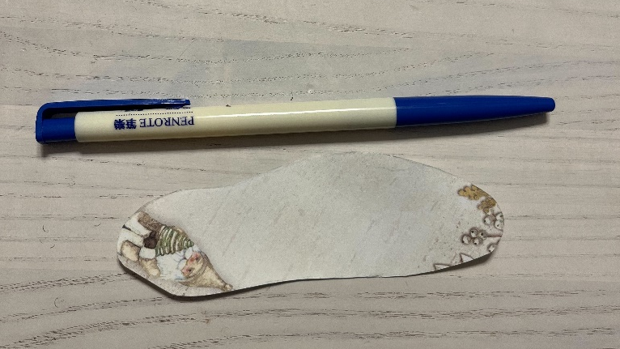
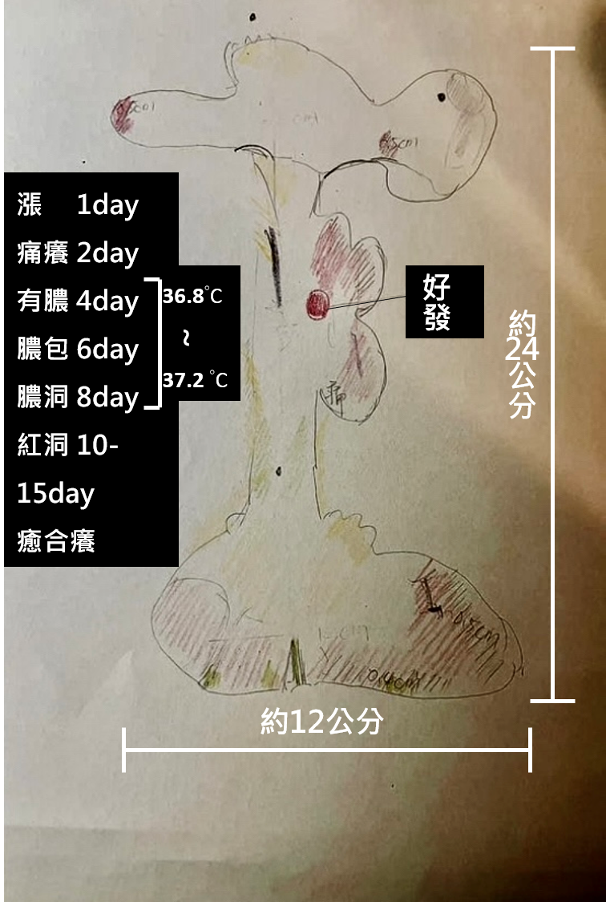
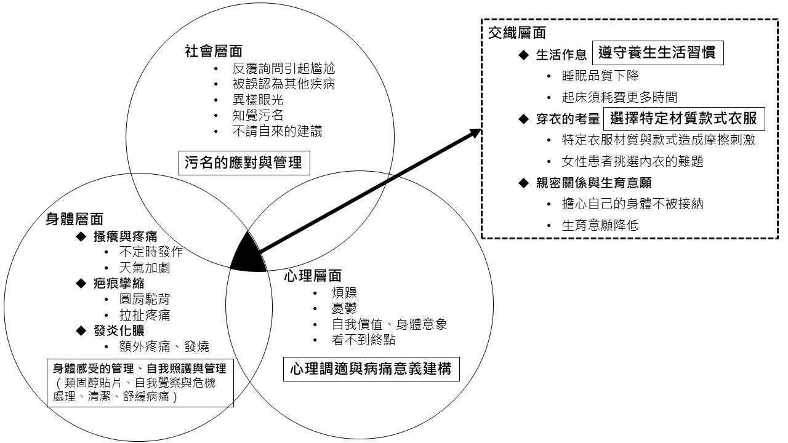
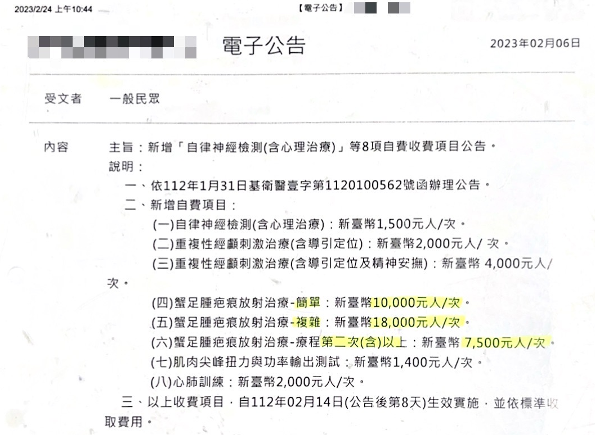
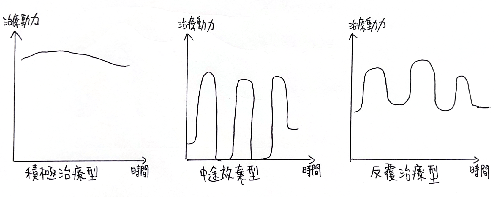
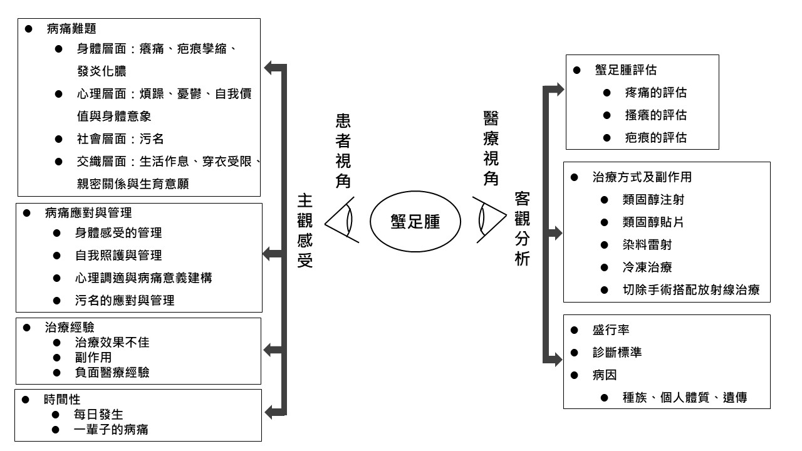
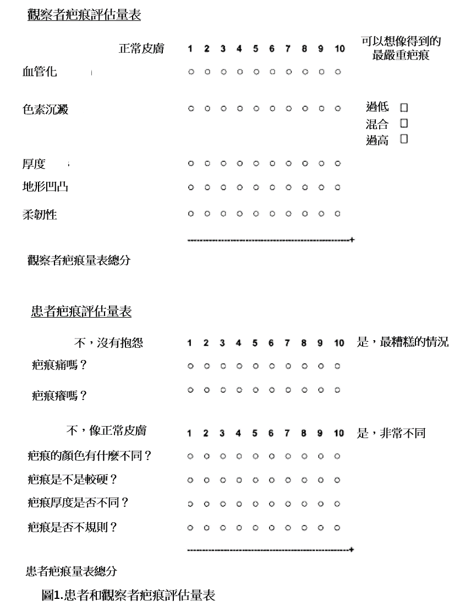
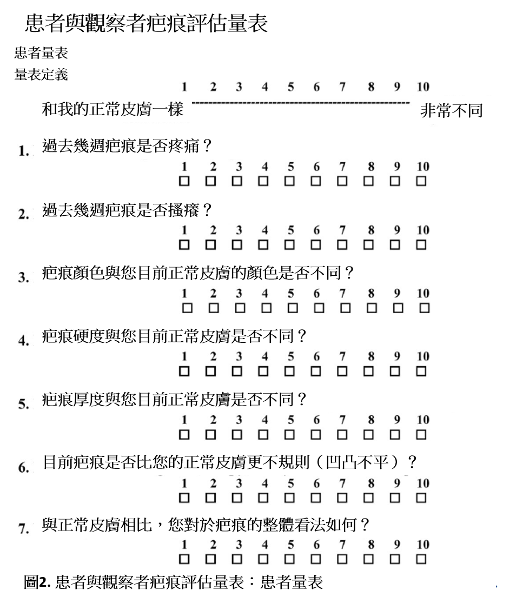
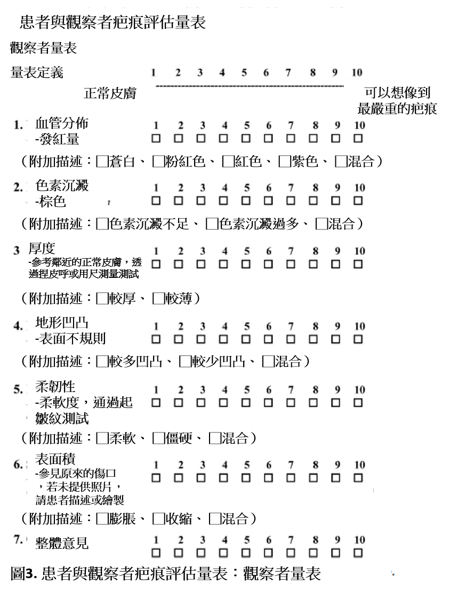

這篇論文是用無數年的病痛與疼痛所寫下，即便過程中好幾度想要放棄，但仍然走到這步了。
感謝一路以來細心指導我的美蓮老師，不只在論文上提供實質建議，也擔任陪伴支持者的角色，與我討論病痛的經驗，讓我能如實地面對自身生命中的苦難，有許多隱微的經驗是唯有疼痛者才能理解的。感謝兩位口試委員東龍老師和君諭老師，仔細閱讀論文並在口試時提供寶貴的意見與提醒，讓我可以反思與修正，並讓論文更加完整。
感謝九位受訪者所貢獻珍貴的病痛經驗，我深深瞭解這是以數十年血淚換來的生命經驗，由搔癢和疼痛交織出旁人難以理解的困境。謝謝受訪者的信任，我在訪談中感受到自己並非獨自一人在承受病痛，原來世界上有其他類似處境的人，希望你們也如此感受。特別感謝前來參與口試的小萍和阿浩，你們的現身給了我很大的支持與鼓勵；也感謝未能到場的小芸以及其他受訪者。
感謝碩班社會團體工作的同學們，成為一個支持的網絡，尤其是怡薇經常帶給我鼓勵，互相分享交流。感謝家人的支持和允許，讓我得以完成論文。感謝長庚的蔡醫師，因為切除手術的成功讓我得以減輕病痛生存下來。
特別謝謝我的伴侶季涵，每當我感到失落時，妳總是奮不顧身地給我支持與溫暖、總是告訴我我的身體很美，我無法忘記妳曾說，「這都是你的一部份，疤痕是生存下來的證據。」遇見妳也讓我漸漸長出對自己的自信，甚至能完成這樣一篇論文，觸碰自己的病痛。我永遠愛妳和毛生！
最後，謝謝我自己沒有放棄。無數次面臨瓶頸又遭遇疼痛時，內心不斷浮現想放棄的念頭，但我還是好想把自己數十年的病痛轉化為力量啊。我始終相信，疼痛者的無盡細語是受苦時的浮木，但若能被縝密排列的話，就能成為橋樑穿越苦痛。在癢痛之間、在受苦的片刻，我好希望撐起一個空間，讓人能多一絲理解也好，在疼痛的空白中留下一點意義。
特別紀念已故的好友朱怡璇
2025/5/20文揚
蟹足腫是一種過度增生的疤痕組織，因為體質和遺傳的緣故，導致受傷後的疤痕會生長超出傷口範圍，造成搔癢、疼痛和疤痕孿縮的症狀。根據文獻指出，蟹足腫在臺灣的盛行率為0.22%，具有蟹足腫體質的人約佔總人口的1%。治療方式主要以類固醇注射、雷射治療或手術治療為主，然而，由於蟹足腫難以根治的特性，使得患者必須長年承受病痛，往往影響其日常生活。
目前有關蟹足腫的研究大多集中在醫學領域，從病因、病理機轉、治療成效等方面研究蟹足腫，缺乏對患者病痛經驗的瞭解。本研究從研究者自身經驗出發，旨在探討蟹足腫患者的病痛經驗，分析其身體、心理和社會層面的病痛。研究採用質性方法，透過深入訪談蒐集九位患者的主觀經驗，瞭解其面臨的病痛難題、病痛應對與管理方式以及治療困境，並以主題分析法進行分析。
研究結果可歸納為以下四點：（一）蟹足腫患者具有豐富的病痛經驗，不定時的癢痛以及不可逆的皮膚變化帶給患者困擾，病痛難題是鑲嵌在患者日常生活中難以分割的一部份，且患者會透過各種方式應對與管理；（二）蟹足腫患者的病痛具有歷程性，無論是在治療與患病方面，或是在應對與管理方面，患者會學習與適應病痛，時間因素在其中扮演重要角色；（三）蟹足腫患者的治療困境，包含類固醇注射太過疼痛、類固醇貼片無法合法進口以及自費手術昂貴，影響醫療資源的可及性；（四）醫療視角與患者視角存在差異，醫護人員多著重在病症的處理，而患者則在主觀上因病痛感到受苦，雙方經歷不同的現實，但兩種觀點各有其重要性。
本研究深入探討蟹足腫患者的病痛經驗，瞭解患者在日常生活中的病痛難題、應對與管理方式以及治療經驗，期望能提供實務工作者作為反思與參考，以提升蟹足腫及疤痕患者的整體福祉。
關鍵字：蟹足腫、疤痕、疼痛、病痛經驗
蟹足腫（keloid）是一種皮膚對於受傷的過度反應，在癒合過程中所造成的疤痕組織，由於膠原蛋白纖維過度增生，使得傷口癒合的疤痕超出原本的傷口範圍並且凸出皮膚表面，常讓病人感覺癢或痛（林仲，2001），雖不會致命，但會使病人的外觀和心裡收到嚴重打擊（孫雷銘，2015），影響患者的生活品質（Kassi et al., 2020; Thornton et al., 2021; Barone et al., 2021）。在外觀上，蟹足腫呈現紅色凸起的疤痕組織，較常發生在胸前、肩膀、上臂、耳垂和兩頰等部位（Blit & Jeschke, 2012；當代醫學編輯部，2009）。目前有關蟹足腫的病因尚未清楚，但與遺傳、發炎、組織張力、種族有關（官振翔，2024），因皮膚受傷、粉刺或青春痘都有可能形成蟹足腫，在臨床上將罹患蟹足腫的體質稱為「蟹足腫體質」。
一般來說，傷口經過癒合產生的疤痕，代表身體不再受傷，然而，某些疤痕如蟹足腫或燒燙傷產生的肥厚性疤痕，卻會在皮膚表層出現肥厚、紅腫的疤痕，並且帶給患者癢、痛、張力、限制活動能力。這是一種特殊的情況，因為傷口已經修復，理當不該再出現不適或疼痛，但蟹足腫或肥厚性疤痕卻會持續帶來困擾，這類疤痕被視為病理性疤痕。
作為一種難以根治的疤痕組織，蟹足腫不只為患者帶來疼痛、搔癢影響日常生活，也會造成外觀上的改變而影響自尊及心理狀態。在本研究中，研究者自己即是蟹足腫的患者，因此深知罹患蟹足腫的困擾與痛苦，這成為本研究初步的動機與背景，從個人的生命經驗為出發點，研究者發自內心好奇：「是否也有類似於我這樣處境的人呢？他們的經驗如何？他們又是如何應對與管理這些病痛呢？」如此的叩問，是研究者在病痛生活中不斷浮現的，並進一步形成本研究的問題意識，欲探討蟹足腫患者的病痛經驗，藉此更全面描繪蟹足腫患者的處境
生病是一個重要的生命事件，疾病不僅在生理方面帶來不適和症狀，亦會在心理和社會層面產生影響。莫藜藜（2020）指出，疾病會帶給人不同的心理困擾，受到個人性格、社會文化與疾病性質所影響，常見的心理困擾包括：身體意象（body image）的瓦解；悲傷和憂鬱；害怕、焦慮和罪惡感；視生病為恥辱；懷疑、不安；怨恨命運或所信仰的神等等。由此可知，生病對一個人的心理狀態影響甚大，尤其當人罹患不治之症、難治之症或病因未知的疾病時所產生的無力感和負面情緒，那都是生病經驗中所要面對的。這些負面情緒或症狀也可能進一步影響一個人在日常生活中所扮演的社會角色，諸如家庭、工作或社交生活。
關於生病的定義，在醫學上認為生病是一個人生理與心理健康異常的狀況；在社會學上則將生病視為偏差的行為模式，強調個人因疾病而無法維持原有的社會角色與功能（Cockerham, 2014）；在心理學上，壓力與健康密切相關，長期的壓力可能會影響個人的生理機能、行為模式與情緒調節。
從上述的定義來看，可以得知生病經驗在不同領域具有不同的意涵，事實上，醫療社會學就將生病劃分為三個概念：病症（disease）是指一種身體不適的狀態，包括生理功能的失常；病痛（illness）是指個人感覺自己生病，從而改變行為一種主觀心理狀態；病態（sickness）則是指個人因生病而損傷其社會角色的一種社會狀態（Cockerham, 2014），而醫療更是一種提供科學診斷、醫治與疾病預防的制度化體系（葉肅科，2008）。相較於生物醫學模式，社會工作將疾病看作是一種心理暨社會現象，認為生病是一個人因疾病而無法適當扮演各種社會角色的情況，更強調生病的心理和社會意涵（莫藜藜，2020）。本研究關注蟹足腫患者的病痛經驗，正是包含患者在因生病而產生的病痛難題以及在生理、心理和社會層面的應對和管理。
就如同談論藥物可以談藥物的種類和機轉，但另一種角度也可以談論服用藥物的心情、內心轉變或自我調節等等，談論生病亦能夠從不同角度探討。根據Kleinman（1988/2020）的說法：
「病痛（illness）是指病人及其家屬、或是再大一點的社交網，對症狀和失能有什麼感覺，如何共存，又作何回應；病痛是一個人活生生的經驗，是對自己身體功能的留意，也涉及自我對病痛的評估、分類、詮釋，也涉及當事人的自行治療行為等等……（頁26）。」
病痛是關於一個人對自身生病的感受、覺察、評估，是一種主觀的心理狀態，也包括人們賦予該經驗的意義，以及他們如何理解正在發生的事情和他們身體之間的關係（Conrad, 1990）。以此角度來說，我們可以將生病視為一個連續性且多層次的經驗：首先，當我們生病時，我們會對自己的身體有所覺察；接著可能進行醫療上的檢查；接著決定是否治療、進行風險評估；過程中服用藥物會承受藥物副作用；順利康復之後該如何回歸家庭與工作崗位；如何遮掩手術的疤痕、被詢問時又該如何解釋等等…這一連串的議題都是生病時所需要面對的。
Kleinman所指的病痛正是強調在遭遇疾病之後患者所做的努力與因應，包含他如何傳達自己的症狀讓人瞭解、如何調適生病後的心情、如何應對病痛帶來的麻煩等主觀經驗，其中也涉及如何管理自身的生活，藉此適應病痛（Corbin & Strauss, 1985）。
醫學要能夠回應這些患者的病痛的管理是有困難的，這也並非醫師訓練所學。事實上，這凸顯了病症（disease）與病痛（illness）是以兩種不同的角度看待生病。Toombs（1992）就指出，醫師與病人兩方在不同世界中遇見疾病，儘管生病被認為是兩者之間共同的現實（reality），但實際上雙方所經驗的是兩個截然不同的現實，光是對問題的定義就有所不同，醫師是在科學領域接受訓練並思考眼前的「病症（disease）」，然而病人是在日常生活的世界中直接遭受「病痛（illness）」，雙方根據不同的思維呈現生病經驗的主題。Kleinman（1988/2020）則指出，病痛問題在生物醫學中被改造為病症（disease）問題，導致醫病雙方以不同的語言評估問題。在研究者的看診經驗中就曾感受過兩種視角的差異，醫生注重在疾病的診斷與治療，然而身為患者更關注的則是病痛問題，也就是因疾病影響在日常生活中的困擾和失能，以及伴隨而來的負面情緒。
此處蟹足腫照片未收錄於網頁版，完整圖文請至論文典藏頁下載。
如前所述，本研究探討蟹足腫患者的病痛經驗，背後的動機來自研究者自己正是一名嚴重的蟹足腫患者，並且承受至少十年以上的病痛。在我的病痛經驗中，疼痛是主要的困擾之一，每當疼痛發作總會打斷我的注意力，在深夜時刻又特別容易出現疼痛，引發失眠並使身體發炎，再次強化疼痛，形成惡性循環，進而影響日常生活作息。由於蟹足腫遍布臉部、肩膀、背部、胸口，我不只長期感到自卑、自我價值低落，也在穿衣方面感到非常困擾，必須考量不同款式的衣服對於疤痕的遮掩效果和舒適程度。
表1.1.1研究者身上各部位的蟹足腫（照片未收錄於網頁版）
嚴重且難以根治的蟹足腫病痛經常讓我感到絕望與憂鬱，直到2021開始陸續接受蟹足腫切除手術搭配放射線治療，才得以減輕病痛。對我來說，蟹足腫的症狀並非單一獨立存在，反而是以相互關聯的方式存在於日常生活中，症狀會帶來一連串的影響，這些影響又會交織引發更大的病痛難題與受苦（suffering）。
我認為，如此的經驗在生物醫學或實證醫學的脈絡中較難被充分理解，僅將人的苦楚化約簡短的字句，例如：疼痛、睡眠障礙。然而，短短的幾個字無法充分說明我的病痛經驗，讓人感受到診斷評估是屬於醫師的語言卻不屬於患者，正是這種差異凸顯了病症（disease）與病痛（illness）視角的不同。
對蟹足腫患者而言，病痛包含患者主觀的感受、應對與管理，例如：如何應對疼痛的不適與痛苦、如何管理生活作息與飲食習慣避免惡化復發、如何選擇適合的衣物遮掩疤痕和汙名，或是想好一套說詞去解釋何謂蟹足腫等等，這些應對與管理自身的方式都是病痛經驗中的重要元素。然而，蟹足腫這類疤痕所帶來的疼痛以及種種困擾往往是抽象且主觀的經驗，加上社會大眾對於蟹足腫缺乏認識，要向人表達自己的病痛是困難的，即便表達了也不一定能被充分理解，容易使蟹足腫患者默默隱忍病痛，獨自面對也無人訴苦。
身為蟹足腫患者研究者認為這些病痛經驗是值得探討的，不僅因為病痛較為主觀、抽象而難以被理解，也因為目前有關蟹足腫的文獻幾乎都以生物醫學觀點或量化研究為主，缺乏病痛觀點與質性的探討。因此，探討患者主觀的病痛經驗、應對與管理和治療經驗，有助於我們更全面瞭解蟹足腫患者的處境。
本研究另一項動機與研究者過去進行的行動有關。「聆聽疼痛計畫」是我在2022年所進行的非正式訪談行動，當時修習系上「啟動力量與社會工作實踐」課程，授課老師鼓勵我們反思自身的生命經驗，並化為行動的力量。於是，基於研究者個人的病痛經驗，我在網路社群發起了「聆聽疼痛計畫：撿拾疼痛的碎片」，嘗試訪談慢性疼痛者的經驗。詳見附件一。
該計畫針對疼痛對患者的影響進行訪談，探討患者如何與疼痛共處、疼痛發作時會怎麼做、以及如何用隱喻描述疼痛。最終一共訪談了九位慢性疼痛患者，他們各自與不同類型的疼痛長年共處，包含：僵直性脊椎炎、未知疼痛、心臟瓣膜疼痛、生理痛、貝西氏症、腰部肌肉纖維化、胃痛、腕隧道症候群、自傷疼痛。
透過這些長期與疼痛和病痛共處的患者們的經驗，該計畫令我瞭解到抽象、主觀的經驗是能夠透過訪談的方式被好好訴說和聽見，並且也發現每個患者都有各自因應疼痛的方式，也能瞭解到患者賦予病痛的意義。
總之，「聆聽疼痛計畫」是研究者過去進行的訪談行動，是本研究動機的基礎，也具有重要的啟發，當探討患者在日常生活中受到的影響，自然會談到個人的病痛經驗、對於這些影響的感受、情緒、因應，正是一個人活生生與病痛共處的主觀經驗，即使充滿痛苦卻是富含意義的。
本研究旨在探討蟹足腫患者的病痛經驗，瞭解患者在生理、心理和社會層面的病痛難題，包含病痛的應對與管理、治療經驗與汙名經驗。研究目的與問題說明如下：
基於上述研究目的與問題，本研究期望能深入探討蟹足腫患者的病痛經驗，包括在身體、心理和社會層面的病痛，並瞭解患者在日常生活中如何應對與管理病痛的困擾與難題。此外，本研究從病痛的觀點出發，揭示蟹足腫患者的重要經驗，期望能提供臨床上的實務工作者作為反思與參考，並促進蟹足腫患者的福祉與病痛研究的發展。
蟹足腫（keloid），又稱為瘢痕疙瘩，是一種傷口癒合的異常反應，由於纖維母細胞的過度增生（Knowles et al., 2023; Barone et al., 2021），形成紅色增生疤痕如蟹爪（crab’s claw），最初由醫師Alibert於1806年命名（Addison, 1854），在臺灣一般俗稱蟹足腫。身體任何地方的疤痕都可能變為蟹足腫（林仲，2001），但主要好發在胸前、肩膀、上臂、耳垂和兩頰等張力較大的部位（Blit & Jeschke, 2012；當代醫學編輯部，2009）。
與蟹足腫經常比較的是「肥厚性疤痕（Hypertrophic Scar，簡稱HTS或HS）」，是燒燙傷患者常見的疾病（Friedstat & Hultman, 2014），兩者在在外觀上相似，都是纖維組織的增生，但蟹足腫會生長超過傷口範圍，肥厚性疤痕則是侷限在傷口位置。兩種疤痕都會引發搔癢、疼痛、灼熱感以及疤痕攣縮（scar contracture），會隨著組織纖維化而逐漸收縮、僵硬，導致美觀問題或關節活動受限，需要相當長的時間才能軟化，並且難以預防（Brissett & Sherris, 2001; Masanovic & Téot, 2020；榮民總醫院，2023）。此外，蟹足腫及肥厚性疤痕都會對患者的自尊、社交和生活品質帶來嚴重的損害（Lee et al., 2004; Bock et al., 2006; Oliveira et al., 2022）。
有關蟹足腫的病因，大多研究都描述蟹足腫是因傷口在癒合過程中過度增生的疤痕，將蟹足腫的形成歸因於受傷，不過也有文獻提到在沒有受傷的狀況下也會形成蟹足腫（Blit & Jeschke, 2012）。更仔細探究蟹足腫出現的真正原因，目前並沒有確切的答案，大多文獻都指出與種族、個人體質和遺傳有關（林仲，2001; Blit & Jeschke, 2012; Barone et al., 2021；蔡嘉軒，2022），因此，可能是生化因素、皮膚張力、內分泌因素和遺傳的綜合作用（Brissett & Sherris, 2001）。
儘管蟹足腫沒有致命危險也無關壽命長短，但卻是一種惱人的疾病，一個非常小的傷口如蚊蟲叮咬或打耳洞都可能形成蟹足腫（孫雷銘，2015）。此外，蟹足腫一旦形成就難以治療且復發率高（當代醫學編輯部，2009；Juckett et al., 2009; Lumenta et al., 2014），雖然存在多種治療方法，但沒有單一的方法特別成功，頂多只有適度成功的效果（Brissett & Sherris, 2001），甚至有文獻認為是無法治癒（incurable condition）的疾病（De Menezes Neto et al., 2022）。
蟹足腫在治療方面，可分為手術與非手術的方式，非手術治療包含：使用矽膠片進行壓力治療、塗抹除疤軟膏、直接在病灶內注射類固醇、冷凍治療或雷射治療（Ogawa, 2017; Thornton et al., 2021）；針對大範圍蟹足腫患者，近年來有醫療團隊以手術切除搭配術後放射線治療，復發率可降低至10-15%（蔡嘉軒，2022）。
儘管蟹足腫有許多治療方式，但被認為效果顯著且方便的是直接在病灶內注射類固醇（Betarbet & Blalock, 2020），可以使疤痕縮小，然而也伴隨皮膚萎縮、微血管增生、疤痕變寬（孫雷銘，2015）、皮膚變薄、瘀青、青春痘（胡昆宜等人，2007；衛生福利部，2019）等副作用。Lumenta等人（2014）對增生性、肥厚性、蟹足腫疤痕患者進行網路調查，研究發現蟹足腫患者除了手術切除之外，經常會使用壓力衣、注射類固醇或矽膠片等方式預防或治療蟹足腫疤痕。
Bock等人（2006）的研究指出，蟹足腫患者的平均病程長達 7.2 年，且大多數患者對治療成效缺乏信心，認為治療不會帶來實質改善，進一步加深無力感與絕望情緒。
盛行率方面，蟹足腫在不同文獻有很大的差異（Barone et al., 2021），孫雷銘（2015）研究也發現文獻之間存在不合理的情況。不過大多文獻都指出蟹足腫在西班牙族裔、非洲裔和亞洲裔具有較高的盛行率與發生率（Oluwasanmi, 1974; Seifert & Mrowietz, 2009; Blit & Jeschke, 2012），以發病率來說，在非洲裔和西班牙裔為4%~16%，在白人群體中則低於1%（Barone et al., 2021）。有關亞洲裔的盛行率與發生率的資料較少，孫雷銘（2015）針對此點進行研究，使用臺灣健保資料庫進行分析，發現全臺灣的盛行率為每10萬人有215人或是0.22％，依此結果推論亞洲裔的蟹足腫盛行率其實和白人較為接近，遠少於黑人。蔡嘉軒（2022）則提出不太一樣的數據，指出臺灣人蟹足腫體質約佔總人口的1%，代表每100人就有1人可能發生蟹足腫。研究者認為，統計數據上的差異，和蟹足腫的發病年齡、部位、嚴重程度有關，影響患者是否就醫，再加上蟹足腫與肥厚性疤痕類似，存在誤診的可能性。
研究者在搜尋文獻的過程發現，有關蟹足腫的文獻並不多，孫雷銘（2015）認為，這是因為蟹足腫並非致命的疾病，患者人數也較少。為了釐清蟹足腫患者的處境，研究者不禁思考，既然蟹足腫在臺灣的盛行率為0.22%（孫雷銘，2015），那麼蟹足腫算是一種罕見疾病嗎？根據臺灣罕見疾病的定義，盛行率需要在萬分之一以下或因特殊情況，才符合罕見疾病（衛生福利部，2012），對比蟹足腫每10萬人有215人的數據仍有一段距離，使蟹足腫成為一種「既不夠罕見也不夠普遍」的疾病。這點說明了蟹足腫患者的處境，由於患病的人數較少，加上臨床上會因為種族、位置、病變大小而有個體差異（De Menezes Neto et al., 2022），使社會大眾對於蟹足腫缺乏認識，容易形成汙名或誤解的情形。儘管臺灣在2015年的「八仙塵燃事故」之後出現許多關於燒燙傷疤痕和汙名的研究（簡苑玲，2019；林宛柔，2021；梁力云，2022），增加社會大眾對於疤痕患者的認識，但蟹足腫疤痕與燒燙傷疤痕仍然有所不同，需要未來更多研究讓大眾有所瞭解。
蟹足腫作為一種疤痕組織，除了帶來疼痛、搔癢和疤痕孿縮之外，凸起的樣貌也會帶來外觀上的改變。臨床上將疤痕分為正常疤（normal scar）與病理性疤痕（pathologic scar），前者是平滑、柔軟或僅是造成皮膚變化；後者則像蟹足腫、肥厚性疤痕，會過度增生，形成紅色凸起（林宛柔，2021）。
儘管蟹足腫的症狀是患者病痛的根源，但是在生物醫學模式和專業分科分工的邏輯下，醫療體系一般使用各種評估量表針對症狀進行評估，將患者的主觀病痛經驗轉化為醫護人員可用的客觀數據，而非從整體的觀點評估蟹足腫患者的病痛。以下從疼痛、搔癢以及疤痕三個面向的評估描繪蟹足腫的評估方式。
疼痛是人類最基本的一種經驗，任何組織因傷害而引發的一種不舒適的感覺或情緒的反應，就可稱為疼痛（莊曄媺、葉英堃，1999）。疼痛的評估被視為人的第五生命徵象（江孟冠，2010），臨床上，疼痛評估要徹底瞭解病患的疼痛主訴、社會功能、使用藥物、有無濫用藥物情形以及同時存在的疾病（林智生、張家禎，2001）。初步的疼痛有幾個重點：詳查病史、理學檢查、了解病患心理及社會關係的影響、適當的診斷已確定疼痛的原因（謝瑞坤，2003）。高美華（2011）整理國際上常見的成人疼痛量表如下表2.1.1。
名稱 | 提出者 | 用途 | 內容 |
|---|---|---|---|
慢性疼痛等級量表（The Chronic Pain Grade Questionnaire, CPG） | VonKorff、Dworkin和Resche（1990） | 主要測量慢性疼痛的強度以及與疼痛相關的日常生活障礙情形及失能分數。 | 量表共有20題，以0-10數等級量尺，1-3題測量疼痛的強度，第4題測量過去6個月疼痛造成的日常生活障礙天數，第5-7題測量失能分數。測量結果分為0-4級。 |
麥吉爾疼痛量表(The short form of the McGill Pain Questionnaire, SF-MPQ) | 內容有15項對疼痛的描述詞，其中11項是感覺性描述（抽痛、劇痛、刺痛、刀割痛、絞痛、啃咬般痛、灼熱痛、酸痛、悶痛、觸痛、撕裂痛），4項是情感性描述（筋疲力竭的、難受的、恐懼的、受酷刑的）。每題分數由0-3分表示疼痛的感覺及程度。 | ||
羅氏失能量表(Rolland and Morris Disability Questionnaire, RMDQ) | 廣泛應用在下背疼痛疾病病患 | 範圍包括日常生活、走路、休息、工作、穿衣及心理社會反應。 | |
簡易疼痛量表(The Brief Pain Inventory, BPI) | 內容分為疼痛強度與疼痛干擾次量表，量表使用0-10等級量尺，疼痛分數1-4為輕度疼痛，5-6為中度疼痛，7-10為重度疼痛。 | ||
視覺類比量表(Visual Analogous Scale, VAS) | 廣泛應用在評估不舒服的主觀感受，疼痛、疲倦及呼吸困難。 | 病患可自己點選，正確評估疼痛的強度及疼痛的變化。 | |
SF-36健康調查量表（Short-Form Health Survey, SF-36） | 瞭解研究對象的生活品質 | 分為生理及心理健康兩部分，包括生理功能、生理表現、身體疼痛、整體健康狀況、心理健康狀況、社會功能、活動力八個面向。 | |
表2.1.1常見的疼痛量表（高美華，2011，研究者自行整理）
不少學者都認定疼痛是一種主觀的個人經驗（楊美賞等人，1992；江孟冠，2010；胡文郁等人，2011），因此在疼痛的評估量表上經常使用描述詞來捕捉患者的疼痛樣貌與類型。然而，由於每個人對疼痛的易感性（susceptibility）不同（莊曄媺、葉英堃，1999），疼痛的評估仍有其限制，事實上，疼痛亦有可能受到心理和社會因素的影響而加劇（李明濱，1997）。
疼痛作為臨床上常見的症狀，其評估方式仍受到生物醫學模式和專業分工的影響，將症狀獨立評估，這預設著不同疾病的疼痛症狀具有相同的性質，疼痛被改造為一種標準化的醫療語言。然而，從患者的角度來看，每個疼痛都是獨一無二的經驗，是緊密連結患者生命的主觀感受。
類似於疼痛的症狀，搔癢同樣是抽象且主觀的經驗，賴佳汶（2016）以及羅淑芬等人（2016）整理常見的搔癢評估量表，包括：視覺評分量表、數字評分量表（numerical rating scale, NRS）、語言評分量表（verbal rating scale, VRS）、Duo搔癢評估量表、麥吉爾疼痛簡短問卷、5-D搔癢量表（5-D Itch Scale）、Leuven搔癢評估量表（Leuven Itch Scale, LIS），可以發現部分重疊疼痛的評估量表。其中，5-D搔癢量表會用於評估燒燙傷疤痕，擁有較低的錯誤率，進一步考量了搔癢的持續時間、搔癢程度、搔癢的變化、搔癢對日常生活影響（睡眠、休息/社交活動、做家務/外出、工作/上課）、搔癢的分布等五個層面（Elman et al., 2010，引用自賴佳汶，2016）。雖然搔癢的症狀相較於疼痛一般被認為比較輕微，但對患者造成的困擾同樣不能忽略。
儘管疤痕是皮膚受傷後癒合的痕跡、修復的象徵，病理性疤痕卻可能持續讓身體出現搔癢或疼痛的困擾，如何評估疤痕的嚴重程度就成了重要議題。疤痕的評估最早源自燒燙傷疤痕（burn scar）的研究，溫哥華疤痕量表（Vancouver Scar Scale, VSS）就是第一個將疤痕特徵量化的評估工具（Gutierrez et al., 2024），考量了疤痕的血管分佈、色素沉澱、柔軟度和厚度等客觀描述，VSS同時也是常見的疤痕評估工具（Lyons et al., 2019），許多量表都以此作為信效度檢驗的標準。
1. 評估項目
疤痕的評估項目大致可以分為客觀與主觀兩種類型，前者測量疤痕的顏色、厚度、面積、軟硬度等物理特徵，或應用3D相機（Ruccia et al., 2021）和印模材料（Berman et al., 2015）更精準地描繪疤痕圖像；後者則考量患者的意見，納入搔癢、疼痛等主觀經驗。表2.1.2為常見的疤痕評估量表。
名稱 | 出處 | 評估方式 |
|---|---|---|
溫哥華疤痕量表（Vancouver Scar Scale, VSS） | 血管分佈、色素沉澱、軟硬度、厚度，四個項目獨立評分，每個項目分為3到6個級距，分數越高代表越嚴重，滿分為13分，正常皮膚為0分。 | |
患者和觀察者疤痕評估量表（Patient and Observer Scar Assessment Scale, POSAS） | 包含兩種量表，分別由患者和觀察者評估。觀察者評估項目包括：血管分佈、色素沉澱、厚度、凹凸度、軟硬度；患者評估項目包括：疤痕是否疼痛、搔癢、顏色不同、硬度變化、厚度變化、不規律，每個項目皆以十點量表計算分數。 | |
日本疤痕工作坊疤痕量表（Japanese Scar Workshop Scar Scale, JSS） | 包含分類表與評估表兩部分，前者調查患者的種族、家族遺傳、疤痕數量、分佈、發病年齡、原因、面積大小、橫向生長、垂直生長、形狀、疤痕周圍發紅、主觀症狀等12項，每項3個級距，滿分25分；後者評估疤痕的硬化、隆起、發紅程度、疤痕周圍發紅、自發或按壓出現疼痛、搔癢等6項，每項4個級距，滿分18分。 | |
蟹足腫面積和嚴重程度指數（Keloid Area and Severity Index, KASI） | 包含活動分數和傷害分數，評估每個身體部位的紅斑、膿包/痂皮、隆起和覆蓋身體面積（body surface area, BSA）等項目，綜合計算分數。 | |
底特律蟹足腫量表（Detroit Keloid Scale, DKS） | 包含兩種量表，分別由觀察者與患者評估。觀察者評估項目包括：疤痕位置（是否可以用衣服遮擋或是引起注意的位置）、厚度、表面積；患者評估項目包括：搔癢頻率、疼痛頻率、影響伸展或移動的程度、影響生活品質多寡。綜合兩種量表的評估結果轉換為分數加總，滿分為14分。 |
表2.1.2常見的疤痕評估量表（研究者自行整理）
在各個疤痕評估工具當中，患者和觀察者疤痕評估量表考量了疼痛和搔癢程度（表2.1.3）（附件二），將患者的主觀感受納入評估範圍，分別由患者和觀察者進行評估，並綜合兩者的分數。
患者的疤痕評估項目 | 觀察者的疤痕評估項目 |
|---|---|
疼痛程度 | 血管分布 |
搔癢程度 | 色素沉澱 |
顏色 | 厚度 |
硬度 | 凹凸度 |
厚度變化 | 軟硬度 |
不規則程度 |
表2.1.3 患者和觀察者疤痕評估項目（研究者自行整理）
當疤痕的評估納入患者的主觀感受時，意味著它並非只是將疤痕視為客觀測量下的物體、觀察其物理特徵，而是生長在患者身體上活生生的病痛。不少研究將主觀評估與客觀評估進行比較，從中發現患者主觀評估的重要性。
Moss（2005）探討疤痕的主客觀評估與患者心理適應之間的關係，研究結果顯示，當患者認為疤痕程度越嚴重，其心理適應能力就越差，呈線性關係，主觀評估的疤痕嚴重程度比客觀評估更能夠預測患者的心理適應狀態。該研究也發現客觀嚴重程度與心理適應的關係受到疤痕可見性的調節，疤痕是否在身體可見的部位具有一定的影響。
Brown等人（2010）探討主客觀評估對患者社會心理困擾的影響，研究發現，相較於臨床醫生評估的客觀嚴重程度或者是疤痕的類型，患者主觀評估的疤痕嚴重程度以及疤痕的可見性，與社會心理困擾較有關係，因此該研究認為應該要將患者自我評估納入臨床評估的一部份。
Martin等人（2003）探討時間變化對於疤痕主客觀評估的影響，使用VSS量表進行客觀評估，並要求患者評估自己的疤痕（問題1）以及評估其他人對疤痕的看法（問題2）。研究結果顯示，疤痕的客觀嚴重度會隨著時間推移而改善，患者對疤痕的看法（問題1）也會改善，但其他人對於疤痕的看法（問題2）則沒有相關性，這代表客觀評估無法充分反映患者對於疤痕的感受，凸顯了在疤痕評估中納入以患者為中心的主觀因素的必要性。
上述研究反映出在患者的主觀評估對於疤痕評估的重要性，納入患者的搔癢與疼痛情形、患者對疤痕的看法，對於嚴重程度的評估都是有益的。然而需要指出的是，疤痕的評估目前仍面臨許多挑戰，Lyons等人（2019）系統性回顧疤痕評估方法與工具，發現各個研究之間的測量結果有很大的差異，並且大多量表更適合白皮膚的患者，但蟹足腫好發於有色皮膚的患者，未來應推動標準化的評估方法。
2. 蟹足腫的評估量表
在疤痕的評估工具中，專門針對蟹足腫的評估量表共有三種，包括：POSAS應用於蟹足腫的改良（Nicholas et al., 2012）（附件三）、蟹足腫面積和嚴重程度指數（Limmer et al., 2022）以及底特律蟹足腫量表（Lyons et al., 2023）。其中，底特律蟹足腫量表納入了疤痕位置是否可以合適地隱藏在衣物底下（able to hidden under seasonally appropriate clothing）抑或是在外觀明顯的部位（cosmetically noticeable area）作為評估項目，進一步考量患者實際在日常生活中的穿衣狀況，關注疤痕可見性對患者的影響。蟹足腫疤痕對於患者的影響不只關乎疤痕面積範圍大小，也關乎疤痕的部位、顏色、是否能遮掩、患者是否滿意外觀等等，具有主觀的成分，理想上蟹足腫評估應全面考慮蟹足腫對身體和心理的負擔（Gutierrez et al., 2024）。
綜合上述，從疼痛、搔癢到疤痕的評估，可以瞭解醫療體系如何通過量表工具將患者多元、主觀且充滿異質性的病痛經驗轉化為客觀、科學且標準化的數據，這也是Kleinman（1988/2020）所說將病痛問題改造為病症問題的過程。
在患者和觀察者疤痕評估量表中，我們可以看見患者的身體被兩種視角觀看，一種是採客觀視角，將人的身體視為一個可觀測的實體，理性地測量疤痕的物理特徵，諸如顏色、厚度、軟硬度、地形凹凸、不規則、表面積等具體可見的身體秩序，這本身是一種空間化疾病的作法（Foucault, 1963/2019: 24）；另一種則是來自患者的主觀視角，讓患者在評估過程中現身，檢視自身身體的疼痛與搔癢程度，兩種截然不同的視角的交會完成了疤痕評估。研究者認為，這兩種觀看身體的方式分別可以對應到病症（disease）與病痛（illness）的概念。在病症的視角下，疤痕彷彿獨立於患者之外，僅當作是一個物體測量其物理特徵，此時的患者也只是一個客體（object），缺乏任何情緒與聲音，依循生物醫學模式的觀看；而在病痛的視角下，評估程序開始關注患者主觀的經驗感受，將搔癢、疼痛、對自身疤痕的看法納入評估中，此時，疤痕的主人—患者被賦予「評估自身感受的權力」，疤痕不再只是一塊結締組織，而是患者血肉之軀的一部份。
弔詭的是，在疾病的理性秩序中，患者理應被視為干擾的來源和外在因素（Foucault, 1963/2019），但是當疤痕評估納入患者的主觀感受之後，反而比起客觀評估更能預測患者的心理狀態（Moss, 2005; Brown et al., 2010）。由此可知，單以客觀、病症的角度評估疤痕是不足的，因為患者的疼痛和搔癢無法藉由客觀評估被看見，加上疤痕可見性的問題沒有若被納入，就無法觸及患者實際生活中受到的影響。舉例而言，臉部的疤痕雖然面積較小，卻會對患者在社會互動與心理層面造成巨大影響（Macgregor, 1990）。因此，疤痕的物理特徵並不能完全代表嚴重程度，須考量患者帶著疤痕生活的問題，尤其當疤痕出現在明顯可見的身體部位時，對患者而言更加嚴重。
延續上述，不少研究會關注蟹足腫或肥厚性疤痕患者的生活品質，主要使用皮膚科生活品質指數（Dermatology Life Quality Index questionnaire, DLQI）或皮膚問題經驗問卷（Questionnaire on Experience with Skin Complaints）瞭解患者的日常生活如何受到疤痕影響。表2.1.4為研究者整理有關蟹足腫生活品質調查的相關文獻。
出處 | 調查方式 | 調查對象 | 調查面向 | 研究發現 |
|---|---|---|---|---|
修改補充皮膚問題經驗問卷 | 蟹足腫及肥厚性疤痕患者 | 生活品質 | 患者在生活品質受到嚴重影響，在心理層面，患者經常因疤痕感到羞恥、自卑，避免參與公共活動如游泳池、三溫暖，並且也傾向隱藏病情，不願意讓親近的家人知情；在身體層面，疤痕帶來的癢痛、緊繃感且會隨著天氣變化加劇，甚至部分患者表示行動能力因疤痕而受限。 | |
半結構式質性訪談 | 疤痕患者 | 生活品質 | 大多數受訪者對自己疤痕的外觀不滿意，因為他們感受到汙名化與心理上的負面聯想，因此採取各種應對行為來遮掩疤痕。這些行為影響了溝通能力、人際關係、工作與休閒生活。對於疤痕的診斷結果與其難以根治的特性，受訪者普遍表示擔憂；而一般醫師缺乏同理的處置態度與現行治療的無效，也加劇了受訪者的痛苦。 | |
健康相關的生活品質量表 | 蟹足腫患者 | 疾病負擔 | 「疼痛與搔癢」對於蟹足腫患者帶來最大的損害，並且與患者的情緒與精神健康分數較低有關。 | |
身體臆形症量表、羅森伯格自尊量表 | 蟹足腫患者 | 身體意象和自尊 | 共有24位患者（40%）因為蟹足腫的存在而出現身體臆形症1 （Body Dysmorphic Disorder, BDD）的負性症狀，使患者出現負自我意象與身體意象。 | |
DLQI問卷調查 | 非洲蟹足腫患者 | 生活品質 | 非洲坦尚尼亞北部的蟹足腫患者生活品質中度受損，蟹足腫主要好發於年輕人，平均年齡29歲，沒有明顯的性別偏好。 | |
DLQI問卷調查 | 非洲蟹足腫患者 | 生活品質 | 120名受訪者當中，最多出現的部位是耳朵，蟹足腫伴隨疼痛的比例佔了53.3%、搔癢佔了95%；另外，65.83%的人在心理層面受到蟹足腫影響 | |
DLQI和心理問題自我檢查問卷（SCL-90） | 中國蟹足腫患者 | 生活品質和心理健康 | 蟹足腫患者比起一般人有更多的心理障礙，疤痕困擾與負面情緒、人際關係敏感、憂鬱和焦慮有關。此外，中國社會對於蟹足腫患者所受到的心理及社會影響所知甚少，蟹足腫在很大程度上被忽視，或許是因為醫療專業人員普遍低估了蟹足腫對於病患外表的重要性。 | |
半結構式質性訪談 | 疤痕患者 | 疤痕對日常生活品質的影響 | 疤痕不只會在患者的心理、社會身體和性健康方面帶來負面影響，並且發現長期存在的皮膚疤痕會對患者的職業發展和工作表現是有所影響的 | |
DLQI問卷調查 | 蟹足腫患者 | 治療前後的生活品質 | 搔癢與疼痛是大多數患者的困擾，然而對於工作和學習並沒有影響，研究團隊的解釋認為蟹足腫不是影響身體機能的疾病，因此對於工作能力沒有影響。 |
表2.1.4 蟹足腫生活品質調查相關文獻（研究者自行整理）
由上述文獻可見，蟹足腫引發的搔癢與疼痛會影響患者的心理狀態、身體意象、人際關係和社會功能，進一步對生活品質造成干擾。我們可以透過調查項目初步瞭解患者在日常生活中各個面向的病痛。例如，Bock等人（2006）首次針對蟹足腫及肥厚性疤痕患者的生活品質進行調查，該研究從皮膚問題經驗問卷中修改補充，共挑選出15個題項如下：
天氣的變化會嚴重影響我的疤痕（疼痛、張力感）
我的疤痕限制了我的活動能力
我成功無視他人對我的疤痕所持的保留態度
疤痕所造成搔癢經常會影響我
由於我的疤痕，我有時會羞於進行性行為
我發現很難忍受疤痕引起的搔癢
我會盡力不讓人靠近，以免知道我有疤痕
當我的疤痕發癢時，我無法阻止自己去抓
當我想到我的傷疤時，我覺得自己的身體沒有吸引力，在性方面也不受歡迎
我發現接受自己的疤痕是很困難的
我不去游泳池或桑拿，因為其他人可能會因為我的疤痕而感到厭惡
我從不因為我的疤痕而感到尷尬或羞愧
像我一樣有疤痕的人會缺乏自信
當被問到有關我的疤痕的問題時，我感到不舒服
因為身上的疤痕我曾想過自殺
儘管這些題項考量了蟹足腫患者實際帶疤生活可能遭遇的種種情境，並且關注患者因疤痕而產生的不自信、尷尬或羞恥等主觀感受，然而，仍無法完整呈現患者實際帶疤生活時，多元且豐富的病痛經驗。
在蟹足腫相關的文獻中，多數是以量化方式調查生活品質，僅有兩篇為質性訪談。Brown等人（2008）共訪談34名疤痕患者，將訪談的結果歸納為44個主題，涵蓋五個領域：身體舒適度和功能、自我和他人的接納、社會功能、對病況的性質和處理有信心以及情緒健康；Hsieh（2021）等人則訪談37位疤痕患者，將訪談結果歸納為八個主題：心理健康、社會幸福感、試圖隱藏、對疤痕的看法決定因素、性健康、健康/身體健康、職業生涯以及對疤痕的整體滿意度，然而該研究的蟹足腫患者僅佔所有受訪者的5%。這兩篇質性訪談雖然呈現患者更具體的患病經驗，揭示蟹足腫患者在心理和社會層面的困難與處境，但其關注焦點並非在病痛經驗本身，而是從較為宏觀的角度探討患者的生活品質如何受到影響。
綜合上述，蟹足腫作為一種對治療有高抵抗性的慢性毀容性皮膚病（Bock et al., 2006），在身體、心理和社會層面皆帶給患者長期的病痛，尤其蟹足腫持續反覆出現且無法根治，讓患者意識到這些疤痕永遠無法消失（Brown et al., 2008）。患者一方面要承受疤痕帶來的癢痛與張力；另一方面要面對外觀和身體意象的變化，不僅影響其心理狀態、工作與休閒生活，疤痕所附帶的汙名更影響人際關係與互動（Bijlard et al., 2017; Lu et al., 2021; Hsieh et al., 2021; Ngaage & Agius, 2018）。
本節說明蟹足腫的特徵、評估與生活干擾。當我們從皮膚疾病的角度來理解蟹足腫時，僅看見蟹足腫的病症的一面；然而，當進一步關注患者的生活品質時，可以更具體瞭解蟹足腫作為一種病痛所帶來的困擾。本研究聚焦在蟹足腫患者的病痛經驗，試圖從患者的主觀視角出發，探究其所面對的病痛難題，以及在日常生活中如何應對與管理病痛，深入瞭解患者的處境。
前一節說明蟹足腫的基本特徵、評估與生活干擾，透過疤痕評估方式指出客觀評估與主觀評估的差異，分別對應到病症與病痛的概念，前者以客觀方式觀看患者的身體，後者則納入患者主觀的意見與感受。本研究欲探討蟹足腫患者的病痛經驗，正是建立在患者主觀感受與生活經驗之上，瞭解蟹足腫患者如何應對與管理日常生活中的病痛。本節從生物醫學模式開始，說明病痛經驗的背景與相關概念。
現代西方醫學的發展可以追溯至17世紀，笛卡爾（Descartes）強調唯理性主義並提出身、心分離的觀念之後，他認為身體與心靈是互相分離的實體，人可以成為自然科學方法研究的對象，這奠定了以生物醫學模式為發展基礎的西方醫療（Sarafino, 1990/1997，引自張瑋文，2004）。
生物醫學模式（biomedical model）基於五個基本假設，首先，心靈和身體可以分開治療，也就是所謂身心二元論。第二，身體可以像機器一樣修復，醫學採用機器的隱喻，假設疾病是機器故障的結果，而醫生的任務是消裡機器，可以如工程師一樣修復功能失調的部分。第三，有時技術干預的價值（merits）被過度強調，導致醫學採取技術至上的原則。第四，生物醫學是還原論（reductionist）的，認為複雜的系統可以通過拆解各部分來理解，疾病的解釋側重於生物學的變化，相對忽視了社會和心理因素。第五，這種還原論受到19世紀細菌學說的發展而被強化，認為每一種疾病都是由特定、可是別的病原體所引起，又被稱為特定病因論（Nettleton, 2013）。
在笛卡爾身心二元論（mind-body dualism）的影響下，現代生物醫學論述將病人的身體化約為疾病所在的器官，身體只是解剖生理學關注的對象（蔡友月，2004）。傅柯於1963年出版的《臨床的誕生》，探討了現代醫學在18世紀末到19世紀的變化，隨著科學與技術的發展，醫學的語言改變了、觀看身體的方式也改變了，從注重質性描述與患者主觀敘述的古典醫學，轉變為以實證科學和診斷為基礎的臨床醫學，並通過一系列的命名與分類，建立系統化的疾病知識與秩序，醫學的觀念也就此產生變化：
「自此開始，所有能指與所指的關係重新分配，而這一點，發生在醫療經驗的所有層次上：在作為能指的症狀和作為所指的疾病之間，在描述與被描述者之間，在事件的發生與它對預後的判斷之間，在病變與它所標示的病痛之間等等（Foucault, 1963/2019:17）。」
傅柯認為，醫學的發展不僅將自我侷限於疾病的知識中，還創造出關於身體與健康的知識，並定義何謂正常，這進而引發常規化（normalization）以及所謂分類實踐（dividing practices）的效應，構築出自我與他者、好與壞、正常與病態的兩極對立（Chambon et al., 1999/2005）。藉此可以瞭解到，生物醫學模式建立在嚴謹、理性、客觀的實證科學基礎之上，再加上藥物的進步，逐漸使醫學朝技術導向發展。這塑造了我們對於健康的觀念以及看待身體與疾病的方式，醫學的注意力放在身體這台機器的分析與維修技術，關注病症（disease）的分類與命名，從而忽略患者的病痛（illness）、主觀經驗以及心理社會因素，患者反而成為醫學觀看的干擾和附加因素、外在因素（Foucault, 1963/2019:33）。
《臨床的誕生》出版14年後，Engel（1977）針對生物醫學模式提出批判，認為生物醫學是以分子生物學為基礎，它假設疾病完全是由可測量的生物（軀體）變數標準的偏差來解釋，在其框架內並沒有為病痛（illness）的社會、心理和行為維度留下空間。生物醫學模式建立一套科學的方法測量與分析人體用以診斷與治療疾病，並以還原論的哲理來理解疾病，將特定的生物化學偏差視為疾病的診斷標準。然而，這在解釋部分精神疾病時會出現困難，例如生活適應問題、人格障礙、存在焦慮等疾病，可能發生在神經功能完全正常的人身上，並且沒有器質性的損害，而主要受到心理和社會因素影響。Engel認為，生物醫學模式將生物因素視為首位，忽略了患者的心理和社會因素對於生物因素的交互作用影響。事實上，疾病的成因非常複雜，患者的生活條件與習慣也是影響疾病的重要變數、醫生與患者的關係也會構成心理效應直接或間接影響治療結果的好壞，因此，單以生物因素來理解疾病是不足的，須考量生物、心理和社會因素的相互影響，他進而提出生物心理社會模式。
Engel以「哀悼（grief）何時成為一種疾病？」為例，反思生物醫學模式的適用性，他指出，許多哀悼中的人因症狀困擾而求診醫生，但哀悼顯然是由心理因素主導，並不需要引入任何生化缺陷或因素來解釋，哀悼的情況更適合用文化或宗教的方式來理解，而生物心理社會模式提供了一個更全面的框架看待患者
由Engel（1980）提出的生物心理社會模式以系統理論為基礎，參考自然系統的階層建立出一種系統層次的框架來分析每一個事件（event），這些層次由大至小為：社會/國家、文化/次文化、社群、家庭、雙人關係（two-person）、個人（person）、神經系統、器官/器官系統、組織、細胞、分子等，這些層次具有等級大小之分，每一等級都包含了下一等級，例如：器官包含組織、組織包含了細胞，依此類推。該模式將患者視為重要的資訊來源，以系統化的方式蒐集患者全方面的資訊，包含：年紀、性別、居住地、婚姻及家庭狀況、職業及工作狀況等等，不只關注病症的部分，也關注患者的病痛、情緒和醫病關係。相較於生物醫學模式，由Engel所提倡的生物心理社會模式更強調整體和社會因素對於研究人、身體、生命與疾病的意義，並將患者的生理、病理、心理以及社會環境結合（孫慕義，2015），也促進後續全人（holistic）概念的發展。
隨著生物心理社會模式被推崇，近年來也出現全人照護的概念，強調以整體的角度照護與治療患者，考量人的生物、心理、社會以及靈性方面。首先需要釐清的是，全人（holistic）一詞來自希臘字根“holos”，意指完整（whole），但在文獻中會發現關於全人的稱呼有「holistic」以及「whole person」兩種說法。
Thomas等人（2018）針對全人照護（whole person care, WBC）的概念進行系統性的回顧，發現全人照護的定義在文獻中呈現多樣性，但普遍都強調跨領域整合、與患者的治療關係、認可醫生的人性、認識患者的個性、將健康視為不僅是沒有疾病的狀態，以及多元的治療模式等六個主題。另外，全人（whole person）、整體（holistic）和生物心理社會（biopsychosocial）三個術語雖經常互換使用，但並非同義詞，生物心理社會是三者當中定義最明確的，涵蓋多維度的整合照顧以及多元的治療方法；整體（holistic）和全人（whole person）本質上是同義詞，但相較生物心理社會具有更廣泛的意義且更強調治療關係，將健康視為整體和平衡的狀態；全人醫學（holistic medicine）與全人健康（holistic health）則有時包含另類醫學。
由此可知，全人的概念相當容易混淆，也缺乏明確的定義，所謂的整體（whole）背後強調「整體大於部分的總和」的整體觀，關注生物、心理、社會和靈性層面以及各層面之間的交互作用如何影響患者，藉此理解生病的複雜現象。林育志等人（2023）分析全人照護的概念指出，全人一詞的出現與概念發展主要對應到醫療或其他服務對於被服務者的需求層面增加，這些需求層面也隨著人類社會及文明發展而不斷擴張，被納入「人」應該被認可的需求面向。王志中（2024）引用我國衛生福利部醫院評鑑條文中的定義，指出全人照護的定義係指：
「不僅提供以病人為中心的生理、心理、靈性及社會之醫療照護，也要提供民眾促進健康與預防疾病之道，並能及時、有效提供或安排適當之長期照護或安寧照護。」並將全人照護的內涵歸納為以下三點：
病人在健康生活型態的建立方面應給予指導，以加速病人的康復及預防疾病的再復發。
病人在疾病的治療及預防上應採取主動，有積極的態度及作為，使疾病的治療更為有效。
病人的家屬及其照護者對於病人疾病的治療或生活上的照護，應給予指導，以提升病人全人照護的品質。
全人照護的概念延伸自生物心理社會模式，強調要考量患者生理、心理、社會和靈性各層面的需求，以多元、跨領域整合的方式進行治療或照護，關注一個人的整體面向，並重視患者的經驗。
總結來說，從生物醫學模式到生物心理社會模式和全人照護，醫學的發展自17世紀受到身心二元論影響，將人的身體視為機器進行科學性的研究，並將病症與症狀分類，創造一種理性客觀的醫學觀看方式，發展為生物醫學模式。隨後，Engel（1977）提出批判，認為以還原論和分子生物學為基礎的生物醫學模式過於聚焦在病症（disease）和生物層面，忽略了疾病的心理社會因素，患者的病痛與受苦事實上是超越生理層面，會影響一個人的社會角色、群體認同、自我關係、身體或家庭關係等等（Cassell, 1982），因此Engel提出生物心理社會模式，以此框架理解患者。隨著文明的進步與發展，人類的需求逐漸趨向多元，生物心理社會模式開始納入患者靈性層面的需求，演變為全人照護的概念，以一種整體觀看待患者各個層面的需求。
從醫學發展的歷史可以發現，醫學所重視的面向及其觀看視角的變革，在古典醫學時期多以質性語言描述疾病，且仰賴患者的主觀感受與自我報告；生物醫學模式則以理性、客觀和科學化的方式測量與治療，從病症的角度觀看患者，如前述種種關於疤痕與疼痛的評估量表；而近年來的生物心理社會模式以及全人照護，又再次開始重視患者的主觀經驗與需求。
當醫學視角從重視主觀到客觀又再次重視主觀時，如此的轉向也影響我們如何看待生病。生病不再只是生化測量數值上的偏差，而是涉及患者日常生活的需求，不僅只有病症，也包含病痛與受苦的成分。當醫學視角只關注在病症的治療時，患者因疾病而來的病痛與受苦就難以被正視和理解，這些苦楚也就被認定為個人事件，缺乏在醫療體系裡被療癒的可能。然而，緩解受苦與治癒疾病應該被視為醫療的雙重義務，這才是真正致力於照顧患者的醫學專業，而不單單只是照顧身體層面的痛苦（Cassell, 1982）。
關於病痛概念的探討，醫療社會學家最初關注患者的行為層面，將生病視為一種偏差的行為模式，這種觀點來自Parsons（1951）提出「病人角色（sick role）」的概念，描述個人生病時會採取的規範行為，將生病視為人類正常狀態的一種干擾（Cockerham, 2014）。生病構成了一個病人角色，病人得以暫時免除平時應負的責任，但有義務要尋求醫療、努力恢復自身健康狀態。然而，此觀點所受批判之處在於，它假設生病會有康復的可能，難以適用於解釋癌症這類慢性疾病，在無法康復的情況下，患者反而要調整或適應病情（葉肅科，2008）。此外，此觀點也將疾病中的「時間因素」簡單化，並且忽略了患者的自我管理（Rier, 2010）。
在分類上，Parsons的病人角色觀點屬於結構功能論（林文源，2017），且在1970年代成為病痛研究的典範，此觀點也被Conrad（1990）視為局外人觀點（outsider perspective），將病人的病症或病痛視為一個客體，忽略或最小化患者或受苦者的主觀現實，從患者之外的視角看待病痛，而非站在患者的角度理解病痛。Parsons的病人角色觀點顯示出，醫療社會學家仍依循著傳統醫療「治療/痊癒」的二元框架，從外在層面關注患者的病痛，並且將患者視為被動的角色，忽視其積極對抗病痛的能動性與可能性。
奠基於對Parsons病人角色觀點的批判，社會學家將關注點轉向患者的日常生活與生命世界。Strauss等人（1985）透過研究醫院病患提出軌跡（trajectory）的概念，區分出疾病歷程（course of illness）以及患病軌跡（illness trajectory），前者是指每個人罹患疾病的發展歷程，隨著時間發展可能會惡化或好轉；後者則是作者創造的概念:
「不僅是指患者的疾病在生理層面上的發展過程，還包括整個患病過程中所涉及的所有實作安排與組織，並且涵蓋了這些實作的參與者所受到的影響以及實作組織的方式；對於不同的疾病，患病軌跡可能也包括不同的醫護行為、所需的專業技能與資源、不同實作任務在參與者之間的分配（可能包括家屬或患者），以及實作者之間在這一過程中形成的各類關係，無論是工具性的（例如合作完成任務），或是情感表達性的（例如支持和安慰）（Strauss et al., 1985, 47）。」
在此觀點下，患者的患病經驗由不同機構場域（醫院、社區、復健診所）、參與者（患者、家屬、醫護）、時間（病程階段）、實作及其之間的關係所組成，是多維度、複雜的動態軌跡，且帶有不確定性：
「軌跡可能會直接急速下降；緩慢但持續地下降；緩慢波動，略微上下起伏後急劇下降；最初緩慢下降，然後進入長時間的平臺期，隨後突然急劇下降，甚至導致死亡（Strauss et al., 1975, 47）。」
在分類上，患病軌跡屬於互動論的典範（林文源，2017），考量患者在不同空間、面對不同對象以及不同病程階段的狀態，患病的軌跡也是患者生命的軌跡。特別是對於慢性病（如中風、糖尿病）患者來說，日常生活為了控制病情，需要獲得穩定的照護，而這些長期的照護、症狀的控制、身體的監控管理都存在於患者的日常生活及生命當中。另外，依照每個疾病不同，患病軌跡的形塑和變化也各不相同，甚至會受到患者對於病痛的感知以及期望影響（Strauss et al., 1975）。
1. 不同類型的實作
首先，Strauss等人（1985）使用「實作（work）」一詞來指稱患病軌跡中的任務與實踐，是因為該詞意味著多面向的深入審視（inspection）3包括：需要完成的任務是什麼、由誰來完成、如何完成、在哪裡完成、可能產生的影響，以及所涉及的問題（Corbin & Strauss, 1985: 224）。其次，Strauss等人（1985）從機器、安全、舒緩、情感、連結等面向探討患病軌跡中的實作（參考表2.2.1），說明患病軌跡由不同類型的實作、工作組織及參與者組成，並且這些實作都非單一任務，而是被安排地、連續性地在時間維度下形成工作軸線（line）進而構成患病軌跡。
實作類型 | 內容 |
|---|---|
機器實作（machine work） | 關於醫院中的設備以及操作設備的人員、手術、藥物等程序。 |
安全實作（safety work） | 關於臨床上患者的安全，醫院依照不同危害等級區分病房，並且設立因應程序以預防或減緩疾病的危害與治療風險。 |
舒緩實作（comfort work） | 關於疾病所伴隨的身體不適（如疼痛、噁心），無論是醫護人員或是患者如何減輕這些不適。 |
情感實作（sentimental work） | 關於患病軌跡中的情感成分，存在於任何涉及活著的、有知覺並且有反應的對象的實作中，例如患者在對抗疾病時的反應（焦慮、恐懼、恐慌、憂鬱），或者是因醫療處置而感到害怕或傷及自尊心的種種情緒。情感實作又可再細分為(1)互動與道德原則、(2)信任實作、(3)鎮靜實作、(4)傳記實作、(5)身份認同實作、(6)認知背景實作、(7)矯正實作。 |
連結實作（articulation work） | 關於患病軌跡中的種種實作形成的工作軸線如何被計畫、協調與管理，例如醫師提出整體的治療計畫，安排相關人員執行任務，形成軌跡的藍圖。 |
表2.2.1 不同類型的實作（Strauss et al., 1985: 40-141，研究者自行整理）
2. 患者的實作（Patients’Work）
在整個患病軌跡中，患者扮演何種角色呢？除了上述不同面向的實作類型之外，Strauss等人（1985）特別將患者的實作獨立探討，理由是它經常被視為理所當然：
「患者並非醫院的員工，也沒有健康專業人員或其他醫療工作者的身份，因此醫院的工作人員往往不會輕易將他們視為實際上在『工作/實作』，更不會認為他們是管理和塑造其軌跡的勞動分工中的一部分。事實上，患者的許多實作對於醫生、護士和技術人員來說是相當隱形的（invisible），因為這些工作並未被直接觀察到，而是被隱藏起來，或者即使被看見，也不被定義為『實作（work）』，而只是被認為是患者的活動或參與自身的照顧中。具有諷刺意味的是，患者被期望要是「配合的（cooperative）」，在醫院的術語中，這通常意味著當醫護人員全力以赴照顧他們時，患者不僅僅要是表現被動的（passive）或愉快的，還需要按照要求完成配合醫療和護理（Strauss et al., 1985: 191）。」
儘管許多醫護行為都是由醫護人員執行，但實際上這些工作的完成也需要患者付出精力、時間或勇氣配合參與，是不可或缺的。例如：在Ｘ光檢查時，患者要按照醫護人員指示維持身體姿勢，即便受到疼痛或疾病干擾仍要努力配合（Strauss et al., 1985: 195）；或者是在治療過程中，患者要能夠消化自身的情緒（恐懼、無助、憂鬱），成為冷靜的病患接受治療；又或者是患者要能夠準時回診，即便醫院很難掛號，諸如此類的實作經常被默認為理所當然或是患者的義務。由於患者的實作大多是自行完成，加上變異性大並與標準程序多少有些出入，因此經常不被看見，即使能被辨識，也往往不受醫護人員肯定，這種未被明確辨識（implicit），但卻對情境維持與軌跡開展相當重要的實作，Strauss 稱之為隱形實作/工作（invisible work）（林文源，2009：13）。
患病軌跡的觀點肯定了醫療體系中的各種實作，揭示患者在醫療體系中被期待成為一個能夠具備保持冷靜、耐痛且服從的能力，至於患者的精力、時間或勇氣則以一種隱微的方式存在種種實作之間，不被認可。若從Foucault的觀點來看，這些對於患者的期待不只是制度上的要求，更體現醫療體系中隱而不顯的權力運作，透過空間配置與實作安排，對患者的身體與心靈進行規訓。
另一個有關病痛的重要定義來自人類學家Kleinman（1988/2020）在其著作《The Illness Narratives》所說：
「病痛（illness）是指病人及其家屬、或是再大一點的社交網，對症狀和失能有什麼感覺，如何共存，又作何回應。病痛是一個人活生生的經驗（lived experience），是對自己身體功能的留意……病痛也涉及評估，看這些狀況是預期得到的、還是嚴重甚至需要治療的。病痛經驗還包括一個人對於病變的生理功能引發的病症作分類、解釋，以簡單易懂的方式傳達給社交圈裡每個一般人瞭解。（頁26）。」
由此觀點可以瞭解到，病痛的意義並非只停留在個人層面，而是涉及患者的日常生活及社交網絡，在病痛經驗中需要有一定的自我覺察、留意自身身體狀況並且判斷需要以何種手段應對；在社會互動的情境中，需要為症狀或疾病作出解釋，使他人能夠理解。在此隱含了一種管理（management）的概念，患者需要具備自身身體的知識、醫療的知識，透過一系列的覺察與判斷作出相對應的行動。
Kleinman（1988/2020）並且指出一個重要觀點是，他認為病痛難題（illness problem）是指患者的生活因症狀和失能而帶來麻煩，然而在生物醫學模式中，醫師將病痛難題改造為狹隘的技術問題、病症問題，忽略了患者及家屬的感受和情緒以及衍生而來存在於日常生活的問題（頁28）。
Mishler（1984，取自Rier, 2010）在其研究中就曾舉例，有一位醫師詢問患者酒癮的歷史時，患者回答「自從我結婚開始」，醫師則追問「那是多久？」，而非追問患者的生命經驗。這意味著醫師傾向以病症（disease）的框架或生物醫學的思考模式來詮釋患者的問題，將患者的病痛與生活及生命史分開。
在Kleinman的觀點下，病痛經驗並非侷限於醫師所關注的病症治療或藥物技術問題，而是患者需要「帶病生活」的活生生經驗，病痛是緊貼、鑲嵌在患者的生活世界（lifeworld），涉及一個人如何管理自身病痛並度過生活，這也包含對於疾病的恐懼、受苦、希望、汙名、支持、羞恥感（Rier, 2010）以及意義的建構（Kleinman, 1986）。
綜合上述，從Parson病人角色、Strauss患病軌跡到Kleinman觀點，可以看出病痛概念以及患者角色的轉變，患者從被動接受病痛到主動參與實作、到積極對抗病痛並賦予意義，如此的轉變能夠呼應前述從生物醫學模式、生物心理社會模式到全人照護的發展。病痛最初被視為客觀測量下的生物偏差，患者則被視為社會規範下偏差的個體；Strauss的患病軌跡理論將病痛視為一個動態歷程，患者不再是被動承受的個體，而是透過實作主動參與病痛的治療與管理，反映生病涉及心理和社會層面；Kleinman的病痛觀點則進一步強調患者的主觀經驗，指出患者積極應對病痛，賦予病痛意義的角色，並且肯定病痛敘事的價值，呼應全人照護對人文關懷與整體性照顧的重視。
當病痛長期持續存在或以慢性化的方式侵擾生活時，患者勢必要應對與管理這些病痛，將病痛融入自身的日常。在治癒成為不可能的情況下，患者為了控制病況的發展，就需要進行自我管理，藉此適應慢性病痛。然而，患者的自我管理並非單純依循醫囑，而是會透過日常生活經驗來反覆嘗試，逐漸瞭解自己對病痛的反應，並且在探索個人限制的過程中，重新調整日常生活以及重建自我認同（Kralik et al., 2004），換言之，患者是更有自主意識地在進行病痛管理。
Audulv等人（2011）認為患者的自我管理是一個持續進行、整合的過程，包含四個階段：(1)尋求有效的自我管理策略、(2)權衡其成本與效益、(3)建立日常規律與行動計畫，以及(4)協調出符合自身生活方式的自我管理。
Schulman‐Green等人（2012）則指出，自我管理是患者積極管理慢性病痛的動態過程，其過程包含三個部分：(1)關注病痛的需求、(2)啟動（activating）資源以及(3)帶病生活（living with a chronic illness）。
Udlis（2011）從五個維度分析自我管理的概念，包括：資源、知識、遵守計畫、積極參與以及知情決策，並指出自我管理的前提包含：資訊的取得、自我效能、支持系統、意圖性行動以及醫患雙方的互動投入。
Conrad（1985）透過訪談八十位癲癇症患者，發現約有42%的患者會進行自我調節（self-regulation），並沒有完全按照醫囑用藥，而這背後基於以下四個原因：(1)為了測試藥物的效果或疾病是否已改善、(2)減少對藥物的依賴，避免感到被藥物控制、(3)在社交情境中避免服藥以降低癲癇的「汙名化」風險、(4)根據實際情況調整用藥劑量，例如，為了考試這類的重要活動而事先服用多一點藥物。需要指出的是，癲癇的症狀存在不確定性，有些人即使服藥仍會發作，有些人即便沒有服藥也可能不發作。該研究說明患者實際上是更有意識地在應對與管理病痛，並且是非常細緻的經驗，會因為日常生活不同情況而作出調整。對於患者而言，若藥物意味著症狀控制，則自我調節服藥意味著一種自我照顧，這同時也是一個瞭解自己、學習如何帶病生活的適應過程（Kralik et al., 2010），背後是基於患者對藥物和疾病的知識，以及對自身身體的理解，是患者因長期病痛而發展出來的能力，隱含患者不想完全依賴醫療的自主意識（Koch et al., 2004）。
自我管理涉及患者一系列的決策與行為，並且滲透到生活各個層面（Audulv et al., 2021），被認為是實現生活秩序而發起的過程（Kralik et al., 2004）。在管理病痛與自我照顧的過程，患者能逐漸感受到秩序感的恢復，並朝向未來繼續前進（Kralik et al., 2010），這種能夠自主控制疾病的「控制感」，也代表病情的穩定（林耀盛、吳英璋，1999）。
相較於醫療設備完善、組織分工縝密的醫療機構，家庭環境缺乏專業醫護人員與必要資源，但患者仍需要設法在有限的條件下維持病情的穩定，付出精力（effort）與時間，方能正常化（normalize）生活的運作、防止疾病惡化（Strauss et al., 1985: 191; Rier, 2010）。Corbin和Strauss（1985）訪談心臟病、癱瘓、中風、癌症患者及其照顧者，從實作的角度將慢性病患者在家管理病痛的歷程歸納為三種實作（參考表2.2.2）。
類型 | 內容 |
|---|---|
病痛實作（illness work） | 是指與病痛有關實作，包含養生實作、危機預防與管理、症狀管理、診斷等實作 |
日常生活實作（everyday life work） | 是指維持家庭運作的日常實作，包括家務管理、上班工作、婚姻關係經營、育兒或是像下床吃飯這類活動 |
傳記實作（biographical work） | 是指患者因病痛而受到影響或改變的人生，同樣需要付出精力消化與管理。患病的軌跡與患者的生命軌跡呈現相互影響（reciprocal impact）的關係。 |
表2.2.2 慢性病患者在家管理病痛的三種實作（Corbin & Strauss, 1985）
Corbin和Strauss（1985）強調，慢性病患者每天需要執行的實作在數量、困難程度、所需時間以及性質方面變化多端，例如，患者通常每天都要上班、每天準備兩到三餐食物、打掃一週一次、每天服用藥物三次、物理治療則可能每週三次。由此觀點看來，患者的帶病生活是由無數實作構成，必須在管理自身的病況的情況下，同時維持日常生活的運作，將病痛管理的實作融入日常。然而這並非易事，在病痛的侵擾下，日常瑣事可能變得充滿困難，舉例而言，患者因行動不便而難以出門、或是因疼痛影響睡眠品質，這些病痛在患者的日常生活中形成阻礙，能否順利適應帶病生活也關乎患者的資源多寡，無論是經濟資源、物質資源、人際關係或是心理資本都是因人而異，且受到社會階級影響。此外，患者在適應並學習如何管理病痛的過程中，往往是漫長且充滿波折的，須經歷反覆的嘗試與失敗，同時會會受到病痛本身不確定性（uncertainty）的干擾（Pierret, 2003）。
患者的病痛管理並不僅限於Corbin和Strauss（1985）所提到在家中的管理，當患者在社會互動的情境時也需要作出許多應對與管理，例如，疾病的汙名該如何遮掩，或是準備一套說詞面對他人的詢問，這些同樣是非常隱微的帶病生活經驗。
作家Register（1987）在其著作《Living with chronic illness》中細緻地描述患有罕見疾病卡羅利氏症（Caroli disease）的過程與帶病生活。舉例而言，作者在第三章「慢性病痛的禮儀」提到，當有人問候「你今天還好嗎？你感覺怎麼樣？」的時候，當答案不是公式化的「好」的時候就顯得尷尬。Register指出，這凸顯了我們的文化對於疾病的矛盾態度，也是一個關乎禮儀的問題，在回應時是否該如實揭露自己的痛苦？應該說明多少細節？解釋多少狀況？病人需要判斷對方的意圖是真的想知道病況還是基於禮貌的問候。
Register（1987）進一步提到：
「『你今天好嗎？』這種問候對慢性病患來說特別麻煩，因為它暗示著會有改善的可能。在最糟糕的情況下聽起來像是一種能力測驗：「你還沒搞定那些狀況啊？』。在最好的狀況則顯示人們要理解慢性病是多麼困難，這種疾病永遠不會結束，但事實上也是你生活還在持續的特徵（頁50）。」
他接著舉例一位病人的回應：
「這些人不是我社交圈裡的人，我不會花時間和他們坐下來解釋，所以我試著對他們誠實：『我的障礙跟昨天一樣，但我很好，謝謝！』（頁50）。」
上述情境顯示慢性病患者面臨的兩難，看似微不足道的問候卻隱含許多應對與揭露的問題，須考量不同的對象而給予不同的回應。在研究者的經驗中也是如此，為了不要讓對方留下自己不健康或生病的印象、為了不要讓話題圍繞在自身的疾病上，可能會策略性地說謊（我很好），維繫一個普通的聊天情境，藉此矇混過關。此外，Register（1987）在書中還提到許多細節，例如：揭露自己的疾病可能會被說拿來跟處境更糟的人比較、帶有善意的熟人會主動提供建議告訴你應該更好照顧自己等等。這些細節都描繪出帶病生活的現實處境，凸顯了患者為了適應日常生活而遭遇的那些種種困難和感受。
在康復成為不可能的情況下，患者被迫走向與病痛共度餘生的命運，長期的病痛勢必成為人生的重要課題，除了在日常生活中應對與管理病痛之外，在心理層面同樣會遭遇衝擊，其生命的本體論會成為被疾病經驗重新改寫的生活故事（林耀盛，2009），過程涉及患者的心理調適以及病痛意義的建構。對於患者而言，生命中的輕重緩急產生改變了，因為要脫離生病狀態是不可能的事，如龔卓軍（2005）所說：
「若慢性病人無法確認在短期內的復原狀況，或甚至他已經瞭解到他的身體機能不可能完全恢復，而可能逐漸衰弱，那麼慢性病人的自我認同、家庭生活、工作責任、拖累他人與社會這些迫在眼前的處境，在專業分科分工的病理護理世界中，似乎只是微不足道的個人問題罷（頁116）。」
翁嘉英等（2003）的研究發現，從「健康人」到「病人」的角色轉換涉及一連串的心理調適歷程，患者會抗拒患病的角色、面臨角色衝突，並且出現焦慮、無力、憂鬱、罪惡、自尊降低、食慾改變和失眠等負面的身心反應；患者的心理調適歷程存在於個體與社會不斷對話互動的脈絡中，形成一種循環（從「奮力抵抗」到「無奈受困」到「接受新自我」）。
「人即使是在生病的時候，也會在混亂中尋求秩序，在無意義中尋找目的4（Register, 1999）。」
對於患者（尤其是年輕患者）而言，保持生活的意義感或是為了病痛的生活找尋新的意義，涉及一種尋求連續性的過程，患者會藉由重新定義自我來學習如何應對病痛（Pierret, 2003）。生病是一個讓人變得受傷、脆弱、需要幫助的受苦經驗，並且會在其中感受到人人終有一死的的證據，是一種無可取代的感受（Pellegrino, 1981）。由此可知，病痛對患者而言是一個身心的危機，患者需要經歷心理調適，接納病人角色與病痛成為生命中的一部份。
病痛具有豐富的意涵（Kleinman, 1988/2020），患者在心理調適或病痛意義建構的過程，經常以書寫或敘說的形式進行，著名作家Woolf（2012）和Sontag（1990）就都曾書寫過自己患病的經驗，探討生病的孤獨感或疾病汙名，反思生命、死亡與存在的意義。作家隱匿（2022）也以自身罹癌經驗肯定患者賦予病痛意義的角色：
「無論如何，在罹病之後反省過去種種，並在其中找到有啟示與意義，這是人之常情，甚至可說是天賦人權。就算最後證實，癌真的只是單純病因，與環境或性格無關，那也不妨礙我們在其中找尋意義。重點是，疾病的意義應該由病人自身來思索與挖掘（隱匿，2022，頁109）。」
對於患者而言，病痛的敘說不僅是對於病痛意義的探詢與整理，甚至能帶來療癒性的作用。Frank（1995）在其著作《The wounded storyteller》中指出，當病痛者倖存下來時，他也成為「負傷的敘事者」，病痛的痛楚能夠為病痛者的故事帶來力量和療癒，並且在敘事者與聆聽者之間創造一種同理的連結，緩解病痛者的孤立感。在此，病痛所帶來的不堪、痛苦、感到羞恥或是被孤立的經驗，得以翻轉為具有療癒性的故事，創造了一個機會，讓病痛者有機會被聆聽、見證與理解。
綜合上述，患者在面對病痛時，並非只是被動承受衝擊，而是會主動透過各種方式來應對與管理病痛。患者不僅要維持日常生活的運作，還需要控制病情、防止惡化或復發。在適應病痛的歷程中，患者對外需要策略性地應對人際互動，對內則需調適心理狀態，重新接納並探詢病痛在生命中的意義。
儘管目前沒有蟹足腫病痛經驗文獻，國內仍有研究針對其他疾病類型的患者探討其病痛經驗。蔡友月（2004）以癌症病患為研究對象，從身體經驗的角度探討患者如何面對病痛、死亡與醫療專業權利的相關議題，藉由癌症患者病痛經驗反映出醫療的限制，許多不可治癒的病情或是因疾病而產生的受苦經驗都是醫療難以回應或療癒的，然而該研究也發現病痛的身體具有能動性，有些患者透過宗教信仰或冥想來緩解痛苦，重新賦予病痛身體意義，進而轉化受苦。
林文源（2009）以患病軌跡與隱形實作的觀點，訪談四十八位透析病患，揭示了透析患者的影響實作，並且發現透析患者的患病歷程可以區分出：進取、追隨、反悔、受害、積極開創與消極開創等類型，該研究建議在推廣透析時，應納入病患觀點，並且考慮如何面對不同能力的患者，提供各種支持，使其能夠安全且彈性地協調腹膜透析操作與生活。
洪彩慈、駱麗華（2000）以田野研究的方式探究三位婦女經歷乳癌診斷的受苦歷程及其如何應用社會支持系統協助尋找受苦的意義。研究結果顯示，受苦歷程包括：「對症狀的不確定、對生存的未知、對手術的焦慮以及對後續治療的害怕。」三位婦女透過家人、醫護人員和病友團體獲得支持，在疾病過程中重新建立信心並找到受苦的意義。
林義淳（2011）透過對自己身體病痛的觀看和體驗，發現以下四點：健康概念從生物醫學轉變為多面向討論；壓力對於身體病痛扮演重要因素；隨著醫學高度發展，身體被分割而零碎化甚至讓身體不自覺消失；醫學科技進步有助於健康身體的維持與促進，但仍要依靠醫者與病者的面對面溝通。
黃林秀善（2017）以質性方式探究初次罹患急性心肌梗塞患者的病痛經驗，瞭解生病的過程，並歸納為起點、蛻變過程、轉念等三大主題，研究發現生病會經歷身體失控以及對於死亡的恐懼，病患會透過疾病經驗自我調適，在疾病症狀經治療緩解後，重新反思生病前身體的狀況，調整生活步調與疾病妥協，並重新看待生命及家人之間的關係。
黃秀慧（2024）透過訪談八位卵巢癌患者的罹癌經驗，發現多數受訪者除了在心理及社會生活面受到衝擊之外，對於扮演女性角色的態度卻因擺脫女性生理困擾和走過死亡威脅變得更自在，其中亦有受訪者對於失去卵巢後而在親密關係中感到愧疚。由此可知，隨著生病器官的不同也會凸顯出社會文化意涵。
潘世毅（2010）以自我敘說的方式，探究個人因生病所引起的心理調適經驗並梳理生病的歷程與感受，發現敘病的過程中，個體對於疾病的意義會產生變化，因為敘說本身就是對於過去經驗的一種重新整理與理解，個體所敘說的並非將過去經驗完整複述，而是在述說過程中會經驗到意義的轉變。
黃靜怡（2022）同樣採自我敘說的方式，探討自己罹患全身性紅班性紅斑性狼瘡的經驗，試圖整合更完整的自我心理狀態與疾病共存。研究發現要能夠與疾病共存，關鍵在於發病後對自我心理狀態賦予新的自我意義，跳脫過往壓抑的逃避心理，從脆弱中長出真正的堅強，重新解讀並領悟生病對自己的意義。這些自我敘說研究都顯示病痛經驗是具有深度且充滿豐富的意義的，對於患者本身亦有創造意義的作用。
無論是研究者以自我敘說研究的方式訴說病痛，或是透過訪談患者的方式探究其病痛經驗，都有助於我們瞭解該疾病的特性並見證當事人的病痛，反思患者在醫療體系的感受和遭遇。
本節梳理病痛經驗的概念及理論觀點，從生物醫學到全人照護的理念、從被動的病人角色到主動參與實作、賦予病痛意義，說明患者的病痛是豐富且細緻的主觀經驗。對於患者來說，疾病所造成不可逆的影響並不限於生理層面，而是滲透進入日常生活與生命中，並且會影響身體意象與自我認同（林耀盛，2019）。以蟹足腫為例，由於其難以根治的特性，患者需要在日常生活中應對與管理蟹足腫造成的搔癢、疼痛、疤痕攣縮以及汙名的病痛困擾與難題。
儘管醫療是減輕病痛的手段之一，但是要能夠回應患者的病痛與受苦是有限制的，Rier（2010）指出，若無法理解患者賦予其經驗中核心要素的意義，如疼痛、對死亡的恐懼、罪惡感以及生活品質，那麼臨床醫生和生物倫理學者或許只能靠猜測來了解患者的需求。病痛並非只是一時的治療難題，而是深植於患者的日常生活、內心世界及人際關係等所有層面，其意義與脈絡不能輕易被分開看待（Bury, 1991）。總而言之，當患者在面對病痛的衝擊時，勢必得透過各種方式應對與管理病痛，藉此適應帶病生活。病痛經驗正是關乎患者所付出的努力與實踐，是為了對抗病痛並試圖生存下來的一個人活生生的經驗，探討病痛經驗有助於我們更加理解患者的處境，創造療癒的可能。
如前所述，病痛經驗並不限於患者個人的病痛管理，而是包含患者個人對內的日常生活管理以及對外的社會情境應對和互動。對於蟹足腫患者來說，難以根治的疤痕是對外表完整性的破壞，可能進一步形成汙名，對患者的心理與社交造成影響，汙名理論有助於我們更深入瞭解患者在人際關係層面的病痛經驗。
在當代社會，「疾病」仍然具有負面屬性甚至帶有汙名，生病意味著不健康、異常的個體，患者如何處理自身身上的疾病汙名也成為病痛經驗中的一環，事實上，患者對於病痛經驗的詮釋經常圍繞著羞恥感與汙名的概念（Pierret, 2003）。汙名的管理不僅代表患者在人際互動方面需要做出的因應策略，如裝正常（normification）或矇混過關（passing），在另一方面，患者對自我的汙名牽涉到自我認同的議題，同樣需要患者著手處理。
「stigma」一詞最初是指烙印或刀刻在身體上的符號，用來宣告奴隸、罪犯或是道德異常、儀式意義上的不潔者，提醒正常人應迴避，如今該詞比較是指恥辱（disgrace）本身，而非展現恥辱的身體證據（Goffman, 1963/2010）。朱元鴻（2006）認為，stigma在中譯本翻作「汙名」失去了stigma原有的視覺意涵。需要強調的是，在本研究中，蟹足腫作為難以根治的疤痕，實際上正是一種身體上的烙印，因此本節所指的汙名（stigma）具有雙重意涵，不只是Goffman（1963/2010）在其著作中所強調汙名在關係層面的意義，也同樣強調身體受損或生理異常的身體符號意義。本節將回顧汙名理論與可隱藏汙名的概念，以及汙名與蟹足腫疤痕的關聯。
首先，Goffman（1963/2010）提出社會身份（social identity）的概念，意指當陌生人出現時，從外表讓我們預期他的類別與屬性，他認為汙名的效果存在社會情境的互動中，作用於虛擬與真實社會身份之間的落差。其次，儘管汙名具有強大貶抑的效果，但Goffman強調，我們真正需要的是將他視為一種關係的語言，換言之，汙名具有社會建構的成分，它發生在人與人之間的關係以及面對面互動的情境裡。另外，汙名除了使受汙名者面臨歧視與排斥，也可能使其出現社會退縮或甚至將汙名內化，進而產生自我汙名（Corrigan & Rao, 2012）。Link和Phelan（2001）進一步分析汙名的組成，將汙名的定義為其組成的同時出現，包括：標籤、刻板印象、分離、地位喪失和歧視，而汙名的發生也涉及權力的行使，使受汙名者的地位受到貶低。
依照汙名可見性（visibility）的不同，Goffman（1963/2010）將受汙名者區分為明顯遭貶抑者（discredited）與可能遭貶抑者（discreditabale），前者是指個體在現身時或出現之前讓人知曉他的虛擬與真實社會身份之間存在落差，後者則是落差並非明顯可見、之前也不為人所知（或至少他知道有誰知道），兩者所面臨的處境並不相同。對於明貶者而言，由於汙名象徵明顯而面臨歧視，因此需要管理社會情境中的緊張情緒與不確定性；對於可貶者而言，則需要管理自身的訊息，以防汙名身份被揭露。
「此時的問題不在於管理社會接觸造成的緊張，而在於管理與他的缺陷相關的訊息：要展現或不展現、要說或不說、要洩漏或不洩漏、要欺騙或不欺騙；並且還要視個別狀況，考慮到對誰、如何、何時，以及何地等因素（頁52）。」
在《汙名》一書中，Goffman花費許多篇幅討論訊息控制技巧，結合《日常生活中的自我呈現》（Goffman, 1959）中前台（front- stage）與後台（backstage）的概念，說明受汙名者在不同社會情境、面對不同觀眾時，會為了特定形象而控制汙名相關的訊息線索。Goffman運用幾個概念描述受汙名者為了管理汙名而採取的策略，包括：裝正常（normification）、矇混過關（passing）、掩飾（covering）以及揭露（disclosure）。
名稱 | 說明 |
|---|---|
裝正常（normification） | 不同於正常化（normalization），裝正常是指受汙名者努力表現得像普通人，雖然不一定會隱藏他的缺陷（頁37）。 |
矇混過關（passing） | 面對不同社會情境的對象，技巧性地選擇隱瞞或揭露汙名相關訊息。 |
掩飾（covering） | 受汙名者為了淡化或隱藏汙名象徵而使用工具掩飾，降低自己與他人對汙名的潛在注意，例如：肢障者使用義肢、視障者戴墨鏡。 |
揭露（disclosure） | 受汙名者自願揭露汙名，藉此改變他的處境，從可貶者的處境轉變為明貶者，不再需要管理訊息。 |
表2.3.1汙名管理相關概念（Goffman, 1963/2010，研究者自行整理）
Goffman在汙名理論中最核心討論的是受汙名者「矇混過關」的策略，也就是他們如何管理那些與自己有關、未曝光但不利的訊息（1963: 52）。舉例而言，Goffman以智能障礙者有時會扮演精神障礙者來通關，說明矇混過關者會將他們受汙名缺陷的符號呈現為另一種汙名程度較不顯著的屬性的符號（1963: 112）。由此可知，無論是明貶者或可貶者，對於汙名象徵的相關訊息是非常敏感，人們是有意識地在控制自身呈現的形象、管理汙名在自己身上的作用程度，策略性地在社會情境中進行應對。
儘管外在的視覺線索看似是汙名影響的關鍵，但即便汙名是可隱藏的，仍會對受汙名者的心理健康造成影響（Quinn & Chaudoir, 2009; Quinn & Earnshaw, 2013; Moore & Tangney, 2017；Quinn et al., 2020; Shrout & Weigel, 2021)。此現象至少可以從三個方面說明，第一，受汙名者會擔憂汙名無法成功矇混過關，或是預想未來遭到汙名化而有預期汙名（anticipated stigma）的心理壓力，因此出現社會退縮（Moore & Tangney, 2017）；第二，受汙名者為了矇混過關而使用的工具，也可能成為另一個引人注意的特徵而造成壓力，例如：疤痕患者總是穿著同一款式的寬鬆衣服；第三，雖然汙名的意涵在於無法達到他人預期的社會身份，但汙名的作用並不限社會情境，而是深入受汙名者的個人內在，即使是獨處的狀態下仍會受到汙名的貶抑效果。
「正常人的直接在場可能會強化這種自我要求與自我之間的落差，但事實上，就算只有他自己與身邊的一面鏡子，還是可能引發自我憎恨與自我貶抑（Goffman, 1963/2010: 9）。」
即使汙名特徵相對不明顯，但可貶者的處境並不比明貶者輕鬆，需要隨時管理自身汙名相關的線索，想辦法矇混過關或是策略性地選擇揭露，可貶者將因此承受龐大的心理壓力。Quinn等人（2020）以多重汙名身份者為對象進行研究，比較可見的汙名（種族歧視）與可隱藏的汙名（精神疾病）所造成的心理困擾，發現兩者各自都會導致憂鬱症狀的增加，且呈現交互影響的關係。
Quinn和 Earnshaw（2013）針對可隱藏汙名的身份認同（concealable stigmatized identities，簡稱CSI）對於受汙名者身心的影響進行研究，從五個面向討論CSI，包括：內在汙名、經歷過的歧視、預期的汙名、揭露的反應以及反刻板印象（表2.3.2），都是影響受汙名者心理健康的重要因素。
組成類型 | 內容 |
|---|---|
內在汙名（internalized stigma） | 當一個人相信負面刻板印象的身份適用於自己的時候就會出現內在汙名，將消極的信念應用到自我身上，認為自己與其他人相比是被貶低的（devalued）。內在汙名與心理困擾增加有關（Link, 1987）。 |
遭受歧視的經驗（experienced discrimination） | 擁有CSI的人選擇揭露自己的汙名身份而被歧視、貶低或疏遠的經驗，與憂鬱症狀增加有關。 |
預期汙名（ anticipated stigma） | 預期汙名是指，擁有CSI的人認為，如果其他人知道他們的身份，他們可能會受到負面對待，預期其他人會貶低他們，即使他們以前從未經歷過歧視。預期汙名可以預測擁有CSI的人的心理困擾（如憂鬱、焦慮）（Quinn & Chaudoir, 2009）。 |
揭露的反應（disclosure reactions） | 不同於上述三者都是負面價值的內容，當擁有CSI的人揭露自己的身份，若收到他人支持性的反應，汙名身份就可能朝正面的方向轉變（Beals et al, 2009）。 |
反刻板印象或專門的正向訊息（Counter-stereotypic or specialized positive information） | 比起內化負面的信念，擁有CSI的人可能會直接挑戰他人對自己的負面刻板印象，尋找從負面標籤或經驗中獲得正面意義的方法（Park, 2010）。 |
表2.3.2可隱藏汙名的身份認同組成（Quinn & Earnshaw, 2013: 2-5，研究者自行整理）
由於可隱藏汙名身份帶來的心理壓力，可貶者除了的另一個選擇是透過自我揭露而成為明貶者，他將不再需要耗費心力管理自身的訊息線索及情緒，但同時也必須面對被歧視或貶低的風險。對此，Chaudoir和Fisher（2010）提出「揭露過程模型（Disclosure Processes Model, DPM）」，分析受汙名者如何權衡利弊並做出揭露的決策，研究顯示揭露是一種自我調節的行為，受汙名者的揭露行為背後涉及許多因素的考量，例如：關係的遠近（親密伴侶或知己）、揭露後他人的反應、過去揭露的經驗、透過揭露獲得的社會支持、揭露帶來的關係變化、揭露後緩解的心理壓力等等，說明揭露本身是一個非常複雜的過程。
此外，揭露過程模型描繪了受汙名者的處境：若要獲得社會支持，首先須揭露自己隱藏的汙名身份。換言之，建立支持性關係的必要條件在於，受汙名者的人際關係成員需要成為「知情者」。然而，汙名化造成的影響之一正是社會退縮（Moore & Tangney, 2017），若受汙名者缺乏勇氣揭露身份，那麼他也將缺乏社會支持，陷入一種惡性循環的處境。
研究者認為，揭露行為不僅是受汙名者獲得社會支持的手段，同時也是汙名管理的適應歷程，當受汙名者能接納汙名身份時，才有可能主動選擇揭露。正如Goffman（1963/2010）強調應將汙名視為關係的語言而非屬性，汙名不只作用在人際關係，也作用在受汙名者與自己的關係，更精確地說，汙名的傷害性一部分源自受汙名者的自我要求與自我之間的落差，而這種自我要求又受到社會建構的影響，使他難以接受自己的汙名身份。當受汙名者選擇主動揭露時，意味著某種程度上他能正視自己的汙名、適應汙名的存在，透過接納自我的方式，根本性地消弭汙名的傷害。
根據Goffman（1963/2010）的核心觀點，汙名最初的意義是指生理異常的身體符號，但汙名的貶低效果早已附著在疾病本身，當人們透露自己罹患疾病的訊息時就可能被貶低或名譽受損。除了病症困擾之外，患者的病痛經驗還包含被汙名化的處境（Pierret, 2003）。即使患者的疾病特徵是可以隱藏、遮掩的，仍然可能會引發內在汙名與預期汙名，影響患者的自我概念（O'Donnell & Habenicht, 2022）。與慢性健康相關的汙名不僅會在心理、行為和身體健康層面造成影響，還會隨著時間推移加劇使患者的病情惡化，患者可能因為害怕被評價而不尋求醫療協助，導致延誤治療（Shrout & Weigel, 2021）。此外，在醫療機構中，醫護人員的偏見、刻板印象與歧視同樣會使患者出現內在汙名與預期汙名，進而影響其生活品質（Earnshaw & Quinn, 2012)。
如前一節所述，患者為了適應病痛會透過各種方式應對與管理病痛，其中包含了汙名的應對與管理，患者須耗費心力管理自身訊息，試圖隱藏症狀或病症的線索，目的是為了矇混過關。如同病痛經驗鑲嵌在患者的日常生活世界，汙名亦是如此，日常生活軌道將個人連結到無數個社會情境中，包括：來回通勤的工作場所、居住地點、購物地區以及參與休閒活動的地方（Goffman, 1963/2010: 108）。
當一個人的疾病不可見時，就構成一種可隱藏的汙名，患者同樣面臨揭露與否的兩難（Joachim & Acorn, 2000）。若慢性病患者選擇揭露自己的身份，可能遭遇更多歧視，也可能面臨「懲罰」，被認為無法勝任某些工作，影響患者的工作機會（Strauss, 1975），患者的定期回診也可能會使他被迫揭露身份。因此，揭露汙名與否是慢性病患者須面臨的議題（Benson et al., 2015）。
慢性病痛者的汙名管理同樣圍繞在汙名可見性的議題，依照疾病類型的不同，有些疾病是可見的（如截肢）、有些疾病不可見（如糖尿病）、有些則既可見又不可見（如多發性硬化症）（Joachim & Acorn, 2000），而患者接受治療也會暴露其患病的身份。舉例而言，接受化療的癌症患者藉由戴帽子來掩蓋毛髮脫落的副作用，他也必須要對服裝的改變做出一套解釋。對於患者而言，帽子是為了掩飾汙名特徵、矇混過關的工具。
然而，即使對外可隱藏汙名，對內仍會為患者帶來內在汙名，影響其自我認同（O'Donnell & Habenicht, 2022），長期的配件甚至也會改變身體意象（Merleau-Ponty, 1945/1962）。由此角度而言，汙名與病痛相連，無論是疾病和治療造成患者身體的改變，或者是為了掩飾汙名而作出的改變，兩者都影響患者的身心。因此，我們不能將汙名與病痛分開看待，汙名管理並非單純維持特定形象，而是涉及患者的自我認同與身體意象。
患者在日常生活中面臨各種社會情境，他都要判斷：該對誰隱藏或不隱藏？對誰揭露或不揭露？何時可以卸下偽裝？（Goffman, 1963/2010: 52）。儘管隨著每位患者的個性不同而有不同的策略，但患者至少需要發展出一套能力為自己的病情作出解釋或偽裝。此種汙名管理的能力是病痛管理的一環，也是適應帶病生活的過程。
疤痕是傷口修復後的組織，隱含患者曾經受傷的事實之外，也在患者身上留下烙印。在Goffman的分類裡，其中一種汙名即是身體性（physical）的。某些疤痕本身就蘊含了汙名的貶抑效果，Shokrollahi（2015）以自傷疤痕為例，說明疤痕的汙名「它看起來像什麼」有關，藉由改變自傷疤痕的外觀，能夠改善患者的汙名，換言之，疤痕的治療不只單純考量外觀，還需要考量患者的心理及主觀感受。
許多研究都指出，疤痕的存在會導致患者明顯的心理困擾，容易出現憂鬱、憤怒、焦慮和PTSD等症狀，特別是迴避與情緒麻痺（Fukunishi, 1999），患者會因為他人往往盯著疤痕而溝通受到干擾（Brown et al., 2008），或是害怕被他人注視導致社交及心理功能的降低並感到汙名化（Ngaage & Agius, 2018）；臉部的疤痕甚至會增加患者的失業率以及酗酒發生率（Levine et al., 2005）。因此，疤痕雖然是修復後的傷口，但它在患者身上留下的烙印仍會影響其心理及社會功能，是不容忽視的病痛，然而醫生往往缺乏管理社會心理議題的相關訓練（Ngaage & Agius, 2018）。
與蟹足腫疤痕類似，燒燙傷疤痕同樣有難以根治的特性。研究顯示，明顯燒傷患者的受汙名程度與病痛的不確定性有關，患者會因為病痛的不確定性增加而感到更多的汙名（Wu et al., 2022）。
不少研究針對燒燙傷疤痕對於患者心理及社交方面的影響進行研究。張麗珍（2010）訪談臉部損傷的燒燙傷患者，發現患者認為臉部特徵的改變不必然造成身心功能不正常的結果，背後關乎患者以何種心態面對。簡苑玲（2019）研究發現，燒燙傷患者的身體意象會因為身體外觀改變以及知覺汙名，使患者產生憂鬱症狀。梁力云（2022）的研究同樣發現，燒燙傷患者的知覺社會汙名和身體意象不滿與其憂鬱症狀有關，患者在半年與一年後有高比例可能罹患憂鬱症。林宛柔（2021）探討燒傷疤痕與社交焦慮之間的關係，發現患者的知覺汙名與身體意象不滿扮演中介角色，透過影響患者的心理狀態導致社交焦慮症狀增加。上述研究都凸顯了心理支持對於燒燙傷患者的必要，疤痕不只是身體性的傷口，也在患者心理留下創傷，尤其許多燒燙傷疤痕難以完全復原。
蟹足腫作為一種難以根治的疤痕，患者難以擺脫它的存在，或甚至可以說是永久性的疤痕（De Menezes Neto et al., 2022）。蟹足腫主要好發於患者的胸前、肩膀、上臂、耳垂和兩頰（Blit & Jeschke, 2012；當代醫學編輯部，2009），疤痕的可見性因部位而異。對於患者而言，蟹足腫疤痕的汙名同樣是帶病生活中要面臨的議題。研究指出，「試圖隱藏疤痕」是疤痕患者重要的病痛經驗之一，患者會透過特定衣服款式來遮掩疤痕，藉此應對與管理汙名（Brown et al., 2008; Hsieh, 2021）。。
本節說明汙名的理論概念以及蟹足腫作為疤痕汙名的意涵與影響。對患者而言，汙名的應對與管理同樣是病痛生活的一部份，除了考慮衣物能否遮掩疤痕之外，面對不同對象該如何解釋也是管理汙名的重要環節。儘管汙名存在於人際關係之中，且具有社會建構的成分，但汙名仍會影響患者的自我價值與身體意象。
綜合上述文獻，本研究發現過去有關蟹足腫的討論大多集中在病理機制與治療技術，較少涉及患者的病痛及其日常生活遭遇的困擾。雖然有研究針對蟹足腫患者的生活品質進行調查，但是侷限在量化研究的形式，未能完全反映蟹足腫患者主觀且豐富的病痛。因此，本研究旨在透過質性訪談深入探討蟹足腫患者的病痛經驗，瞭解患者如何在日常生活中應對與管理病痛及其治療經驗。接下來說明本研究所採取的方法、研究對象、資料蒐集與分析等。
典範是組織我們對某事物的看法之基礎模式或架構（Rubin & Babbie, 2013），在實證、批判與詮釋三大典範之中，本研究採詮釋典範的立場。詮釋論重視人的主體性/主觀性（subjectivity），認為無法只藉由標準化的客觀性測量工具來瞭解人，而是要藉由人們自身的眼睛與說法去瞭解他們所在的世界與經驗，關注每個人對於其行為或言語的主觀性解釋及其所處的社會脈絡（Rubin & Babbie, 2013）。
本研究探討蟹足腫患者的病痛經驗，期望能深入瞭解患者的世界，本身就重視研究對象的主觀經驗。另外，蟹足腫的症狀如疼痛、搔癢或張力，都是一種主觀的感受與體驗，況且即使是同一種疾病，每個人所感受到的疼痛也不盡相同，說明了蟹足腫患者的病痛經驗是豐富多元且主觀的。從這個角度來說，病痛或疼痛的特性直接挑戰了實證主義所認為「人可以透過實證方法直接認識這個世界」的哲學觀，這也說明了本研究採詮釋論立場的理由。
質性研究方法專注在探討人類特殊經驗所代表的深層意義，在主觀上做深度的瞭解（Rubin & Babbie, 2013），符合本研究探討蟹足腫患者病痛經驗的目的。另外，由於目前病痛經驗的概念尚未被充分理論化，加上蟹足腫患者的相關研究大多以量化為主，缺乏質性方面的探討，這些因素都符合適用質性研究方法的情境（簡春安、鄒平儀，2016）。對於患者來說，蟹足腫是難以根治的長期困擾，對心理及社會層面都帶來影響，質性的方法有助於理解病痛的主觀和過程變化，探索與慢性病痛共存的微妙意義和個人意義（Conrad, 1990）。
本研究以蟹足腫患者為研究對象，並以網路社群上的病友社團「蟹足腫Keloid分享」為研究場域，透過訪談邀請函（附件四（網頁版略去））及海報（附件五）招募受訪者。該社團是研究者所知的少數大型病友社團，常會有病友分享治療過程、生活困擾或是經驗交流，成員來自全台各地和港澳地區，具有一定的代表性。
研究對象的部分，條件上除了罹患蟹足腫之外，本研究特別關注長期受到蟹足腫所苦的患者，參考美國疾病管制與預防中心（Centers for Disease Control and Prevention, CDC）對慢性疾病的定義是「持續一年或以上且需要持續接受醫療關注或限制日常生活活動或兩者兼具的疾病」（CDC, 2024），並且病痛經驗關注在患者的日常生活，因此本研究受訪者需符合以下條件。
罹患蟹足腫一年以上的患者。
日常生活受到蟹足腫困擾。
曾經或現在接受治療者。
經過研究者說明，同意參與本研究者。
願意接受訪談和全程錄音者。
罹患蟹足腫未滿一年的患者。
日常生活未受到蟹足腫困擾。
因語言障礙或認知障礙，無法參與訪談者
本研究共訪談九位受訪者，年齡從24至64歲，罹患蟹足腫的時長從11年至40年，縣市包括臺北、新北、桃園、新竹、台南、高雄等縣市，訪談時長一小時以上。
訪談可以說是社會科學重要的蒐集資料方法（畢恆達，2020），質性研究的訪談是一種有目的、面對面的對話過程，其中，研究者和參與者之間是平等互動的關係，研究者透過對話過程，秉持開放和彈性的原則，瞭解參與者對特定主題的經驗、感受與觀點（鈕文英，2015）。深度訪談是透過局內人觀點，探索自身或熟悉的生活經驗，並藉由參與者的話語捕捉日常社會世界的觀點、感受與經驗，整個訪談過程涉及意義創造（Taylor, 2005，引自潘淑滿，2022；畢恆達，2020）。傾聽是訪談最重要的技巧，共有三個層次，包含受訪者說了什麼、受訪者的內在聲音以及關注受訪者情緒和身體語言（Seidman, 2006，引自畢恆達，2020）。透過深度訪談的方法，可以滿足本研究欲瞭解蟹足腫患者病痛經驗的目的。
考量到病痛經驗的複雜性與多樣性，每個受訪者擁有各自獨特的病痛經驗，對於病痛的認知可能也不盡相同，因此本研究採用半結構式訪談，根據研究問題與目的設計訪談大綱作為指引，並在訪談過程中依照實際狀況調整順序（潘淑滿，2022），此外，半結構式訪談亦能夠在訪談過程中探索新的主題（Shelton et al., 2022），保持一定的彈性。另外，考量到受訪者可能會受到回憶或回顧性解釋的影響，視情況進行一到兩次的訪談。
1. 訪談大綱
質性研究的訪談大綱設計要根據研究本質與目的（潘淑滿，2022）。本研究的核心關懷是蟹足腫患者的病痛經驗，綜合參考文獻對於病痛的概念以及研究者自身作為蟹足腫患者的經驗來發展訪談大綱，包含：受訪者基本資料、初次發現蟹足腫及診斷過程、治療經驗、蟹足腫的病痛與難題、人際互動經驗、日常生活的應對與管理、其他補充等七個部分（詳見附件六）。這些問題涉及患者的治療經驗、主觀感受以及如何維持特定的生活方式應對與管理病痛。
(1)受訪者基本資料
-生理性別、年齡、最高學歷、職業、居住縣市、婚姻狀況
(2)初次發現蟹足腫及診斷過程
-您是何時被診斷出蟹足腫？能描述一下那時候的情況嗎？心情與感受如何？
(3)治療經驗
-您曾經嘗試過哪些治療方式？請就自身經驗談談您的治療經驗。
-在治療過程中您各方面的狀態與變化如何？醫護人員是否給予您足夠的支持與關心？
-您採取的治療方式對於經濟的負擔如何？
-您目前會定期回診嗎？是否影響到工作或其他生活安排？
(4)蟹足腫的病痛難題
-您的蟹足腫主要集中在哪些部位？這些部位會有什麼特別的感覺或症狀？是否因天氣變化或身體狀況而更劇烈？
-您的蟹足腫是否影響您的日常生活活動？例如：睡眠、穿衣選擇、運動、游泳池或桑拿等。
-您的蟹足腫是否影響您的情緒與心理狀態？如何面對？您是否認為蟹足腫患者需要心理諮商？
-您的蟹足腫是否影響您對於自己外表的看法？
-您的蟹足腫是否影響您的生育決策？
(5)人際互動經驗
--您的蟹足腫是否影響您的社交生活與人際關係的互動？
-您通常如何向他人解釋蟹足腫是什麼？他人的反應如何？是否有被誤解的經驗？
-您是否曾因蟹足腫遭受他人異樣眼光看待或不舒服的經驗？
-您的蟹足腫是否影響您的親密關係建立或溝通？
(6)日常生活的應對與管理
-您在每天日常生活中會如何自我照顧蟹足腫不讓其復發或惡化？例如：清潔、貼矽膠片
-您是否會在生活方式上做出調整？例如：飲食習慣、生活作息
-綜合上述經驗，您是如何面對蟹足腫帶來的病痛？是否有他人的支持或特定心理調適方式？
-承上述，您是如何看待自己是一位蟹足腫患者？對您來說有何種意義？
(7)其他補充
-您對於未來的病情或生活有何展望？
-您對於本研究有什麼建議，以便更好理解蟹足腫患者的病痛經驗？
-您是否還有其他想要補充或強調的部分？
2. 訪談同意書
在訪談開始前，研究者將誠實告知受訪者本研究的目的、訪談流程，以及訪談將全程錄音。此外，研究者會說明受訪者接受訪談的風險、受訪者個資保密措施及相關權益。在說明上述相關事宜並確認受訪者的意願後，邀請簽署訪談同意書（詳見附件七），再開始進行訪談。
3. 錄音設備及輔助工具
為了詳細記錄訪談內容並在事後分析，研究者會準備錄音筆或手機內建錄音匴體，在取得受訪者同意後進行錄音。在訪談過程中，研究者會以紙筆輔助紀錄訪談細節或臨時的想法。
在資料蒐集完成之後，研究者會將錄音檔進行逐字稿謄打，初步閱讀後依照訪談內容進行主題分析的分類、歸納與編碼，參考畢恆達（2020：209-210）的分析方法共有六個步驟：
閱讀逐字稿：將錄音檔謄打成逐字稿之後，先從頭閱讀一次，對訪談整體有初步的理解。
篇幅撰寫訪談摘要。
訪者資料之間、經驗資料與文獻之間進行持續性比較，以深化、補足概念，或對原有的概念提出修正與反駁。
出事件的意義結構。
主題分析的特點是系統性的譯碼和審查意義，並透過創造主題敘述社會現象、事件或經驗，研究者可以依據理論架構預先發展主題分析的架構（潘淑滿，2022）。
為了確保資料的一致性與管理，研究者按照「受訪者代號、逐字稿頁數、行數」的格式進行標註，例如：「W115661-663」代表受訪者W1逐字稿第15頁第661至663行。分析方面，研究者確認逐字稿無誤後，經過反覆逐字閱讀，首先標註訪談內容的重要詞條與關鍵字，並導入Excel進行開放性編碼，共208筆。隨後將初步編碼進一步概念化，整理出18個類別，最終歸納為3個主題：(1) 蟹足腫患者的病痛難題、(2) 蟹足腫患者的病痛應對與管理、(3) 蟹足腫患者治療的處境。研究者依此架構進行分析與詮釋，呈現蟹足腫患者的病痛經驗樣貌。
逐字稿內容 | 開放性編碼 | 概念化 | 主題 |
|---|---|---|---|
面對就是，就是這樣，就是應該是說，應該是說我不會因為它很痛我就反而窩在那邊，然後不敢做事情，我就是趕快讓自己接受這個痛，然後趕快去習慣這個痛然後去做其他事情轉移注意力（W115661-663） | 轉移注意力 面對疼痛 | 疼痛的應對方式 | 病痛的應對與管理 |
資料來源：研究者自行整理
有關研究嚴謹度，參考鈕文英（2015）整理Lincoln 和Guba（1985）所提出增加質性研究信賴度的四個指標進行討論：
為了提升本研究的可信度，研究採取一下措施：
研究者同樣身為蟹足腫患者，且擁有超過十年以上的病痛經驗，對此族群的病痛生活與感受具有深厚瞭解，確保研究的內在真實性；
為避免淪為研究者個人主觀解釋，所有訪談均使用錄音設備紀錄，並根據錄音檔謄寫成逐字稿進行資料分析，確保資料的客觀與完整；
訪談過程出現受訪者回答過於簡短或不明確，會再進一步追問，降低因誤解或研究者主觀造成的誤差；
訪談大綱參考蟹足腫與病痛相關文獻，確保大綱內容與研究主題相關；
在研究過程中定期和指導教授進行深入討論與面談，即時針對研究訪談與資料分析中的不足進行修正。
為確保本研究的可轉換性，採取以下方式：
訪談對象涵蓋不同年齡、性別、地區的受訪者，詳細瞭解其背景與過去治療經驗，並關注受訪者間的共同經驗與差異，確保資料的多元與豐富程度；
採用半結構式訪談，讓受訪者能針對蟹足腫的病痛經驗盡可能詳細表達，包括其主觀感受、患病歷程、治療經驗、汙名經驗等；
透過豐富的資料描述與分析病痛經驗，以利後續研究者能將本研究的結果轉換於其他蟹足腫與疤痕患者，或是延伸至其他疾病患者的病痛經驗。
可靠性旨在確保不同研究者使用相同方法能獲得一致結果。本研究詳實記錄資料蒐集方法，輔以錄音設備謄寫為逐字稿，透過系統化的資料分析方法，並定期與指導教授面談，確保研究可重現。
可驗證性關注研究結果是否來自資料本身，而非只是研究者的主觀詮釋。主觀性同時是「可能」也是「限制」，研究者應該反省自己的主觀性，並檢討它對於研究從頭到尾的影響（畢恆達，2020）。本研究最初是從研究者自身的蟹足腫病痛經驗出發，帶有個人主觀色彩，對此，研究者在研究動機如實呈現自身病痛經驗與立場，保持透明度，並於第六章撰寫研究者的反思，進行反身性思考，檢視主觀性對研究的影響。此外，研究者透過反覆閱讀文獻與逐字稿進行參照，確保研究結論來自資料內容，而非個人偏見。
質性研究探討的議題多與社會中較被忽略或弱勢的族群的生活經驗有關，而研究者本身又作為主要的研究工具，許多時候會與研究對象產生密切的互動關係；在研究過程中，許多因素都會影響研究者與研究對象的互動關係，並形塑研究者可能需要面對的倫理議題（潘淑滿，2022）。本研究重視研究者參與者的權益以及相關研究倫理，以下參考潘淑滿（2022）提出的五點倫理議題與處理進行說明：
對於任何以人類為研究對象的研究而言，「知情同意」原則（principle of informed consent）是最重要、也是最基本的原則。所謂的知情同意是指，研究參與者是否有被充分告知參與研究的意義、完整的研究資訊、潛在的風險與權益以及資料的保存與運用等事項（潘淑滿，2022）。在知情同意方面，研究者會充分告知研究目的、意義並尊重受訪者接受訪談的意願，在訪談正式開始前再次確認意願並簽署訪談同意書。
欺騙與隱瞞的議題關乎研究者是否要向研究參與者公開研究目的與身份（潘淑滿，2022）。考量到本研究所關注的慢性疼痛族群擁有旁人較難理解的經驗，本研究會秉持誠實且尊重的態度對待研究參與者（鈕文英，2015），向研究者說明研究目的，並且經過研究者評估衡量後適當說明研究者自身慢性疼痛者的身份，讓研究參與者避免感到孤立。
研究者須尊重研究參與者的隱私，並且注意匿名與保密的原則（鈕文英，2015）。為了保障研究參與者的隱私與權益，受訪者的個人姓名會以匿名處理，並盡量選擇在隱私安全足夠的空間進行訪談。訪談過程中，若受訪者表示某些描述不適合錄音或是呈現在論文中，研究者應尊重其想法中斷錄音，或者不呈現此段描述（鈕文英，2015）。此外，研究者會遵守保密的原則，不任意向他人洩漏訪談內容，在研究資料保存方面，研究者亦會將相關資料（包含訪談錄音、逐字稿及知情同意書）保存於密碼保護的電腦硬碟中。
匿名原則是保障研究參與者免於受傷害的最根本原則（潘淑滿，2022）。在研究開始之前，研究者會告知受訪者潛在的傷害與風險並遵守匿名的原則，在訪談過程中，若因訪談內容喚起受訪者的負面經驗或情緒，研究者會評估是否暫停訪談工作並提供受訪者心理支持；在訪談結束後，會邀請受訪者審酌訪談內容及成果，確認受訪者的意願後再進行發表。
在質性研究中，研究者和研究參與者之間經常保持互動且關係密切，因此，研究者如何適當地處理和參與者間的關係非常重要（鈕文英，2015）。當研究參與者貢獻其生命經驗，讓研究者得以完成論文發表和學位，研究上本身就處於權力不平等的關係。為了回報研究參與者的參與，研究者可以購買小禮物贈送，或是透過提供相關資訊、幫忙處理事務或扮演好的傾聽者等間接的方式回饋（潘淑滿，2022）。本研究的研究者除了會向研究參與者表達感謝之外，也會在研究過程中提供超商禮券100元，藉此回報受訪者的參與。
本章將先介紹受訪者的病痛故事，並使用主題分析法，將受訪者的病痛經驗分為三個主題：「蟹足腫患者的病痛難題」、「蟹足腫患者的病痛應對與管理」、「蟹足腫患者治療的挑戰」，同時與文獻對話，藉此呈現研究結果。
本研究共訪談九名蟹足腫患者，患病時長從11至40年，具有豐厚的病痛經驗。依照每位受訪者對蟹足腫病痛的描述，研究者將其性別、患病時長、蟹足腫部位及困擾類型作分類，如下表4.1.1。
受訪者編號 | 受訪者暱稱 | 性別 | 居住縣市 | 發病年齡 | 患病時長 | 職業 | 婚姻狀況 | 家族病史 | 蟹足腫部位 | 困擾類型 | 曾經或現在接受的治療方式 |
|---|---|---|---|---|---|---|---|---|---|---|---|
W1 | 小安 | 女 | 新北 | 高中 | 約20年 | 活動專員 | 已婚 | 無 | 脖子跟胸口交界處 | 癢痛、生活作息 | 類固醇注射、類固醇貼片、染料雷射、切除手術搭配放射線治療 |
W2 | 黃姐 | 女 | 高雄 | 25歲 | 21年 | 自由業 | 離婚 | 有 | 前胸、後背 | 癢痛、穿衣 | 類固醇注射、類固醇貼片、染料雷射 |
W3 | 哲哲 | 男 | 臺北 | 12歲 | 12年 | 待業中 | 未婚 | 有 | 手臂、胸部、背部、頸部、膝蓋 | 癢痛、生活作息、身體機能、負面情緒 | 類固醇注射、中醫 |
W4 | 小萍 | 女 | 新竹 | 12歲 | 24年 | 社工督導 | 未婚 | 無 | 胸口、後背、大腿 | 癢痛、生活作息、負面情緒、穿衣 | 類固醇注射、類固醇貼片、切除手術搭配放射線治療、中醫 |
W5 | 阿浩 | 男 | 基隆 | 18歲 | 20年 | 研究員 | 已婚 | 有 | 胸口、背、肩 | 癢痛、身體機能 | 類固醇注射、類固醇貼片、切除手術搭配放射線治療 |
W6 | Mona | 女 | 高雄 | 24歲 | 40年 | 退休 | 已婚 | 有 | 胸口、肚子、背 | 癢痛、生活作息、穿衣 | 類固醇注射、類固醇貼片、冷凍治療 |
W7 | 小芸 | 女 | 台南 | 很小 | 約10年 | 研究助理 | 未婚 | 有 | 膝蓋、肩膀 | 癢痛 | 類固醇注射、類固醇貼片、染料雷射、切除手術、疤痕凝膠、類固醇藥膏 |
W8 | 佩佩 | 女 | 新北 | 26歲 | 11年 | 行政 | 未婚 | 有 | 肩膀後方 | 類固醇注射、類固醇貼片 | |
W9 | 阿慧 | 女 | 桃園 | 小五 | 約23年 | 會計 | 已婚 | 有 | 胸口、兩側手臂 | 類固醇注射、類固醇貼片、染料雷射、切除手術搭配放射線治療 |
表4.1.1受訪者基本資料
本節初步介紹受訪者的故事，概述蟹足腫從發病到治療的歷程。由於九位受訪者中，有六位對於蟹足腫病痛的困擾有豐富的經驗，訪談結果更符合本研究需求。因此，本研究主要聚焦在小安、黃姐、哲哲、小萍、阿浩以及Mona等六位受訪者的病痛經驗，其餘三位受訪者則輔以後續資料分析與補充。
1. 初步發現
小安在高中時胸口被蚊子叮咬，抓破之後開始長了一顆小小的、很像痘痘的東西，當時沒有太理會。其實小安本身並不太在意那個東西，有時候抽痛可能就抓一下就沒事了，但別人看到會問「那裡怎麼有一個什麼東西」。後來隨著年紀增長，大到開始會抽痛而且頻率越來越多，那時才知道這叫蟹足腫，上網查發現治療的方式就只有注射類固醇。
2. 痛苦的治療
第一次打類固醇的時候，小安非常緊張害怕，因為真的很痛，在醫院哭了一個多小時，而且打完之後只個胸口膨起來，當時心理也狀態也非常沮喪。「就覺得為什麼，為什麼會這麼痛，真的很痛苦，那時候真的很痛苦，就是吃止痛藥也沒有用，然後冰敷也沒有用，那痛到真的就是很可怕（W106257）」小安說。
3. 放棄治療
後來，因為打類固醇實在真的太痛了，而且效果維持度不高，加上小安要離開臺灣工作，所以就沒有再繼續治療。數年後，小安因為結婚而返回臺灣，並懷孕生小孩。小安因為懷孕的關係，荷爾蒙改變，讓蟹足腫變得更痛，甚至已經影響到日常生活。小安會因為胸口蟹足腫的關係長時間圓肩駝背，整個人的上半身都很不舒服而且很累，每天起床需要在很疼痛的情況下，花一兩個小時才能慢慢把胸口打開。小安最終諮詢醫生進行開刀手術才得以改善。
對小安來說，其實她並不在意蟹足腫長得好不好看，也不會避免露出蟹足腫。但小安曾經碰到菜市場的陌生長輩會因為好奇而觸碰，讓她非常不悅，因為被觸碰的時候也會感到痛。
1. 民俗療法造成反效果
二十年前，黃姐在她二十五歲時，胸口出現像痘痘一樣的東西，當時聽信朋友去找密醫（赤腳紳士）治療，結果不弄還好，一弄反而刺激蟹足腫，讓黃姐非常懊悔。後來黃姐在二十七八歲時結婚生小孩，醫生說變胖的關係拉扯到蟹足腫，所以範圍變得很大。當時的治療方式一樣是打類固醇，但因為太痛的關係，黃姐打了一次就沒有再去，這二十年就與蟹足腫和平共處。
2. 蟹足腫病痛帶來的麻煩
在育兒期間，由於疤痕很厚一塊，黃姐甚至沒有辦法抱小孩，因為小孩只要揮到就非常疼痛。另一個困擾黃姐的是在穿著方面，沒辦法穿有蕾絲、扣子或拉鍊的衣服，因為一旦碰到就會刺激蟹足腫。
3. 因緣際會再次接受治療
直到兩年前，黃姐帶小孩到皮膚科看診，在等待時就看到跑馬燈寫著可以治療蟹足腫，有一次黃姐便詢問醫生自己的狀況，因緣際會下再次開始打類固醇，但仍然很痛。後來，醫生推薦黃姐轉診到大醫院專門治療蟹足腫的醫生，開始用新的治療方式，將含有類固醇的貼片直接貼在蟹足腫上。由於貼片呈現膚色，從外觀上可以遮蓋住蟹足腫，讓黃姐開始嘗試過去已經放棄的V領衣服。黃姐曾有個經驗是，碰到陌生人看見自己的蟹足腫很好奇想問又不敢問，沒辦法專心與自己說話，讓她覺得很困擾，而目前貼片的作法可以至少遮蓋住蟹足腫。
對黃姐而言，最懊悔的是一開始聽信朋友去找密醫，反而刺激蟹足腫，越來越嚴重。幸運的是在二十年後，黃姐帶著小孩看皮膚科時意外發現跑馬燈的資訊，才重新繼續治療，讓原本已經放棄治療的黃姐再次看見希望。自此之後，每當黃姐看到疑似蟹足腫的人也會以自身的經驗去建議他人就醫。
1. 診斷出蟹足腫體質
喜歡運動的哲哲在小時候就因受傷被醫生發現有蟹足腫，到了高中，由於青春期痘痘的緣故，讓哲哲身上出現很多蟹足腫。當時醫生提出類固醇注射、雷射以及開刀三種方法，哲哲嘗試了前兩種之後，發現沒有什麼成效，加上注射類固醇太過疼痛，甚至會刺激蟹足腫造成反效果，於是最終選擇放棄治療。
2. 罕病與蟹足腫病痛
到了大學，哲哲被診斷出罕見疾病SAPHO Syndrome，該病會導致患者出現嚴重的挫瘡、結腸炎、化膿性汗腺炎、關節出現腫瘤以及骨骼的病變等多種症狀。在身體經常發炎的情況下，哲哲的蟹足腫也變得嚴重，長出新的痘痘時就可能發炎化膿，需要到醫院進行引流。在長期病痛的侵擾下，哲哲的生活作息變得混亂，晚上睡覺要用側睡的方式，一方面是因為脊椎發炎的關係，另一方面壓到蟹足腫也會痛。對哲哲而言，大多的病痛其實來自罕病，蟹足腫只是罕病所附加的一個小症狀而已，目前他帶著開放的心態分享自身患病的經歷，期望自身的罕病能對醫療以及人類社會有所貢獻。
1. 兒時心臟手術
小萍在九歲的暑假因為發高燒就醫，醫生聽到小萍的心臟有雜音，進一步到醫院檢查後發現是心臟瓣膜太厚造成血液逆流。在接受心臟手術之後，小萍只覺得自己活下來了，然而後來發現手術的傷口出現蟹足腫，在家人的支持下決定進行兩階段的蟹足腫手術，要用大腿的皮膚植皮。不幸的是，小萍在那場手術的情況一度非常危急，因為心臟的關係，不能馬上麻醉、縫合傷口，結果失血過多。
對小萍而言，她一直在面對死亡這件事，伴隨很多恐懼的情緒。在那場手術後，小萍需要穿肉色的塑身衣褲上學，但同學會用異樣眼光看待，讓小萍會想要遮掩自己，並且幾乎不再穿短褲。
2. 蟹足腫惡化
開刀結束後，小萍開始打類固醇消疤針，但因為很痛的緣故讓她很抗拒，打了幾次就沒有再持續就醫。直到大學的時候，小萍某天突然感到蟹足腫發炎和疼痛，才再次找醫生打類固醇，依然很痛。或許是劑量控制的問題，小萍發現注射的地方反而刺激它發展，而且經常會發炎、化膿、發燒，此時小萍就需要到診所進行引流。由於常常發炎化膿讓身體狀況變差，小萍在家人的支持下再次諮詢醫生，並接受蟹足腫切除搭配放射線的手術，生活才得以改善。
3. 飲食上的限制
在日常生活中除了蟹足腫本身的癢痛之外，小萍也因為內衣會壓到蟹足腫的關係，很難找到適合的內衣；在飲食方面，小萍發現自己對很多食物過敏，這也進一步影響與同事朋友聚餐，會需要避開特定的食物。
對小萍而言，小時候的心臟手術雖然讓自己活下來，但卻留下蟹足腫的病痛。這些病痛似乎是有光譜的，從一般的癢痛、再來是發炎化膿、再下去就會影響生命，有不同程度的嚴重性。
4. 賦予病痛意義
目前從事助人工作的小萍，當初的動機即是因為心臟手術被成功解救，所以才踏入助人工作的行列。對小萍而言，疾病或疼痛的意義更像是老天給自己的使命，讓自己能把這些病痛轉換為力量去理解他人的遭遇並提供協助。
1. 治療的劇烈疼痛
阿浩在大學時，胸口出現像痘痘一樣的東西，當時不知道是什麼，直到23、24歲去看診皮膚科，開始打類固醇治療。第一次打針時，阿浩說自己是從皮膚科爬著出來，實在太痛了，讓他隔了兩年都不敢再去，甚至聽過有位媽媽說，蟹足腫打針比生小孩還痛。
後來，蟹足腫的癢痛還是持續出現，阿浩又再次嘗試打類固醇，但依然還是很痛，每次打針都要做好萬全準備，吃止痛藥、咬著毛巾、加上安慰自己的可樂和冰淇淋。「因為就會癢會痛，我想說去試試看，然後就……不行！這個方法會死掉（W503103）」阿浩說。打類固醇是一件非常痛的事情，讓阿浩覺得這方法太容易讓人放棄治療，而且有時效果不佳，反而刺激蟹足腫。
2. 嘗試不同治療方式
到了27、28歲時，阿浩嘗試當時非常新的蟹足腫開刀技術，用特殊的縫合方式搭配放射線來降低復發率，從事研究工作的阿浩平時也會閱讀蟹足腫的相關研究，過程中也會與醫生討論，瞭解治療的細節。
3. 無法改善的病痛
對阿浩來說，蟹足腫的病痛非常麻煩，不像高血壓或其他疾病，可以透過運動或吃藥控制，蟹足腫做任何努力都沒辦法改善。
1. 皮膚界的癌症
今年六十四歲的Mona，一開始是在小學發現打完卡介苗的疤痕比其他同學都還凸出，但不太知道是怎麼一回事。直到二十四歲時，Mona在一場喜宴上碰到同桌有皮膚科醫生就順口問了一，結果醫生說這叫「蟹足腫」，而且是皮膚界的癌症，沒辦法開刀治療。Mona在三十多歲才開始第一次治療，到皮膚科診所打類固醇，但是非常疼痛，痛到回程開車的時候需要停下來休息。然而，因為打類固醇的效果不是那麼好，加上很痛的緣故，Mona最後就選擇放棄治療。
2. 想盡辦法減少內衣的摩擦
由於Mona的蟹足腫在胸部位置，穿內衣會摩擦刺激到，因此在內衣方面Mona非常困擾，必須穿無鋼圈的內衣，材質也必須是柔軟的棉質。但即便如此，夏天流汗的時候還是會很不舒服。有一次，Mona發現可以用手帕隔著內衣還減少摩擦，自此之後都會墊一條手帕來減少不適。到了這幾年，Mona表示自己又更進步了，她找到用胸貼的方式直接取代內衣，讓她感覺「解放」了。
醫療方面，Mona過去有很多負面的看診經驗，例如：為了醫療拍攝蟹足腫，要在好幾個人面前坦胸露乳；或是在等待打類固醇的時候被晾在一旁；或是被拿來和其他患者比較，被認為不夠嚴重；或是即便早起搶掛號卻仍然掛不上等等的經驗。目前Mona決定與蟹足腫和平共處，平時自己貼貼片，偶爾回診打類固醇。
3. 相信神給予足夠的恩典
Mona過去是教會中的神職人員，曾經求神醫治蟹足腫但也沒有發生轉變，在基督徒的觀念中，Mona相信神至少會給予足夠的恩典。每當在教會為了疾病禱告時，Mona總會用手按在自己的蟹足腫上，祈求上帝的憐憫。
4. 遺傳蟹足腫給小孩而感到內疚
最後，身為母親的Mona，一直對於自己把蟹足腫遺傳給小孩這件事，感到非常內疚難過，不希望孩子承受同樣的病痛。「因為這是遺傳基因，有遺傳基因，但我看到我們家兒子長會很難過，就父母的最不希望把不好的東西遺傳給孩子，所以看到他長就覺得很難過（W617763）」Mona說。
綜合上述，本節說明了受訪者基本資料並概述六位受訪者的患病歷程，可以清楚瞭解到，蟹足腫患者的病痛經驗並不遵循「治療—痊癒」的簡單邏輯。事實上，患者的患病歷程經常曲折反覆，充滿個人受苦的情緒，甚至會出現放棄治療的念頭。蟹足腫作為一種長期影響患者生活的慢性病痛，其治療更是一條漫長的路，每位患者都以各自的方式應對蟹足腫的病痛，蘊含多元且獨特的主觀感受，這正是本研究欲探討的病痛經驗。
本研究關注蟹足腫患者的病痛經驗，文獻指出，患者最主要的困擾是搔癢與疼痛（Brown et al., 2008; Kassi, 2020; Anaba et al., 2023），實際訪談後發現，受訪者不只單純受到症狀的侵擾，還面臨許多由癢痛交織延伸出的病痛難題（illness problem）（Kleinman, 1988/2020）。
本節以生物心理社會模式為框架，分析蟹足腫患者的病痛經驗，首先從身體、心理和社會三個層面說明蟹足腫症狀對患者造成的困擾，接著再說明由症狀交織而成的病痛難題。Engel（1980）提出的生物心理社會模式強調以整體觀點看待生物心理社會三個層面及其交互作用，藉此描述疾病如何影響患者的健康。首先，身體層面涉及患者的身體結構與功能等生物學因素；第二，心理因素涵蓋情緒與認知功能；最後，社會層面則是關於患者與社會環境的互動，如人際關係與親密關係。
在身體層面，本研究所有受訪者均提到，搔癢與疼痛是主要困擾，這也是蟹足腫病痛的根源之一。
「刺痛，像有人像用針突然戳你的胸口」（W519699）
「有一種傷口發炎的感覺，是悶悶的痛，忽然你這個疤痕有一種悶悶刺刺的感覺」（W810351）
「以前比較會，以前會抽啊抽的這樣子，會抽痛。」（W210430）
「如果是做伸展的話可能會有一點拉扯的疼痛，那，如果是像天氣比較熱，或這時候他就會自己腫脹，就是會有那種腫脹痛。」（W314632）
「…紅腫熱痛，他那個四個感覺是在同一個區塊，就是他不是分開，就是，他是同時存在，就是這幾個感覺他是同時存在……就是可能這邊是又癢又腫又痛，就是這樣」。（W722995）
「真的是，好多針感覺，那個針，真的會那個，好像那個心臟糾在一起這種感覺，因為我就在胸口這邊，就有糾在一起。」（W6231046）
由上述受訪者經驗可知，蟹足腫的症狀主要圍繞在紅、腫、熱、痛這四個主觀感受，而疼痛包含刺痛、抽痛、發炎般的痛、腫脹痛等。該說法符合文獻所指，疤痕患者的疼痛被描述為抽痛（throbbing）、刺痛（stinging）、灼熱感（burning）或是電擊感（electric shock）（Brown et al., 2008）。另外，蟹足腫的症狀可能會因患者的刺激而更加惡化，因此，即使難以忍受也不能輕易抓癢。
「我的癢就是，就是很癢，我覺得，就應該算是吃到過敏的東西的那個癢，我就算沒有吃這些東西，有時候還是會癢，就是天氣變化的時候，晚上睡覺的時候特別癢，然後我從12歲，我家人要我手術是因為他們發現我睡覺的時候都在抓，然後我姐跟我睡覺的時候，她會聽到我在抓，她就會把我手扣住，後來或者是把我手，就是把我傷口壓住，因為她知道我再抓下去就是發炎化膿，對，所以，確實我的那個癢是已經沒辦法控制的會去抓它，然後我在，就是白天的時候如果癢的話，我是會壓著它，就讓它，感覺就是沒有，就是我不會去抓它，就是會用壓的方式去護著這樣子。痛的話，我比較多是刺痛，就是很多針，同時在刺的感覺，另外就是發炎的那種腫脹痛。」（W421944-952）
「我最嚴重的時候是我只要有東西一碰到我就會，會糾一下、糾一下（台語），對，就很嚴重的時候。」（W112516）
1. 症狀不定時發作
從受訪者的經驗中可以發現，蟹足腫的癢痛是不定時發作的，並不會因為患者避免刺激而完全無症狀，這成為一種莫大的困擾，因為患者無法掌握癢痛發作的時機點，僅能被迫承受痛苦。
研究者：「痛是通常什麼時候會發生？」
小萍：「不定時耶，有時候突然開會的時候就它會突然痛，或者是騎車的時候突然痛，我覺得那個痛好像沒有沒有一個固定。」（W421956）
2. 症狀會因天氣變化加劇
部分受訪者表示，症狀會因天氣變化而加劇，並且可以從濕度與溫度變化有所發現。若過於潮濕可能使症狀明顯，導致患者較為不舒服。研究指出，疤痕的症狀發作通常是隨機的，但也可能因極端天氣、衣物和飾品、游泳池的池水或物理接觸而誘發，從而限制了日常和休閒活動（Brown et al., 2008）。
「再來就是天氣乾燥，真的比較好，然後冬天，我是冬天比較舒服，潮濕也不一樣，潮濕流汗就是不舒服，在山上就比較舒服，我去美國比較乾燥，我就覺得OK。像我們前些日子去過結婚40週年，我去瑞士，我們去個20多天，所以我都覺得沒有什麼事情，就沒有什麼感覺蟹足腫有在威脅我、癢痛不舒服。」（W617750-754）
在溫度方面，受訪者有不同的說法，哲哲、小萍及阿浩認為天氣變熱會加劇症狀，W9則認為天氣變冷時較為不舒服，這表示蟹足腫作用在患者間的內部差異。研究者認為，過熱或過冷的天氣都可能使症狀加劇。
「那，如果是像天氣比較熱，或這時候他就會自己腫脹，就是會有那種腫脹痛。」（W315654）
「那背後這個痛，我覺得比較多是夏天就是很熱的時候，流汗的時候會很容易痛跟癢。」（W421961）
「我覺得不一定耶，但是夏天感覺會，比較多比較熱的時候。」（W519703）
「我覺得是變冷。」（W916721）
蟹足腫作為一種增生性的肥厚疤痕，在生理方面除了癢痛的症狀之外，還會因纖維化的組織逐漸積聚、硬化，造成疤痕攣縮（scar contracture），並且需要相當長的時間才能軟化（榮民總醫院，2023）。
部分受訪者表示，會因為蟹足腫的張力拉扯進而導致身體機能受限，例如：身上有多處蟹足腫的受訪者哲哲提到：「如果是做伸展的話可能會有一點拉扯的疼痛。（W315654）」；受訪者阿浩則因胸口的蟹足腫而避免健身運動。
「然後運動，運動就是不能做擴胸啊，對，不能做一些，例如說仰臥起坐會刺激到胸口的。」（W512533）
此外，蟹足腫疤痕的孿縮與拉扯也會導致患者出現圓肩駝背的情形：
「我覺得帶給我身體的變化是駝背，我有很嚴重的駝背。對，就是駝背，就如果身體變化就是駝背，因為長在胸口，因為會痛，就會縮起來，就會圓肩。」（W116730）
較嚴重的患者如小萍，會因為蟹足腫經常反覆發炎化膿，導致小萍發低燒以及劇烈疼痛，損害整體的健康狀態，甚至影響其游泳及洗澡等活動，造成日常生活的嚴重困擾。
「…110年發炎化膿次數頻率，變很高，就是一個月大概會發炎化膿一次，所以我大概就是等於每個月都在低燒的狀況下，我發炎化膿就會低燒。」（W408362）
「因為發炎化膿，我一定會先去引流嘛，引流就是，發炎化膿已經先痛，引流又痛，然後好它真的有傷口破的時候，再來又至少要一個禮拜這來來回回至少兩個禮拜期間，所以然後我的中醫師有講說，因為我一直處在發炎化膿的狀況下，我的睡眠是不夠的，免疫力也不夠，所以他覺得這樣下去，我的身體今天整個都會不好。」（W416714-718）
「……因為我在發炎化膿的過程中，我其實連洗澡都不方便，就只要引流有洞，因為很怕它又造成另外一個感染，所以我連，只要發炎化膿的過程中，上半身洗澡應該都是用擦澡的，或是這樣，這樣子洗。」（W4231021-1033）
首先，在心理層面，蟹足腫的搔癢與疼痛會干擾患者的注意力，由於缺乏抑制的手段，加上不定時發作的特性，容易讓患者感到煩躁。
「就會比較煩躁，因為，然後，因為這邊癢，這邊痛，癢痛就會造成煩躁，嗯，那可能，如何面對可能就去休息吧，對啊」（W3221017-1018）
「我覺得我現在是算小塊，就是現在活化的地方沒有很大片，但他很癢的時候，你就會很焦躁，就是很燥，因為他就是很癢，你又沒辦法抑制他。」（W7301359-1360）
第二，當患者經常受到癢痛干擾時，煩躁可能形成負面情緒，影響患者的心理健康，進而導致憂鬱（莫藜藜，2020; Lu et al., 2021; Ngaage & Agius, 2018），尤其是當患者情緒低落時，癢痛會加劇負面情緒。
「痛的時候當然就是會很不爽，很不開心……就是，它是會憂鬱的，會讓人很憂鬱的。」（W522814-831）
「……遇到比較負向的事情的時候，這個情緒會跑出來……就是我覺得情緒狀態跟心理狀態是很交雜的……我覺得只要他沒有在痛癢的狀態下，我其實不會去，去把它拿出來做思考，但如果在心情比較低落的時候，然後有看到又剛好遇到在痛在癢的時候，才會有那些東西出來。」（W4241099-1104）
第三，蟹足腫疤痕本身帶來的癢痛會引起煩躁與憂鬱之外，它對於患者皮膚與外觀的改變更會進一步影響其自我價值感與身體意象。受訪者小萍就即是在身體及親密關係方面感到不自信，認為自己不夠完美，甚至會抗拒照鏡子。
「我覺得，會影響我自己的價值感，是價值感，就是會覺得我好像不夠完美。」（W4371685-1687）
「我覺得是自卑的，因為我覺得我應該是蠻有自信的人，就是對自己做事啊或是什麼，或是人際互動都蠻有自信，但是其實，蟹足腫會，就是有影響到我在親密關係的這一塊，就是去，就是要談交往的這一塊，會讓我會擔心。」（W4381704-1706）
「而且我其實很抗拒看，看他，我不太照鏡子，我很在意外表，我會照臉但是我不照身體。」（W404146）
「我覺得，對，就是，是都能接納的，然後但我覺得，會影響我自己的價值感，是價值感，就是會覺得我好像不夠完美，就會擔心，對方可不可以接受我身上有這樣子的疤痕。」（W4371685-1687）
這種「認為自己的身體不夠完美」的想法，可被視為在健全主義下形成的社會框架，規範了人們對於身體的追求與標準：身體必須是乾淨完整的且不容許偏離標準，一旦出現缺損或疤痕都需要被遮掩。尤其對於女性而言，社會所建構出的凝視與審美標準是更加嚴苛，進一步形成對身體的規訓。從小萍抗拒看鏡子的現象可以發現，蟹足腫的病痛不僅改變了患者的身體意象，更影響其自我認同與價值感（林耀盛，2019），蟹足腫疤痕成為難以直視的存在。
最後，由於蟹足腫會持續存在且難以根治，患者長期處在上述的種種痛苦當中並感到絕望（hopeless）。
「主要是痛然後你就會覺得說，唉，怎麼就一直永遠跟著你，你就會覺得，不是說你知道感冒會過去，某一些病就是會過去，或可以吃藥治療，這個就是既不會過去也沒辦法吃藥治療那怎麼辦。我記得有個皮膚科醫生跟我講過，他說，這個就僅次於癌症就是皮膚裡面最難治的，因為它呢，弄不死你，但它又會一直長，一直讓你很不舒服，對，他就這樣。」（W522827-831）
「然後也會就是覺得，覺得，難過吧，就是說，就是會跟一輩子……因為你看不到終點。」（W524894-898）
「就是覺得很困擾很難看，為什麼會這樣。」（W212518）
如受訪者所說，蟹足腫是看不到終點、一輩子的病痛，凸顯出蟹足腫的病痛以終身且不可逆的方式影響患者既有的生活，當患者無法以痊癒為目標時，僅能想辦法在餘生與之共存。
在社會層面，蟹足腫疤痕作為一種身體受損的符號，本身就是一種帶有汙名屬性的身體符號（physical stigma）（Goffman, 1963/2010）。患者會因為蟹足腫疤痕而受到他人負的面觀感，或是因他人異樣眼光感到不舒服，進而影響患者的人際關係建立與互動，疤痕附帶的汙名甚至會深遠地影響患者的心理與自我認同，形成內在汙名（Link, 1987）。
根據訪談結果，多數受訪者都曾因蟹足腫引發他人好奇、反覆被詢問，導致當下的社會情境變得尷尬，並形成一種困擾。
「國小那時候也有游泳課啊，國中也有，相對來講泳衣那些，都沒辦法遮掉，人家都會問說那是什麼東西，然後我就說那是疤痕還是什麼，就這樣帶過，我也不知道怎麼解釋，對。」（W90251-53）
「因為別人都一定會問，就問說，你這個怎麼長這麼大」（W612536）
「應該是說因為我之前胸口蟹足腫可能大的關係，所以大家反而會對我這個傷口會很好奇，然後他們就會想要問，想要知道。」（W117773）
「就是可能不認識你的，假設你去健身房，就會遇到很多不認識你的人，或者是泡桑拿，就會遇到大媽，就是阿姨什麼，會問說怎麼有這個。」（W7281280）
患者感到困擾的原因，除了反覆被問同樣的問題之外，再加上社會大眾普遍不清楚蟹足腫是什麼，令患者難以解釋並引發尷尬。
「會一直被問，就是不喜歡講病情，我這個人是說，什麼生病我都不怎麼喜歡講，那蟹足腫就很麻煩，你不能說你流鼻涕、感冒，就這樣一句話就帶過去，『蟹足腫，什麼東西叫蟹足腫，為什麼會長，那你是不是很難過啊』，我就不喜歡，我就不喜歡人家繼續這個話題，我說沒事沒事已經很多年了，別管他，人家繼續問我就這樣打發別人，不要再聊這個話題，我不喜歡聊這個話題。」（W619829-833）
「他們也會好奇我覺得有時候，一般人不知道這個，還是很多人都不知道這是什麼，尤其在更早的年代，像到現在，甚至你講蟹足腫還是有人不知道那是什麼。」（W217759-761）
「就是到出社會慢慢比較，就是知道這些東西，然後才會跟他們講說這是蟹足腫，其實他們也聽不懂這個什麼叫蟹足腫。」（W9221002）
另一種情境則是受訪者黃姐的經驗，他人會因為蟹足腫而無法專心對話。
「我那時候還不覺得穿衣服要遮起來，可是我就說，我真的就有一次有印象，我去看家具然後那個小姐就是，她跟你講話就像我現在，一直沒有辦法專心我最後就直接說，你是不是很想問我這個是什麼，他說對啊對啊，他其實想問但他不敢問，這就是為什麼最後選擇把他遮起來，因為這樣人家跟你講話都沒有辦法專心，對，我講話是吸引人的，可是他又會被這個分心，所以那個時候還沒有把他遮起來的時候會覺得蠻困擾的。」（W217750-755）
由上述經驗可知，蟹足腫疤痕作為一種身體受損的符號，會引起他人的好奇與詢問，儘管他人不一定帶有惡意，但尷尬的社會情境會讓患者想要矇混通關，盡可能避免話題圍繞在蟹足腫。
「當某人具有一個可能遭貶抑的秘密缺陷，並且他所隱瞞的對象並非陌生人而是朋友時，就會呈現出更深一層的意義。如果被發現了，不只會弄僵當場的社會情境，也會破壞已建立的關係；不只有在場者對他的當下印象，還有未來會對他留下的印象；不只是外表，也包括名譽（Goffman, 1963/2010: 77-78）。」
由於社會大眾普遍對蟹足腫缺乏認識，部分受訪者曾有被誤認的經驗。
「有，人家以為是氣切，因為長在這裡，人家以為說你是有經過什麼嚴重手術所以有氣切（參考圖4.2.1）」（W5271000）
「喔對然後，因為我的面積比較大片一點，所以，有些人會擔心，會誤以為是那個，HIV……我朋友在開按摩店，我朋友他爸爸在開按摩店，然後有一次邀請我，然後裡面就裡面的師傅被嚇到，以為是什麼HIV還是什麼AIDS，對（參考圖4.2.2）」（W321945-966）
「會，然後還有我發炎化膿的時候，人家會誤以為我懷孕，就我的服務的對象，我沒辦法拿重物的時候，其實身體是沒有力氣的，他們說你是懷孕，我說不是，就是蟹足腫，然後我就說心臟開刀手術的疤痕，那大家都會以為是那種剛手術完心臟的疾病。」（W4341525-1528）
圖4.2.1照片未收錄於網頁版，完整圖文請至論文典藏頁下載。
圖4.2.1受訪者鎖骨位置的蟹足腫（照片未收錄於網頁版）
圖4.2.2照片未收錄於網頁版，完整圖文請至論文典藏頁下載。
圖4.2.2受訪者大範圍的蟹足腫（照片未收錄於網頁版）
受訪者小萍在蟹足腫手術後，為了預防復發而須穿著塑身衣，在學校受到同學的異樣眼光對待，使小萍開始出現羞愧感。
「後面我花了很多時間，我覺得開始有那種羞愧感不舒服是，我開始穿那個塑身衣，因為那個時候就是怕它再長出來，它的方式就是貼矽膠片……然後再穿塑身衣……然後因為那個顏色是肉色的，就是像顏面損傷的那種，燒燙傷的，所以我的同學看到我穿那個就會用異樣眼光，然後我其實那時候我剛好也是，我就是剛好就是青少女十二歲的時候，就是很在意別人的眼光，所以我那時候穿學校運動服的時候會這樣，就是把它扣住。」（W40265-73）
受訪者小安則是曾因身邊的人覺得不好看而去進行蟹足腫切除手術。
「耳朵那時候大概這麼大吧，就這麼大，然後就長在這，然後旁人就覺得很噁心，就覺得為什麼這裡長了一顆，可是我自己本身是沒有差的，因為它不痛不癢，它就是一顆，那我沒有感覺，那可能別人就覺得看了不好看。」（W103104-106）
延續上一點，對小萍而言，蟹足腫汙名的傷害性是深植於人際互動的情境中，他人對於蟹足腫的異樣眼光或是驚訝的反應，都可能被解讀為一種負面的詮釋，進而讓小萍感到不舒服。
「我其實一直對於，有一句話是『矮噁怎麼會這樣』，就是這個『矮噁』這兩個字讓我很不舒服，然後再來是眼神，就是其實不用講話那個眼神，看到傷口就知道。其實任何人，我連上班我有時候穿的衣服就是比較低，或者是穿的外套下去就變得比較低，然後我同事看到那個傷口，那個眼神，就是，你知道那個眼神就是，就是很不舒服，要怎麼講，那個眼神代表我的解讀是，『怎麼會長這個東西』、『怎麼會這樣』，因為後面我的衣服一定都是領子，有領子的，但是因為後背的這個，有時候他穿的比較寬的時候，就會不小心會露出來，也是會看到那個眼神。」（W420900-911）
受訪者小安曾經歷過他人不請自來的建議，雖然大多是出於好心，但往往讓人反感。
研究者：「那也會有人，就像剛剛那樣告訴你，你這個應該怎麼樣治療？」
小安：「對，一定會有人會跟我說，你這個，對，會，你這個就是要怎樣怎樣，你就是要怎樣怎樣。」
研究者：「那你會有什麼反應或是？」
小安：「哦真的嗎？好，那我知道了。」
研究者：「是有點敷衍他嗎？」
小安：「沒有，我沒有展現出很敷衍，我就是，真的假的，好，我去研究一下，真的喔，好，謝謝你跟我說，因為如果你反駁他，他就會搬出另外一套理論說，你就是因為這樣子，你這樣子你什麼都不會嘗試，你才會越來越差，對，你反而去，好謝謝你跟我說，那我會去查，謝謝你。」
研究者：「不會讓你煩躁？」
小安：「不會，轉身就是『講什麼屁話』，不會，因為以前可能一剛開始的時候會說『哪有沒有啊，才不是因為這樣』，然後就是（對方）會說『對呀就是因為這樣子』，然後反而他越亢奮，那我就越煩，那我要一直去反駁他。」（W118803-823）
從上述經驗可知，患者的病痛實際上是難以被他人真正理解的，不請自來的建議反而使患者需要展現出一種應對姿態來矇混通關，患者與對方形成了兩個截然不同的世界，而病痛的現實只留存在患者的私人世界裡。作家Register（1987）就曾仔細描述患者與他人互動的細節與考量，其中特別談到無用的建議（useless advice）。如同受訪者小安以「謝謝」來應對不請自來的建議，Register提出相同的作法並進一步指出：
「儘管說謝謝然後不理不睬是很容易的事，但那些未經請求、尤其是毫無根據的建議會不斷地提醒我們：很少有人真正了解或是願意深入了解你的病痛本質（few people really understand the nature of your illness or care deeply enough to be informed）（p.57）。」
對於蟹足腫這類難以根治的病痛，當患者被誤認為其他疾病或是受到不請自來的建議時，除了需要花時間解釋與應對之外，更重要的是，它讓患者感到自己不被瞭解。
蟹足腫的疤痕汙名所引發患者社會層面的病痛，大多都源自於社會大眾對蟹足腫缺乏瞭解、普遍不清楚蟹足腫是什麼，導致患者難以解釋並感到羞愧與尷尬，或是誤認為其他疾病。更糟糕的是，患者可能因蟹足腫遭受異樣眼光與偏見影響自信、身體意象與價值感，其知覺汙名亦會增加憂鬱與社交焦慮的症狀（簡苑玲，2019；林宛柔，2021；梁力云，2022）。根據Goffman（1963/2010）的說法，汙名的效果存在於人與人互動的情境與關係中，作用在虛擬與真實社會身份之間，當蟹足腫的真實情況不被一般社會大眾普遍認識時，汙名的傷害性就此產生。無論是非惡意的好奇與詢問，或是對於蟹足腫疤痕的誤認進而給予不請自來的建議，這都構成蟹足腫患者受汙名化的處境。
綜合上述，蟹足腫在身體、心理和社會層面均對患者造成深遠的困擾，從癢痛的不適，到負面的心理狀態，再到人際關係中的尷尬、誤認和汙名，蟹足腫的病痛是全方面地影響患者的日常生活。
延續上述，蟹足腫所帶來的病痛並不只來自單一面向，而是同時涉及身體、心理和社會層面，由多重因素交互作用而成，病痛會交織延伸出更複雜的難題，使患者陷入更加困難的處境。
1. 睡眠品質不佳
對於蟹足腫患者而言，由於癢痛的症狀不定時發作，長期對患者造成干擾，尤其是在晚上睡覺時發作更會影響睡眠。不少受訪者就表示，會因為蟹足腫的症狀而難以入睡或是在睡眠中因搔癢及疼痛而中斷睡眠。
「就會，我常常跟我先生講說晚上睡覺，萬針穿心啊，他就是非常細的，整個戳你戳你這樣子……有時候睡覺中，我的睡眠不是很好，就是淺眠，他有時候會被痛醒。」（W611462）
「睡覺會，壓到會痛，因為我是背部跟那個，所以我都是以側睡為主。」（W316706）
「就是我在睡覺的時候會痛醒，或者是會癢，然後抓到我就意識到說抓過頭，就是已經破皮了，旁邊已經破皮了，會醒來這樣子。」（W422976）
疼痛與搔癢對患者的侵擾是不分晝夜的，當睡眠品質長期受到干擾時，更會影響患者在白天的精神狀態、心理狀態以及整體健康程度（Bijlard et al., 2017）。
2. 起床須耗費更多時間
除了睡眠以外，患者會因為疤痕的孿縮導致起床困難，須要承受痛苦才能展開身體。蟹足腫生長在胸口的受訪者小安，長期受到疤痕疼痛的影響，每天早上都需要花比一般人多數倍的時間才能起床開始一天的生活。
小安：「因為你不管怎樣就是會痛啊，你早上起床那個痛會一兩個小時吧，就是你要原本是擠壓，他會擠壓到這樣小小的，那你起床起床它是慢慢慢慢擴大，它慢慢慢慢舒展開來，因為你是皺皺的，舒展開來的時候等那段期間，你也只能面對，你也只能就是等它整個平了以後，它沒那麼痛的時候，也只能這樣子。」
研究者：「所以你說起床的困難是？」
小安：「就是因為我要躺著，那我要這樣起來，那我就必須我要先這樣子，然後慢慢慢慢的把胸打開對，就這樣子。」
研究者：「痛一兩個小時？」
小安：「對，我都要先這樣刷牙，然後穿衣服就只能這樣子（蜷縮著），然後這樣子穿，這樣，對啊。」
研究者：「那真的很嚴重。」
小安：「對，那時候很嚴重，整個是被擠起來，因為我是長這樣子，所以那時候它是就像衣服這樣縮起來，你要慢慢慢慢打開。」
研究者：「所以你就花了一兩個小時。」
小安：「對，要慢慢的，因為如果你瞬間這樣它就會有波波波那個聲音，對，然後那個痛就是會哭的痛了，對。」（W114629-652）
由於蟹足腫是一種生長在皮膚的肥厚疤痕組織，受到摩擦刺激時可能引發惡化、加劇癢痛，進而導致患者在穿衣選擇上受限，不僅要考量衣物的舒適度之外，還需要顧及衣物能否遮掩疤痕的汙名特徵，以隱藏自身作為蟹足腫患者的身份。不少受訪者表示在穿衣和外觀打扮上受到限制，尤其是女性會因內衣刺激蟹足腫，引發更多疼痛與發炎。
1. 特定衣服材質與款式造成摩擦刺激
從受訪者的經驗發現，蟹足腫會因為特定的衣服材質與款式造成摩擦，太過粗糙的材質如蕾絲、聚酯纖維會引起不適。由於蟹足腫多生長在胸口或鎖骨位置，因此配件如扣子、拉鍊也會導致不適。
「以前太敏感他會到，我不能穿有蕾絲的衣服，所以我只能一般這種棉布……我就連扣子也不行，拉鍊也不行，都不能碰到，所以穿衣服老實說，會非常被限制。」（W20284-91）
「……我這二十年來，在我還沒有到現在治療這個狀況之前，我很困擾，我的很困擾就是我真的很想穿V領的衣服，因為夏天真的很熱……女生穿V領看起來會比較瘦啊，然後你就會覺得說，穿衣服是我覺得很大很大的一個困擾。」（W219836-841）
「我之前就講說，很想要穿那個V領上衣，但我這輩子沒穿過，但也許有機會。」（W4271231）
「但如果是襯衫的那種，襯衫的那種材質，聚酯纖維那樣，反正就是襯衫那種材質，我覺得磨到就會不舒服。」（W520758-762）
「我心裡比較能夠接受，而且我是男生，所以也比較不會，而且他也不是長在就是，我衣服可以，他長在我衣服可以擋住的地方，但會覺得Polo衫不能穿很煩，因為就是剛好會磨到。」（W510361-364）
「我不穿有扣子的，我有跟他講說，盡量不要扣這邊，因為這一塊是最容易長，一個有扣子就是摩擦，所以我幾乎都穿T恤，要不然就是穿洋裝，就是沒有扣扣子，前胸不會有扣子，扣子一定是摩擦。」（W617736-739）
另外，穿衣的受限在患者間同樣存在內部差異，即便蟹足腫疤痕位置的相同，仍會因個性而有不同的穿衣選擇。受訪者黃姐、阿浩、Mona、W9的蟹足腫都長在胸口位置，但均選擇高領的衣物，避免暴露疤痕，但受訪者小安則為了減少刺激反而選擇V領的衣物。
「會覺得女生比較困擾是因為，我又不是瘦的，我又胖胖的，衣服本來就很難穿了，然後你又得找把它cover起來的，要不然就像我今天如果你不是病患，你跟我講話你看到，我這露出來你就一直很想問可是又不好意思問，就是困擾，所以你只能穿衣服把它遮起來，夏天真的很熱，但衣服只能挑那種領子比較高的，就蠻困擾的。」（W206267-271）
「我還沒開刀前的時候我都是穿，穿U字領、V字領，就是讓讓我的蟹足腫會露出來，不會有摩擦到的。」（W112516-519）
2. 女性患者挑選內衣的難題
對於部分女性患者，蟹足腫甚至會影響穿著內衣的情況。受訪者小萍及Mona表示，由於蟹足腫疤痕的位置正好會因穿著內衣導致摩擦，加上內衣的設計會壓迫皮膚，這些都是刺激蟹足腫的因素，因此在內衣挑選和穿著上感到非常困擾。
「我覺得買內衣真的超麻煩，就是我花很多錢在買內衣，我已經買到沒有內衣可以買了，就是不知道穿什麼內衣……因為它會壓到，就是，好，女生都會希望自己的胸部是集中的，然後我之前胸部是，就瘦起來的時候，胸部是偏大的，但是因為壓到我的傷口範圍太大了，就是這邊這邊，所以只要有鋼圈的都會壓到，一壓到就很容易發炎化膿，所以後來只能穿軟鋼圈的，然後又因為它一直在長大，就連軟鋼圈的形式，最後只剩下一款可以穿。然後我也不穿運動型內衣，因為運動型內衣它那個材質就很不舒服，就會悶著，所以我覺得內衣很難買。」（W420877-886）
「我後面就是，我是在什麼時候，我應該是在術前現在我就穿無鋼圈的，完全就是沒有鋼圈的……我都可能就穿比較大，就是不會這麼緊這樣子，不會勒著這樣子。」（W4221004）
「我絕對不會穿有鋼圈的，我很早就，很年輕就開始，沒有辦法穿有鋼圈，因為那會更難過……可是因為奇怪女生的內衣就是這樣，就是棉質的成分很少，所以我以前在選內衣的時候，我一直在看什麼只有10%的棉質，其他都是，樹脂纖維這樣子，那也沒辦法，但我不是沒有買過好的內衣，我有買過上千的內衣，可是還是一樣，上千的內衣它幾乎都有鋼圈我回來還把鋼圈給它拆掉，我年輕的時候，我就是把鋼圈給它拆掉，後來覺得這樣比較舒服一點，那時候還沒想到手帕，先把鋼圈給拆掉，我就說我買那個一千多塊錢的，跟我買菜場的一百五的，好像沒有差，那就不去買那一千多了。」（W615653-664）
「可能買那個罩杯，可能要大一點，就讓它比較鬆，所以越緊就越難過，越難過，那我要是有穿內衣，我回家第一件事就是，把內衣脫了就這樣子。」（W615680）
總的來說，穿衣對於一般人而言是日常生活中的例行公事，但對於蟹足腫患者而言卻會因疤痕摩擦刺激或是為了遮掩汙名，進而造成在穿衣選擇上的受限。表4.2.3為受訪者的蟹足腫部位對照穿衣限制，可以發現在穿衣方面感到困擾的受訪者都涉及胸口部位的蟹足腫。
受訪者 | 蟹足腫部位 | 穿衣限制 |
|---|---|---|
黃姐 | 前胸、後背 | 蕾絲、V領、扣子、拉鍊 |
小萍 | 胸口、後背、大腿 | V領、鋼圈內衣、運動型內衣 |
阿浩 | 胸口、背、肩 | 聚酯纖維襯衫、Polo衫、扣子 |
Mona | 胸口、肚子、背 | 扣子、鋼圈內衣、聚酯纖維內衣 |
表4.2.3 受訪者的蟹足腫部位與穿衣限制
穿衣上的限制看似是無傷大雅的病痛，但實際上不只涉及舒適度的問題，更涉及患者的美感以及個人形象展現，患者須考量到「會不會因此引人注目」或「讓他人覺得奇怪」等（例如：夏天穿高領衣服、每天穿同一款式的衣服）。因此，在討論患者的穿衣困擾時，不能僅限於生理層面，而須納入患者主觀感受、個人形象以及是否影響社交及人際互動。
研究者在訪談過程中發現，不少受訪者在親密關係和生育意願方面也受到蟹足腫深遠的影響。由於蟹足腫與遺傳基因有關，加上對於身體外觀上的改變，使得患者在身體展現上感到不自信，甚至因此影響親密關係的選擇和降低生育的意願。
1. 擔心自己的身體不被接納
蟹足腫所帶來外觀上的改變，會進一步影響患者建立親密關係，部分受訪者表示，會因蟹足腫而擔心自己的身體不被接納。
「會吧，如果要脫衣服的話，第一次，你會擔心異性說，這個，就是，親密關係的對象，會不會覺得不好看啊，會不會覺得說不喜歡啊。」（W5271023-1042）
「稍稍的會有一點點在，床第之間，因為那是很親密的行為，那你也會有一點在意，他看他會不會覺得不好看，即使我貼了貼片我還是會在意他會不會覺得不好看。」（W218779-791）
「我覺得是自卑的，因為我覺得我應該是蠻有自信的人，就是對自己做事啊或是什麼，或是人際互動都蠻有自信，但是其實，蟹足腫會，就是有影響到我在親密關係的這一塊，就是去，就是要談交往的這一塊，會讓我會擔心。」（W4381704-1706）
「我覺得有耶，就是我交的幾個男朋友，其實，我都會先第一個就是當我們要確定交往關係的時候，我都會提到我身上有蟹足腫這件事情，跟這個東西可能是會遺傳的，我都會，我都會去提這件事情。」（W4371671-1673）
2. 生育意願降低
延續對於親密關係的討論，蟹足腫甚至會影響患者的生育意願。由於目前的研究發現蟹足腫與基因遺傳有關（林仲，2001; Blit & Jeschke, 2012; Barone et al., 2021；蔡嘉軒，2022），這導致部分受訪者的生育意願降低，不希望將蟹足腫及病痛遺傳給後代。
小芸：「因為我其實也會考量要不要生育這件事情。就是也會怕說會遺傳給小孩，或者是我們家的癌症基因會影響給小孩，就是會考慮要不要去生然後要不要照顧，自己有沒有體力這件事情。」
研究者：「所以如果不生？」
小芸：「我覺得也是個選擇。」
研究者：「不生的100裡面有百分之多少是因為蟹足腫？」
小芸：「可能30到40。應該說遺傳就是自己的身體遺傳，那蟹足腫當然是一個蠻大的，因為他就是一個遺傳，然後你不知道他，因為他現在沒有很好的治療方式可以去做這件事情。可是你還是一直會長，就是他就是，我就是會預期他，你越老他就越多，他並沒有一個是你可以完全到恢復到跟正常一樣的狀態，那如果人家並不是像我這麼淡定的，他真的會很困擾。我是說如果要生的話，你的小孩一定會遺傳爸媽的優點跟缺點，但是他一旦遺傳了，你就必須要為他負責，那你要為他負責，你可能需要花錢或者是有更好的治療方法，不然他就要自己去面對這些東西。就是可能會考慮到能不能好好照顧小孩這一塊。」（W7391763-1795）
患者會擔憂蟹足腫遺傳給後代並帶來負面影響，加上目前沒有根治蟹足腫的治療方法，因此降低其生育的意願。這代表蟹足腫的病痛帶給患者非常深遠的影響，甚至觸及生命的規劃與安排。患者不想生育後代的決定隱含著「病痛到我為止」的深遠意味，研究者認為，這是受訪者承受數十年病痛後，權衡考量的重大決定。
「我完全不會想要生小孩，因為我很擔心生了小孩就是，當然我不太喜歡小孩是一個原因，另外就是我也會擔心說，這個疾病對於小孩是一個很大的影響，我覺得比那些高血壓或那些什麼的，因為他沒有辦法吃藥控制，而且會影響外觀，如果他生了一個女孩子，或者是就是，我就會覺得很困擾，所以我覺得這個遺傳的機會蠻高的。」（W50379-83）
「如果我不生小孩，100分的原因裡面，可能這個會占2、30，當然其他6、70是我就是，我就不想生了。」（W5331218-1219）
「小孩如果這個，你是真的是，你又沒有辦法就是幫助到他，但是你就知道這會一輩子，我媽曾經講過說她傾家蕩產都想把這個治好，我說應該不用到傾家蕩產，可是就是沒有方法治療。」（W5331231-1233）
除了遺傳基因的考量之外，受訪者小萍的蟹足腫增生至腹部，因此擔心懷孕會使蟹足腫惡化，需要停止接受類固醇注射的治療，或是剖腹產傷口導致新的蟹足腫。
小萍：「然後另外一塊是，因為新的傷口都有可能造成新的蟹足腫，所以我之前也會在思考說，這樣能懷孕嗎，這樣能生小孩嗎，包含在懷孕期間如果發炎化膿，可以做治療嗎，可以打類固醇嗎？」
研究者：「那你有再去諮詢醫生嗎？」
小萍：「我後來沒有，因為我覺得，就不要生小孩了，我覺得風險太大了。」
研究者：「所以是因為這個原因而決定不生小孩？」
小萍：「就另外一個也是就是，我覺得生小孩的風險，就是生小孩的風險很大，就是孩子能不能健康、孩子會不會有蟹足腫，跟就是，我覺得是很多夾雜在一起。」
研究者：「但是有一個因素是蟹足腫的關係？這個因素大概占多少，就是百分之多少？」
小萍：「我覺得20、30有欸，因為我的傷在這邊，那時候還沒開刀的時候，如果懷孕就代表蟹足腫，會跟著撐，可是如果在過程中發炎化膿一定得治療，對，然後另外一個是，如果是要剖腹的話，你會有再一個新的傷。」
（W4381710-1728）
由上述受訪者的經驗可以得知，蟹足腫對於患者生育意願的影響甚大，約有二到四成是因蟹足腫而不想生育。這凸顯蟹足腫的影響不僅限於個人身體，還深刻地延伸至親密關係及生育層面，患者不願意冒任何風險讓後代承受類似的病痛。另一個例子是身為母親的受訪者Mona，她正是因為蟹足腫遺傳給子女而感到難過與自責。
「因為這是遺傳基因，有遺傳基因，但我看到我們家兒子長會很難過，就父母的最不希望把不好的東西遺傳給孩子，所以看到他長就覺得很難過。」（W617764-766）
「我不曉得怎麼跟他講，我只覺得說，媽媽對不起你把這個東西傳給你這樣子。」（W621958）
從Mona的言語中可以感受到，蟹足腫對她而言並不只是單純的病痛，而是蘊含她對於子女的情緒，其病痛的意涵是存在於關係之中的（Kleinman, 1988/2020）。
綜合上述，蟹足腫的病痛是橫跨身體、心理和社會層面，深遠地帶給患者衝擊並形成難題。這些難題往往更緊密鑲嵌在患者的日常生活與生命歷程當中，病痛也因此成為難以分割的一部分。表4.2.4說明病痛如何在身體、心理和社會方面交織而成難題。
病痛難題類型 | 身體層面 | 心理層面 | 社會層面 | 交織說明 |
|---|---|---|---|---|
生活作息 受干擾 | 蟹足腫不定時的搔癢與疼痛導致睡眠受到干擾、疤痕孿縮導致起床困難。 | 長期睡眠品質不佳感到壓力、起床困難感到無力 | 生活作息受干擾，影響白天的精神與出門動力。 | 蟹足腫的癢痛會干擾患者的生活作息，長期睡眠品質不佳、起床困難導致心理壓力、焦慮和無力感遽增，並且影響白天活動狀況。此外，睡眠品質不佳會導致身體發炎，加劇癢痛，情緒起伏亦會讓身體對疼痛敏感，交織形成惡性循環。 |
穿衣選擇受限 | 特定的衣服款式、材質會摩擦蟹足腫造成刺激 | 穿衣選擇受限，影響自我形象與身體意象，進而感到挫折、失落 | 穿衣選擇受限，可能影響個人形象建立，對於社交場合的穿衣需求感到困擾 | 穿著特定衣服會引發蟹足腫癢痛，患者在穿衣選擇上需要花費額外心力，不斷尋找和嘗試適合的衣服，思考如何減少摩擦與壓迫。此外，患者要顧及衣服能遮掩住蟹足腫疤痕，避免露出。穿衣的選擇亦會影響個人形象建立以及社交互動。 |
親密關係與 生育意願 | 蟹足腫的遺傳體質以及對身體外觀造成改變 | 遺傳的體質加上身體的疤痕不符合主流審美，讓患者對親密關係建立感到自卑，甚至決定不生育後代 | 生育意願降低可能影響親密關係建立，且不符合社會期待。 | 遺傳體質和蟹足腫疤痕導致患者感到自卑和羞恥，擔心他人的目光，加上蟹足腫可能遺傳後代，種種因素影響患者親密關係的建立。 |
表4.2.4病痛交織而成的難題
從受訪者的珍貴經驗可以瞭解，蟹足腫患者並非只是單純的疤痕，由於其難以根治、持續存在的特性，它對患者造成的病痛難題是橫跨身體、心理、社會層面並且交織更複雜的難題。若從病症的視角來看，蟹足腫只是造成癢痛的增生性疤痕，然而，實際上蟹足腫的病痛難題是深植於患者的日常生活當中，甚至是在親密關係的建立以及生育意願方面，帶給患者深遠的影響。
在本研究中，症狀是雖生物醫學典範的概念，但更重要的是站在患者的視角，探討症狀如何困擾患者並形成病痛，當納入患者的主觀感受時，症狀就不只是症狀，而是富含意義的受苦經驗。研究者認為，當患者談論「蟹足腫」時，所指涉的意義是不同於醫療體系理性客觀的描述，對患者而言，「蟹足腫」不僅是一種醫學診斷，更是承載其數十年受苦的病痛象徵，蘊含著一個人對自身生命的主觀感受、覺察、評估以及賦予該經驗的意義（Conrad, 1990）。由此可知，病痛並非獨立存在於真空，而是與患者的生命歷程緊密交織，對其日常生活及身份認同產生深遠的影響。
本節呈現蟹足腫患者的病痛難題，以生物心理社會模式為框架，首先說明蟹足腫如何在身體、心理和社會層面造成困擾，接著說明蟹足腫的病痛如何進一步交織成為難題，讓患者陷入更困難的處境。
延續上一節所述，蟹足腫的出現帶來許多病痛難題，深刻影響患者原本日常生活的運作。然而，患者實際上並非被動地承受病痛難題，而是會在患病的過程中透過各種方式應對、管理與適應帶病生活。這不僅涉及患者對於病痛難題的應對策略，也涉及身體和病況的自我覺察，以及如何維持特定的生活方式，避免惡化或復發自我管理實踐。此外，患者仍須面對病痛於生命中的意義，進行心理層面的調適，重新賦予病痛意義與詮釋。
Corbin & Strauss（1985）分析慢性病患者在家中的病痛生活，將病痛管理概念化為病痛實作、日常生活實作以及傳記實作，指出患者需要在管理病痛的同時又要維持日常生活運作。本研究雖參考此概念，但蟹足腫患者的病痛管理並不限於家中，還包括疤痕所附帶的汙名管理，因此更聚焦在患者的視角以及主觀上應對與管理病痛的經驗。以下從四個面向說明蟹足腫患者的病痛應對與管理。
蟹足腫主要的病痛根源來自搔癢與疼痛的症狀，研究者發現，患者的病痛管理會基於一個核心準則，最重要的是避免摩擦和刺激蟹足腫。因此，對於蟹足腫不定時所引發的癢痛，患者須要管理自身的身體感受，忍耐搔癢與疼痛，這也成為患者被動控制症狀的方式。
研究者：「你會怎麼照顧蟹足腫，然後不讓它復發或惡化？」
哲哲：「不去動它。」
研究者：「不去動它，是說不要碰到它嗎？還是？」
哲哲：「就盡量不要去刺激它」
研究者：「刺激它像是，做什麼活動或是？」
哲哲：「就，就，就是像是，抓，有時候會癢嘛。」
研究者：「癢不可以抓？」
哲哲：「對啊，癢就不要抓。」（W3311401-1416）
由於任何的摩擦都可能刺激蟹足腫，患者因此在穿衣方面對於衣服的材質與款式較為敏感，會藉由穿著特定材質與款式的衣服，應對穿衣造成的病痛難題。例如：患者多選擇較為柔軟、透氣、寬鬆的衣服。
「然後還有另外一個是，我冬天的衣服，就是那個材質，對我來說是很重要的，就是它不能讓我流汗，就是因為它那個中間都會有縫隙，就不能讓我流汗積在那邊……不能太悶就是材質我都是穿那種純棉的，我一定要穿純棉的。」（W4271215-1221）
「對，穿衣的話就是盡量不要壓到吧，就是會比較穿個寬鬆的，寬鬆一點的衣服，然後比較透氣的那個。」（W7251126）
「對，會摩擦到，所以要穿鬆一點，要穿鬆一點。」（W617736）
如前一節所述，女性患者會因為內衣摩擦或壓迫，導致蟹足腫癢痛更加嚴重，擁有40年病痛經驗的受訪者Mona就發展出自己應對的方式，將柔軟的手帕夾在蟹足腫與內衣之間，減少摩擦與刺激，藉此適應穿內衣造成的病痛難題，Mona最終甚至改以胸貼取代穿著內衣。
「那穿內衣，穿內衣我痛到就是不舒服到一個地方，我就要用一塊，用一塊手帕，我有很多手帕，手帕，我的手帕都很貴，我去日本買都是要買那個比較大的，然後棉質的，棉質的，我就會給它疊好，疊好，那時候還在穿內衣的時候，我就趕快夾在內衣跟皮膚的那邊，讓它會比較舒服，因為我買的都是全棉質的，就會比較舒服，可是女生的內衣沒有全棉質都是，都是化學的，那就更不舒服。」（W613597-602）
「後來現在我還發明了一個，就是胸貼，因為不我穿內衣總是有一點障礙，會不會激凸，後來在藥妝店發現有一個叫胸貼，那胸貼通常也是給人家女生穿禮服的時候用的，那我就去，我現在新的花費就是，我要買胸貼……他這種就是胸貼，他就是，他只有五對啊，只有貼五次啊，就三十九塊，那我常常就一買就要買五六包，但他不會很貴啦，就還好，我現在退休了，有時候不出門，胸貼我也不貼了。」（W616695-697）
「然後我也會買衣服買寬鬆一點，因為我沒有穿內衣，我就買寬鬆一點，然後顏色，買深一點。白色比較透明，透明，人家會發現你沒有穿內衣，這點是每天我穿衣服都蠻困擾，因為我沒有穿內衣，我就會問我先生，你有沒有看到什麼？你有看到裡面什麼嗎？他說沒有啊，什麼都沒看到，沒有人會看你的啦，我就說那會有什麼激凸，他說不會啦，不要這麼多心。那有時候散步，我說我都不貼了，我什麼都不貼，我就這樣出去囉，就晚餐，他說沒有人看，晚上誰看你啊，他就說，我就這樣，我敢出去，剛開始就是晚上才敢這樣出去，後來慢慢的，真的也沒人在看你就算了，我們現在都長得比較安全，也沒人在看你的，我還想在FB發動，就是不穿內衣那個團隊。」（W616718-725）
「我其實就是不穿內衣我覺得是最好的治療，然後，還有什麼就寬鬆衣服啊，如果有出汗的話，盡量就是拿毛巾擦擦，不要汗積在那邊，就大概這樣，我沒有什麼特別治療。」（W620903-905）
除了身體感受的管理之外，蟹足腫患者會積極地在日常生活中應對與管理病痛。例如：類固醇貼片的使用、自我覺察蟹足腫活化程度並進行危機處理、定期的清潔、從事舒緩病痛的活動、遵守養生的生活習慣。這些都是患者積極面對病痛、維持特定生活方式防止惡化或復發的重要實踐。
類固醇貼片的使用是蟹足腫患者在病痛管理方面的重要實踐。該貼片是近年來出現新型的治療方式，由患者自行將貼片貼在蟹足腫上，讓疤痕吸收類固醇藉此減少發炎與癢痛，抑制蟹足腫的生長，同時也是症狀控制的手段。
1. 剪裁貼片
首先，類固醇貼片的剪裁是一個非常細膩的環節，患者需要按照身上的疤痕形狀剪裁貼片，但蟹足腫通常是不規則形狀，因此有受訪者如黃姐會自行製作模型作為輔助工作，依照模型剪裁貼片（圖4.3.1）。
「我覺得這個東西很麻煩是他要剪，因為一開始我不知道，其實一開始我買來，我就剪大小方便，就剪成四方形，後來他看到說不行……他說因為這個東西他是類固醇，所以他說你如果貼到你正常的皮膚，他最後會變凹陷，所以他很麻煩，我每次要剪我就剪很多，第一你要去買那種特別的剪刀，不會黏的那種可是還是會，會啦，所以形狀又不一樣又特別，所以我要有一個模型我還想了很久，我到底要怎麼先用一個透明的塑膠袋，剪一個那個形狀，然後我就這樣捏著，慢慢去剪那個形，所以這件事情有點麻煩，但是就是一次性我會剪很多，對，因為那個時候，是因為每天都換。」（W218812-820）
「因為做這件事情要很專注，因為，雖然他不貴，可是就是你不想要浪費，我有一次還剪，我模型還拿反了，還剪錯了形狀，所以其實是會有一點浪費時間，可是沒有辦法，這就是你每天必須要用的東西。」（W220882-885）

圖4.3.1類固醇貼片的剪裁模型（受訪者提供，圖中的筆為比例尺）
2. 貼片技巧
第二，如黃姐所說，由於貼片含有類固醇，若貼到蟹足腫之外可能會造成皮膚萎縮的副作用，類固醇貼片實際上有些技巧。具有醫學背景的小芸就會特別將貼片剪裁比蟹足腫疤痕略小一些，不會完全覆蓋住，原因是類固醇會往外滲透擴散，傷害正常皮膚。
研究者：「那你怎麼剪，就目測然後剪？」
小芸：「我其實如果假設他一條這樣，我大概只剪這樣子貼在中間，可是像我媽他就不太能夠去預測，他到底要貼多少，他會貼就是一大塊，然後可能會貼到正常皮膚。」
研究者：「整個蓋住？」
小芸：「對，我是貼一點點」
研究者：「但你是貼最凸的？」
小芸：「假設這個是傷口，我會貼中間，藥滲出去的時候他就可以剛好這樣子，但是如果一般人可能會貼一整塊，藥滲出去的時候就會這樣一片。」
研究者：「所以會滲出去喔？我也不知道這個。」
小芸：「會，就是他那個藥，也算滲出去嗎就是你一般打針的話，他會往外擴，然後你外面皮膚就會變薄，然後貼貼紙其實也會，像我這邊也有。」
研究者：「那不就要貼更小的嗎？」
小芸：「對，就是要貼比你的疤痕再小一點。」（W7331512-1534）
這種貼片的技巧其實是在控制類固醇的劑量，無論是類固醇注射或是貼片，當類固醇劑量太多時就會造成皮膚變薄，並且這種副作用是不可逆的。
小芸：「我是希望盡量不要打針，因為我覺得那個打針就是，它劑量很難控制，它如果劑量太少它就沒效，然後劑量太多皮膚就變薄，而且這個變薄是不可逆的，然後我覺得還是希望，皮膚維持在比較正常的狀態。」
研究者：「那你怎麼知道他打的劑量多還是少？」
小芸：「就是看皮膚有沒有變薄，因為我皮膚變薄，我會整個心情很差。」
研究者：「怎麼知道有沒有變薄？」
小芸：「你說那個嗎？」
研究者：「變軟嗎？」
小芸：「我想想喔。就這樣摸的時候會凹下去，就是比較薄，然後像我現在在貼這個，我也發現說他有往外滲的現象，我就會休息個幾天。」
研究者：「就不要再貼？」
小芸：「就是我可能貼個三天休息個五天，然後等他又開始癢了我再繼續」
研究者：「變薄會怎麼樣？」
小芸：「變薄，他就跟你的皮膚顏色會不一樣，然後，然後，我會覺得沒有那麼健康。」
研究者：「健康？」
小芸：「就是很軟嗎，就是你一摸他就會陷下去，然後旁邊是比較扎實的那種感覺，然後變薄就是，他就就很像，就很像有一個海溝這樣子。而且他不會好，就是算是副作用。」（W710430-432）
從上述經驗可以瞭解，類固醇貼片作為一種自我照護，患者需要自行透過觀察、觸摸的方式，管理皮膚的狀況並控制劑量，避免類固醇過多造成副作用，這不僅是患者進行的自我調節，同時也是學習適應蟹足腫病痛的過程（Kralik et al., 2010）。
延續上述，患者的自我照護涉及其自我覺察的能力，通過判斷蟹足腫的活化程度，決定是否需要進一步處理。若因身體發炎或突然碰到惡化的狀況，部分受訪者會使用冰敷降低不適，或使用類固醇貼片緊急抑制蟹足腫。
「只是就是說如果說我今天可能真的熬夜追劇啊，看到早上啊，然後隔天早上我真的，我一摸它真的就會開始有點硬硬癢癢的，那我就知道死定了，那會怎麼辦，我就是冷敷它，就是冷、冰敷它，就是冰敷它就會冷掉，可能我自己就會覺得它細胞可能就會，不會那麼活躍，它可能就會慢慢的冷靜起來，很明顯，如果我熬夜追劇到早上的話，我這邊就會開始有點，有點癢啊或有點異物感。」（W1241095-1100）
「我不會做什麼，就抓，我有，我有時候用，很少啦，真的覺得好難過用冰塊，來冰一下。」（W618799）
「入睡前有時候會癢到不好睡，我就會拿那個什麼冰敷喔，就有什麼包，保冷袋，然後弄一塊那個手帕然後冰敷。」（W422981）
「因為我現在有貼片，我可以直接先處理，就是先壓下來，但是如果沒有貼片，我應該是睡不著。」（W7261159）
在蟹足腫的自我照護中，清潔也是日常生活中重要實踐與管理。由於蟹足腫是不規則的肥厚疤痕，會因為患者每日流汗或活動而產生汙垢，而這些汙垢會卡在蟹足腫的凹槽與縫隙間，有時患者會使用細小的工具進行清潔，管理自身身體與疤痕的整潔程度。
「我之前蟹足腫長得像這樣子，所以它有很多凹槽，那凹槽裡面有時候可能會因為流汗，然後就會藏汙納垢，所以我以前就是會去拿針，去把這個孔這個地方去把汙垢挑掉，我後來聽蔡醫師說其實不行，他說其實那都是在刺激它，對。」（W1241066-1069）
「清潔，偶爾，自己還是會手賤去擠一下那個，因為蟹足腫中間一定會有縫隙，那邊會卡汙垢。」（W3311424）
「我之前就是會定期的清潔，然後我都是用牙籤，牙線棒的那個尾巴，然後會去把你裡面黑黑髒髒的東西弄掉，但其實這個反而讓，很容易讓蟹足腫發炎。」（W4381746-1748）
在Strauss 等人（1985）的理論中，特別提到舒緩實作（comfort work）的概念，是指患者為了減輕疾病所帶來的不適（如疼痛、噁心）而發展出自我照顧的行為。對於疼痛、搔癢這類抽象且主觀的病痛，臨床上也會運用不同方法分散患者對疼痛的注意力，例如：手機遊戲、與家人視訊（林雅娟、張峰玉，2018）、虛擬實境（連心瑜等人，2007）。蟹足腫患者長期承受疼痛與搔癢的困擾，患者往往也會發展出各自舒緩不適的方法，達到分散注意力或是自我療癒的目的，對患者的身心都非常重要。
「我其實會，我現在都會用很貴的沐浴乳、乳液，我覺得有差，就是我沒有在用開架的那種很香的沐浴乳，是買那種精油、比較天然的。」（W419858）
「做一些開心的事情。打電動啊、看電影，分散注意力。」（W525924）
「可能就是吃冰啊，或者是自己喜歡吃的東西，轉移，就轉移，就找事情轉移這個這胸口很痛的注意力這樣子。」（W115681）
養生（regimen）生活的管理，是患者為了穩定病況而遵循特定的生活方式。根據Strauss等人（1975）的說法，養生生活的管理基本上包含兩個重要層面：第一，是否涉及去除某些東西（如食物、活動）；第二，是否涉及添加某些東西（如藥物、活動）。對於蟹足腫患者而言，身體發炎是造成癢痛的原因之一，因此養生生活的重要目標在降低身體發炎程度。以下從生活作息、飲食習慣和情緒三個部分說明。
1. 調整生活作息
在生活作息方面，部分受訪者都提到避免熬夜、調整生活作息的重要性。
「早睡早起，對，這很重要喔，這真的是早睡早起，不要熬夜。」（W1231026）
「現在就是生活中有比較調的就是早點睡覺。」（W4401814）
「就可能不要熬夜，然後就是不要吃太辣、太刺激的東西。」（W9261214）
「生活作息，就是比較不會那麼累，盡量不熬夜。」（W5301111）
2. 調整飲食習慣
飲食習慣方面，受訪者間存在內部差異，並非所有受訪者都會調整飲食習慣，僅有部分受訪者發現，特定的食物容易造成自己身體發炎，因此會避免這些食物。
「我覺得炸物會比較容易造成身體發炎，可是有時候薯條在你面前，還是會把它吃掉。」（W7341548）
「我也不知道，我沒有去查過這件事，就是飲食，好像是說不要太多海鮮，好像吃海鮮，我覺得沒有這麼明顯，沒有刻意這樣，吃海鮮好像真的會，第二天會比較有影響，好像，我感覺印象裡面有，但我就是喜歡吃海鮮，可是我是覺得吃螃蟹，吃螃蟹跟蝦子比較容易發，這種東西感覺就是比較容易發的東西。」（W620905-909）
「然後我知道我吃蝦蟹芋頭花生芒果這些一定會過敏，一定會讓我沒辦法睡覺。」（W405188）
此外，受訪者小萍在飲食習慣上的諸多限制，甚至形成一種社交困擾。
「其實我覺得那個，交友或者是什麼，就是會有困擾，就是我太多東西不能吃了，就是光蝦蟹，你所有的家族聚餐，跟同學出去吃飯，這些東西不能吃，就是很困擾。」（W405191-193）
3. 維持穩定的情緒
有受訪者提到穩定情緒的重要性，醫生會叮嚀要保持好的心情。事實上，已有研究說明疼痛與情緒有一定的關聯性（莊曄媺、葉英堃，1999），若情緒起伏過大恐怕會加劇疼痛的敏感度。
「像蔡醫師都常常，蔡醫師應該有講就是不要熬夜，心情要好。」W1
「然後少發脾氣真的很重要，就是你不要讓你這個情緒突然間太亢奮，或是可能突然間很生氣，對我覺得這個真的有差，因為我覺得蟹足腫真的跟免疫系統還是有關係，那因為你可能生氣情緒的改變，會造就你的免疫系統也會有一些改變，就是誘發改變，所以它可能就會影響到你會有增生啊，或是可能變癢什麼的。」（W1241084-1091）
在心理層面，蟹足腫患者仍須面對因病痛而產生的各種心理反應與情緒（如焦慮、恐懼、恐慌、憂鬱），進行心理調適，並且處理病痛在其生命中的意義（Strauss et al., 1985; Kleinman, 1986），尤其對於蟹足腫這類持續存在、難以根治的疾病，患者的生命意義與自我認同也會因此改變。
1. 向下比較
當疾病以慢性化的方式侵蝕患者的生命時，患者需要經過一連串的心理調適歷程與循環，才能接受患有病痛的自己（翁嘉英、吳振能、吳英璋，2003）。由於蟹足腫是難以根治的疾病，加上對皮膚造成的改變，部分受訪者都曾經因為治療碰到瓶頸最終只能透過向下比較來轉念以及調整心態。
「但是有時候換個角度想，我也會覺得說還好我是在這個地方，因為有人我知道，還有那種去隆鼻的，在鼻子的部位那都遮不了，甚至如果說因為有聽過，有的人剛好部位是在我們女生，會穿內衣的地方那不行，那很不舒服他可能也是要特地，連內衣都得特地想辦法，去處理過還是什麼，就是，也會換個角度想說，我們已經算運氣很好了。」（W212522-526）
「因為我們知道，畢竟它不是癌症，它不會越來越糟，它就這樣，它只是，我都常常告訴自己，它就是不好看，你說不舒服，會啦，會有一點不舒服，但是，比起那些真的身體已經是沒有救，還常常要去醫院的，我們都已經好很多了，我們只是就是有這樣子的問題……老天爺對我很好，我的臉的皮膚就都很正常。」（W222963-968）
「我覺得就是你只能往好的方向想就是和平共處，因為他沒有方法可以治療，在那個時候。」（W212547-548）
「我覺得看到別人痛的經驗就會知道，其實大家都是一樣的，沒有，就是你不是最苦的那一個。」（W4411882）
「可能就是我自己的心態，因為我自己可能覺得沒有關係，這就是身體部分。」（W1261175-1180）
2. 家人支持
家人的支持對於患者的心理調適非常重要，雖然家人無法代替患者承受病痛，但會以各自的方式提供支持，無論是在經濟或是家務分工上的協助都是對於患者的肯定，尤其當患者因病痛而產生困難的時候。
「我覺得很幸運的是，我有找到我什麼東西不能吃，然後我覺得我的家人在這方面的支持很，很足夠就是，就是我們家人會就變得很少去吃日式或是吃海鮮，或是我們去吃火鍋燒烤的時候，會把海鮮放在最後。」（W405200-202）
「其實我從心臟手術到植皮到我今年做的切除手術這個費用全部都是我奶奶付的，因為我我們家開，就是有點家族的鐵工廠，然後就是家裡的那個，主要的經濟管理者是奶奶，所以他覺得就是治療這件事情，對我來說是重要，他很在乎這件事情，所以在這過程中我其實不用去擔心經濟的問題。」（W403103-106）
「這個東西啊我覺得讓我有一個很大的改變是，我不再這麼悲觀的看待蟹足腫是，我妹跟我講了一句話，就是我妹說，痛的是你，就是受那麼多苦的是你，你為什麼要去在意別人對你這個傷口的看法，我覺得這句話一直，也是我大學左右的時候，還是甚至更早，我妹妹跟我說的一句話，我覺得這個，一直有在影響我，讓我不要這麼負面的去被影響到。」（W4371696-1700）
「她就說要不要吃喜歡吃的東西，她就說躺著先休息一下，她就知道就是這樣，休息一下，就會好，也不是一直痛。」（W5301132）
「有時候我先生要叫我幫忙做什麼事情，說不行我現在痛好難過，不想做事這樣，那他也不會勉強，就說好，那你先休息好了」（W621944）
「啊他就說好可憐好可憐，他還能講什麼，我有時候，他就會比我早起，我會跟他說昨晚蟹足腫痛醒我，然後我坐車的時候，坐在他旁邊我說又在痛了，我就搥胸，他也沒辦法替我受，他就說好可憐，他就說好可憐，反正他就是，你要去打針去去去，每次都花這麼多錢沒關係，你舒服最重要，你能夠治好最重要。」（W620894-897）
1. 病痛的意義
儘管病痛帶來許多困擾與難題，但患者仍會試圖找尋病痛在生命中的意義（林耀盛，2009）。當研究者詢問蟹足腫對受訪者的個人意義時，有的人會從身體面向進行詮釋，將蟹足腫的產生視為身體對自身的提醒，不要輕易讓自己受傷；也有人認為蟹足腫更多意味著遺傳疾病；也有人認為蟹足腫其實沒什麼意義。
「我覺得他的存在好像可能有另外一種意義就是，讓我不會過度叛逆吧，對，就是，他也讓我會保護自己，就是不會讓自己受傷，就是不會騎快車，就是會在安全的範圍裡面去做自己要做的事情。」（W404157-160）
「我覺得，這身體就是暫用的吧，就是暫時，然後等到死掉那一天，對，所以怎麼看待，這輩子就這樣，意義嗎，還好，我沒有覺得他是很嚴重的疾病。」（W7351584-1586）
「就遺傳，然後就會覺得說，那個如果下一代，就是我不希望這個繼續遺傳下去。」（W5321213）
「還沒什麼意義，有點倒楣吧，我不知道。」（W621965）
「蟹足腫，反而覺得，就像你剛剛所說的，是我罕病附帶的一個小東西，所以沒有特別針對蟹足腫，有什麼感覺啦，對啊。」（W3351630）
病痛的意義需要放在關係裡才能瞭解（Kleinman, 1988/2020），包括患者與家人的關係、與自身身體的關係、與自身生命的關係。當身體出現難以根治的蟹足腫疤痕時，還會影響患者的身體意象與自我認同（林耀盛，2019; Motoki et al., 2019），在心中同樣留下深刻的疤痕。受訪者小萍即因為蟹足腫疤痕而抗拒照鏡子，避免看見自身病痛的身體，直到接受手術治療前才用手繪的方式將其紀錄，此過程揭示了患者與自身身體的互動以及意義建構，該紀錄也蘊含了患者多年以來無數的病痛與受苦經驗。
「我其實很抗拒看，看他，我不太照鏡子，我很在意外表，我會照臉，但是我不照身體，我大概是今年手術，就是有跟他好好的道別吧，我才慢慢的就是看著鏡子然後去，然後手繪的部分有另外一部分是我想要去把我記憶的東西，把它畫下來（圖4.3.2）。」（W404146-149）

圖4.3.2受訪者手繪的蟹足腫
2. 重新賦予病痛意義
病痛的意義並非全然負面，而是如Kleinman（1988/2020）所說的多義重疊或眾聲喧嘩。受訪者小萍即是因為自身的病痛而從事助人工作，重新賦予病痛意義，將苦難轉化為助人動力。
小萍：「我覺得其實在社工路上就是，我選擇社工系有一塊是這個。」
研究者：「可以說多說一點嗎？」
小萍：「就是我選擇社工系有一塊，是因為我的生病的這個歷程，我覺得當初，就是不管從心臟或是蟹足腫這個過程都是被醫護人員對待，就是成功，成功解救……高中的時候想念心理，然後後來才發現說有社工，所以我覺得念社工是一塊，就是，在了解幫助別人的路途其實也是在幫助自己，不管是什麼課程，或是到工作裡面，其實都是，讓自己更認識蟹足腫，或者去理解自己在裡面承受的這些東西要怎麼去因應。」
研究者：「是跟疼痛有關？還是病痛？」
小萍：「我覺得都有誒，跟病痛、疼痛，或是他帶來的外觀、人際，我覺得這全部都是。」
研究者：「會讓你比較可以去同理或是？」
小萍：「我覺得同理一定有，就是在病痛裡面你怎麼去理解你的個案在遭遇這件事情，我覺得一定有，然後，就現在很講那個什麼創傷知情，我覺得這一塊我也很有這個東西，然後還有聽故事，就是說就是，我覺得我能比較理解自己，或是看待蟹足腫，這件事情是因為我當初的論文是寫我自己，我是寫敘事論文，那有提到這一塊，所以我比較能理解我的個案在會談過程中或是服務過程中他需要很大量的說，所以我覺得其實是，就是不只是別人的支持，還有念社工，從事社工的這一塊，就是在這個工作領域上，我覺得包容度確實是比其他領域還大的……」
研究者：「那你是怎麼看待自己是一位蟹足腫患者，對你來說有什麼意義？」
小萍：「這一題很大，我覺得我是一個，我覺得我是一個，我覺得我後面是這樣理解自己，我覺得我身上所存在的疾病疼痛，應該就是一個使命吧，就是可能我，老天給我一個力量就是我能給出什麼東西是，他先給了我這些，長在我身上的這些東西，所以我把它轉換成一個力量可以去協助其他人，我是這樣子理解我自己的……」（W4421912-1951）
在蟹足腫患者的病痛生活中，不僅要管理自身的病痛，還有一部份要處理疤痕所附帶的汙名，包含如何遮掩蟹足腫疤痕以及患病的事實該如何向他人解釋。隨著蟹足腫疤痕的部位不同，患者可以分為明貶者與可貶者。在本研究中，多數的受訪者的蟹足腫都生長在衣服可遮蓋的部位，形成可隱藏的汙名。根據Goffman（1963/2010）的汙名理論，受汙名者會有意識地控制不利於自身的相關訊息，減少汙名象徵暴露的可能、降低他人對汙名的注意，藉此掩飾汙名與矇混通關。汙名的管理同樣是蟹足腫患者病痛管理的重要環節。
蟹足腫的疤痕一方面帶給患者癢痛，形成穿衣的病痛難題，另一方面，蟹足腫疤痕本身就是一種皮膚異常的表現、汙名的象徵。因此，選擇特定款式的衣服來掩飾汙名象徵是患者管理汙名的主要策略。由此可知，患者會同時考量衣服的舒適性以及疤痕的可見性，能否成功遮掩蟹足腫。
「我心裡比較能夠接受，而且我是男生，所以也比較不會，而且他也不是長在就是，我衣服可以，他長在我衣服可以擋住的地方。」（W510361）
「因為我不是長在衣服蓋不到的地方。」（W214608）
「因為我都沒有長到太明顯的地方，衣服都可以遮到。」（W619849）
由於蟹足腫會在患者皮膚上呈現凸起的紅色疤痕，患者在考量可見性時，甚至會納入顏色的選擇。若穿著淺色衣物較容易暴露疤痕，因此受訪者哲哲選擇深色的衣物，使蟹足腫「看起來比較不明顯」，藉此管理疤痕的汙名。
「穿衣選擇其實，我都盡量穿黑色的，因為穿淺色衣服，爆，那些痘痘爆掉都會，上面都會是血，所以，所以，有一點，有礙觀瞻，或是會讓別人會有點怕怕的，對然後，因為淺色更能，如果穿淺色衣服，它凸凸的，一顆一顆凸凸的更明顯，所以深色衣服會好一點。」（W317772-775）
同樣因為蟹足腫較厚的小萍則會穿著寬大的衣服來遮掩蟹足腫。
小萍：「其實還是多少看得出來，因為我的是有厚度的，所以我穿衣服是看得出來的，現在感覺不到，但就是看得出來。」
研究者：「那那個厚度，你會怎麼避免別人看得出來嗎？」
小萍：「就是會穿比較寬大。」（W4271206-1211）
有鑑於本研究多數的受訪者都能以衣服遮蓋住蟹足腫，其周遭的人際關係通常不會得知患者的汙名身份，但在一些特定的社會情境中仍有可能曝光。
1. 男性之間的肢體接觸
受訪者哲哲與阿浩都曾因為男性之間勾肩搭背的行為，曝光蟹足腫患者的身份，除了解釋之外，有時也會以幽默的方式化解尷尬。
「或者是有時候他，有人會打招呼嘛，一拍然後我就，他說你怎麼，我說打到我蟹足腫，因為有些人真的會拍你，拍肩膀……他如果打到你，靠，真的很痛這樣，然後再跟他講解，你不要隨便拍我肩膀。」（W526957-962）
「喔，那個，那個後，那個，解釋過了之後，就就好啦……甚至，用那個，不要碰我肩膀那個梗。」（W3261213-1218）
2. 工作上請假
另一種會讓患者曝光汙名身份的情境是，在工作上為了回診而請假會引起同事的好奇與關心；或是在請假的程序中，患者需要向上司說明請假的事由，勢必得揭露其汙名身份。
「他們會問，就是，我請假，前面不知道為什麼我會這麼常請假，會覺得打針就打針，就是常常抽血一樣，會不理解為什麼有這麼嚴重，怎麼會發燒，是要到這種程度跟，要去手術到底要做什麼手術，問了我才會說，不然我原則不會主動提。」（W4351577-1580）
「可是我覺得這個攸關於到我面試的時候就有提出來說，說因為我有身體上這樣子的需求，所以我大概每個六十天或九十天我都需要回診一次，所以說我都有提前先跟公司告知說我會有這樣子的固定的假期的假需要請，對，所以我有先告知所以公司可能就知道這個狀況，所以也沒有太刁難這樣，所以其他公司我就不太確定。」（W110419-423）
當汙名身份曝光時，患者會需要事先準備一套說法，為自己的病痛做出解釋，應對當下產生的尷尬與緊張，而受訪者各自有不同的解釋方式。一般而言，患者為了讓對方能瞭解，會盡量簡單地解釋蟹足腫跟一般疤痕不同之處。
「蟹足腫就是一種增生性的疤痕，但是他就是會一直長，會痛會癢，然後你打我會痛，然後他會紅紅的，就是一個人家傷口復原，他就一直復原一直復原一直復原，然後產生了一個腫。」（W526980-982）
「我都是說你小時候有沒有學校會打卡介苗那個，是不是有人會有一大塊，或是你會常常看到有的女生，你看她穿無袖衣服只有一整條疤的，我大概是這樣子舉例他們就哦這樣子，他們就會大概知道這個是什麼東西。」（W214618-621）
「我的回答是，就是我心臟手術之後，那個疤長大，然後變得紅紅肥肥的，然後，本來手術是一條線，但是他就是會，隨意的想要長怎麼樣變怎麼樣，然後我是長在胸前面。」（W4341533-1535）
1. 請對方直接上網搜尋
較為簡單的應對方式是患者請對方直接上網搜尋蟹足腫。
「因為我對身體界線是比較，比較明確的，我都會請他們自己上Google，我說你打蟹足腫，你可能不知道長什麼樣，就C醫院、蟹足腫、背部，我說，那個是嚴重版的。」（W4341554-1556）
「就是，他們也聽不懂啊，然後就是叫他Google什麼叫蟹足腫這樣子，對。」（W9221007）
2. 依照不同教育程度解釋
由於蟹足腫的成因較為複雜，面對不同的對象，患者會考量對方的知識教育程度作出解釋。
「我就會跟他說，他是一個，一個增生性，就是看對象，就是等一下，就是如果這個是一般的民眾阿嬤或什麼，我就會跟他說喔這是一個疤痕，然後他會癢或什麼，我就大概這樣講，但如果他是比較專業，或者他是有比較教育程度的，我可能就會跟他從蟹足腫的成因開始解釋。就是如果你那個疤痕，有受傷，然後他，譬如說他是那個一個皮膚的細胞，那這個細胞會活化，然後他會就是，會像螃蟹一樣延伸到整個皮膚，所以他就會長一個疤痕。」（W7291316-1925）
3. 使用比喻
為了能讓對方更容易理解，患者會使用比喻的方式解釋蟹足腫。
「我會有個很簡單解釋就是說，就像是你今天你在吃飯，可是胃沒有告訴你你吃飽了，你就是一直吃，吃到你真的脹不舒服了，你才發現你已經吃飽了，就像是蟹足腫一樣，就是身體不知道你的傷口好了，所以身體一直一直的在餵你的傷口，給他營養給他吃飯，他就越吃越大、越吃越大，所以造成蟹足腫澎起來長大產生，我說我是這樣子的，我是這樣子的跟大家，就是任何人問我我都是這樣子解釋。」（W119865-872）
4. 強調無傳染性
如前所述，蟹足腫作為一種身體受損的符號，會被誤認為其他疾病，部分受訪者會預先考慮到對方的感受，強調蟹足腫不具傳染性，藉此緩解當下的緊張。而且，無論對方是否將蟹足腫認定為傳染疾病、提出擔憂，患者都如此強調，這種解釋方式反映出疾病汙名的傷害性，也就是受汙名者可能會傳播汙染，因此，患者的解釋直指疾病汙名的核心，消除對方的擔憂。
「游泳的時候，游泳我比較，不喜歡跟有一些熟人，因為，大家都會說，這個蟹足腫怎麼長這麼大，不是，他不是講蟹足，啊你這個卡介苗怎麼長這麼大，然後，或者你稍微穿低胸一點他就會看到，然後大家說，是怎麼了，然後我常常會說，這體質問題，這不會傳染放心。」（W612506-509）
「蟹足腫，啊那是什麼，就是一種增生性疤痕，不會傳染不要緊張。」
（W520746）
綜合上述，蟹足腫患者的病痛應對與管理存在於日常生活當中，不僅非常細膩，也涉及患者對自身身體的觀看與凝視，例如：類固醇貼片或是清潔都需要患者透過鏡子察看蟹足腫。患者的病痛生活涵蓋許多自我管理與實踐，需要患者高度地自我覺察病況、技巧性地使用類固醇貼片、定期清潔、調整飲食習慣與生活作息；同時，患者還必須調適因病痛而產生憂鬱、難過或失落等情緒，並在其中探詢病痛的意義與價值，藉此應對與管理病痛難題，維持生活的正常運作（Rier, 2010）。對於患者而言，應對與管理過程同時也是學習的過程，患者會增加對自身身體的瞭解，並且將病痛的經驗內化為實用的知識，例如受訪者Mona即為了應對內衣的壓迫，發展出手帕和胸貼的方式。
此外，由於蟹足腫的癢痛是主觀且抽象的感受，這使得患者的病痛經驗極為私密，若不透過患者主動描述與表達，旁人難以真正理解，尤其是因病痛產生的心理反應與情緒；在污名方面，當蟹足腫成為談話焦點時所產生的尷尬與緊張氛圍，這些難以察覺的互動壓力也會隱微地作用在患者日常生活的各個場域之中。
本節說明蟹足腫患者的病痛應對與管理，綜合上一節的病痛難題，可以具體瞭解蟹足腫患者病痛經驗的樣貌（參考圖4.3.3），其中蘊含許多患者的主觀感受和情緒，是一個人活生生的受苦經驗。如前所述，患者並非被動地承受病痛和病人的角色，而是會主動應對病痛的難題，並且在身體、心理和社會各個層面進行自我管理，藉此適應病痛。對患者而言，病痛的管理並非在真空中進行（Udlis, 2011），病痛經驗是融入在日常生活中不可分割的一部份。

圖4.3.3 蟹足腫患者的病痛難題和應對與管理（方框內為應對與管理）
本研究旨在關注蟹足腫患者的病痛經驗，其中，醫療處置是減輕病痛的重要途徑，相關的技術與知識對患者來說同樣是重要的。然而，患者關注的不僅只是治療效果，即便某種治療方法有效，但所耗費的成本（cost）仍可能對患者造成限制，影響其治療選擇與意願。簡言之，治療的可及性才是對患者而言真正關鍵的因素。以下說明蟹足腫患者治療的現況、類固醇注射治療的挑戰、治療的可及性以及負面醫療經驗。
蟹足腫的治療可分為手術與非手術的方式，前者包含使用矽膠片、除疤軟膏、類固醇注射、冷凍治療或雷射治療（Ogawa, 2017; Thornton et al., 2021）；後者則是以手術切除搭配放射線治療，藉此降低復發率（蔡嘉軒，2022）。在眾多治療方式中，被認為效果顯著且方便的是直接在病灶內注射類固醇，可以使疤痕縮小，但也伴隨皮膚萎縮、微血管增生、疤痕變寬、皮膚變薄、瘀青、青春痘等副作用（孫雷銘，2015；衛生福利部，2019）。近年出現新的治療方式則是使用類固醇貼片，取代較具有刺激性的類固醇注射。
在治療經驗方面，本研究所有受訪者均有多次就診的經驗，嘗試多種方法治療蟹足腫（參考表4.4.1），如同文獻所指，雖然存在多種治療方法，但沒有單一的方法特別成功，頂多只有適度成功的效果（Brissett & Sherris, 2001），凸顯蟹足腫是難以根治的疾病，對治療具有高抵抗性（Bock et al., 2006）。從受訪者的經驗可以發現，即便某些治療方式宣稱有效，但卻無法普遍在每位受訪者身上應證，換言之，治療效果存在內部差異。
治療方式 | 優點 | 缺點 | 曾經或現在採行此方式的受訪者 |
|---|---|---|---|
類固醇注射 | 最常見的治療方式，簡單方便、有健保給付。 | 注射時伴隨劇烈疼痛，若劑量控制不佳會造成發炎、皮膚萎縮等反效果。 | 小安、 黃姐、哲哲、 小萍、 阿浩、 Mona、小芸、佩佩、阿慧 |
類固醇貼片 | 不像類固醇注射一樣刺激與疼痛 | 1.需要自費，透過非正式管道購買。 2.需要每天勤勞更換 | 小安、 黃姐、 小萍、 阿浩、 Mona、 小芸、佩佩、阿慧 |
染料雷射 | X | 需要自費，效果因人而異 | 小安、 黃姐、 小芸、 阿慧 |
冷凍治療 | X | 需要自費，效果因人而異 | Mona |
切除手術搭配放射線治療 | 降低復發率。適用於大面積患者 | 需要自費，保險不一定理賠。醫生非常稀少，集中在特定縣市。 | 小安、 小萍、 阿浩、 小芸、阿慧 |
表4.4.1蟹足腫治療方式的優缺點（研究者自行整理）
如前所述，類固醇注射是目前被認為顯著有效的治療方式，也是本研究所有受訪者初次接受的治療方式，但其過程伴隨劇烈疼痛，並非每位受訪者都認為效果顯著。以下說明受訪者接受類固醇注射的治療經驗。
所有受訪者均提到，類固醇注射時的疼痛非常劇烈。
「因為打類固醇真的很痛，對，所以打類固醇的時候心裡的情緒是非常緊張、害怕，因為真的很痛，我記得我打第一次的時候，我胸口打第一次的時候，我在醫院哭了一個多小時，因為第一次的劑量非常多，醫生打到就是我整個胸口，整個胸口都膨起來，對，那時候就是非常非常的緊張，然後跟痛，一開始是緊張，打完之後就是很痛，心理狀態那時候很沮喪，因為就覺得為什麼，為什麼會這麼痛，真的很痛苦，那時候真的很痛苦，對，就是吃止痛藥也沒有用，然後冰敷也沒有用，那痛到真的就是很可怕。」（W106252-259）
「剛開始我是去，一個診所裡面，皮膚科診所裡面打針，打到痛到我，就是我是開車去，痛到我開車回來的時候，我等紅綠燈的時候我真的開不動，就是沒辦法開，很痛，打一打，大概打了兩次我就不敢再打了，實在太痛。」（W60267-69）
「高中的時候吧，就打那個類固醇超痛的…就是胸部這邊沒什麼肉，然後針打下去就超痛的…就抱著哭啊，而且那個他打的地方，是直接從蟹足腫那邊針進去，打完然後一直流血這樣子。我記得有一次很深刻，就回，那時候打完這邊還在流血，回到家都還在痛，對啊，這邊好像那個蟹足腫的疤都還在流血。」（W906249-497）
「第一次打針，然後我覺得我從皮膚科是要爬著出來，那個因為他，他也沒跟我講什麼，他就說那要打針喔，打完之後我想說怎麼會那麼痛，然後我就大概隔兩年我再也不敢去，但是他就會繼續長大，所以就是那個打針的那個痛感會……然後甚至有一個媽媽跟我講過，他也是蟹足腫，他跟我講說他生了兩個小孩，但他覺得蟹足腫打針還是比生兩小孩痛。」（W50388-93）
「因為就會癢會痛，我想說去試試看，然後就……不行，這個方法會死掉，所以後來我大概兩年之後又去打，但是就是在我家附近，然後我就可能24、25然後又去打，然後去在我家附近然後，就是我就是一定要先在旁邊買了，先吃止痛藥，然後在旁邊買了可樂，然後喝了很開心，然後帶毛巾，因為要咬。」（W503103-106）
「第一次施打的時候，其實有被嚇到，原來這麼痛，因為，我抽血抽過，常常抽，就是，常抽血檢查，然後或者是一些細小的血管檢查，甚至抽動脈血，一些大大小小針都看過了，然後想說，然後又經過很多肌肉注射，想說只是一樣的東西，結果沒想到打下去，好像不太一樣，蠻刺痛的感覺。」（W309375-380）
「我永遠記得第一次爆痛，然後之後，之後打五六年，對每個月都是這麼痛」（W108341）
「其實就是每一個部位都打，超痛超痛，但我很忍痛。」（W408336）
儘管注射類固醇非常痛，但受訪者W5及W4提到，醫生不覺得有那麼痛。
「醫生覺得打了類固醇不會痛。」（W405185-186）
「對啊那是很痛啊，但是我覺得皮膚科醫生好像都覺得不痛，他們都說有那麼痛嗎，我就覺得很痛。」（W505186-193）
「對呀，他們就覺得說都不會痛、還沒有那麼痛吧，我想說廢話不是打你身上，我覺得醫療他們並沒有去想這個是很痛的問題，跟一般注射的那個痛感，我覺得差很多。」（W511407-409）
此現象可以說明醫生與患者在不同的世界，儘管生病是醫患之間共同的現實，但實際上雙方經驗到兩種截然不同的現實（Toombs, 1992）。對醫生而言，為了治療蟹足腫必須施打類固醇，但患者因而產生的疼痛與情緒，似乎就不在醫療處置的範圍內，只留在患者的個人主觀世界。
1. 持續施打才會有效
雖然類固醇可以有效抑制疤痕生長，但需要持續施打才會有效，一旦停止施打就可能會復發。
「效果就是就是，就是就是我覺得維持度不高，我覺得啦。」（W108346）
「那時候已經打到比較平了，有覺得舒服很多，而且當他變平了之後，我好像變得不會，不會敏感不會痛，我現在摸到是還好，他的皮膚還是細緻的但是就還OK。」（W205216-218）
「因為第一次醫生有說，第一次打會特別痛是因為他的那個疤很硬，那之後慢慢的打的劑量可能可以少一些些，然後再加上他已經組織變得比較軟了痛還是痛，但是沒有第一次這麼痛，會越來狀況越好，光是他後來打了幾次之後，他變平了。」（W207282-285）
「他應該打的是類固醇，他覺得有效啊，好像是有點效，可是我覺得我經過這麼久沒打好像又有點變紅了。」（W607279）
「真的沒有辦法平欸，你只要停打他就是恢復，我覺得蠻有可能停打他就會恢復，然後會長很快。」（W512421）
「他就是簡單方便，但是你就變成一直要去，就是每個月都要去。」（W511389）
2. 出現反效果
部分受訪者依據自身經驗表示，注射類固醇不只沒有見效，甚至出現反效果，讓蟹足腫更加發炎惡化。
「我覺得會欸，如果你刺激他，你沒有一直打一直打，他發現你，沒有在攻擊我，他就開始，我覺得確實就是，就像我後面不想，是死火山我就不想打，的原因就是我不想要去激活，我不想去惹他，我有聽過很多人說我希望和平相處。」（W511414-416）
「就是反效果，我覺得會有反效果。」（W512422）
「那我覺得那消疤針可能劑量上面有問題，就是打的地方他反而是刺激他發展。」（W404169-171）
「我覺得是反效果，然後劑量，但是我後面這個蔡醫師打得很有效果而且不會痛，我覺得是劑量的關係，跟範圍。」（W416727）
「有一次，有一個禮拜是我打完消疤針，就發炎化膿，對，然後，大概就是打了那一次之後我就不再打針。」（W408325-328）
「有一次我姊姊陪我去過，她說她看到打下去，就是當下從粉紅色紅色變成白色，但現在只有那個瞬間，打完就沒啦，我也沒有感覺到打了有效，就是我覺得它讓我覺得是沒有效的，然後止痛止癢我覺得沒有效。」（W417740-744）
「我覺得效果都沒有很好，有時候他那個太多還會，就是發黑，對，我也不知道，就是類固醇太多，他那個部分還會發黑。」（W510377）
3. 劑量問題
延續上一點，從部分受訪者的經驗可以發現，類固醇的劑量是決定治療效果的因素，若醫生施打過多會造成反效果或是皮膚變薄的副作用，若過少則可能不會見效。
「我是希望盡量不要打針，因為我覺得那個打針就是，它劑量很難控制，它如果劑量太少它就沒效，然後劑量太多皮膚就變薄，而且這個變薄是不可逆的，然後我覺得還是希望，皮膚維持在比較正常的狀態。」（W710430-432）
「那打針你就只能去掛號打一次，但是你沒辦法去控制他什麼時候復發，他如果復發的話，就是可能是劑量不夠，但是你又沒辦法馬上找到醫師再處理，然後每次醫師他估計的那個劑量也不太一樣，對，就是他很難去看到你這個疤痕他到底要用多少的藥量，然後又不超過，就是不會讓他，就是藥如果太強他就往外滲，然後外面皮膚就受傷，我覺得很難控制。」（W712537-542）
4. 注射手法
對醫生而言，最簡單方便的治療方式就是注射類固醇，但因應不同面積、厚度的蟹足腫，類固醇的劑量是一個問題。W5就曾透過專門治療蟹足腫的醫生得知，注射的位置和手法也與治療效果有關。
「醫生有講，就直接打正上方，如果正，是沒有用，他要打很邊邊的地方，就是他繼續往擴張的地方，要打那個很邊角的地方，因為我有問他說，你為什麼都只打邊邊一點點，他說要打那邊才有用，所以我覺得不是每一個，就是除非他一直在研究這個病，他才知道要怎麼正確去對付他，那其他皮膚科醫生他，他沒有繼續精進，他可能還是用他十幾二十年前的方式，也許會耽誤很多人的治療的狀況，而且就是很痛苦，直接扎在正上方跟打旁邊，我覺得那個痛感差很多。」（W510377-385）
因此，類固醇注射治療要能有效果，涉及注射的劑量、位置、手法、回診頻率等因素，患者需要持續忍受疼痛接受注射才有可能見效，而且一旦停止施打就可能復發。
對多數受訪者而言，由於類固醇注射太過疼痛，加上效果並不顯著，在權衡之下都曾出現放棄治療的想法，尤其是範圍面積較大的受訪者，需要打幾十針以上，而且若效果不明顯時，自然會選擇放棄。
「就是打那個蟹足腫的針，就跟我說，反正就是能抑制就是打針，然後後來想說反正在手臂也看不到，而且打針真的超級無敵痛的，所以後來就有點放棄治療，就是就不管他了。」（W803100-102）
「後來因為真的打得太痛了真的太痛了，然後後來也因為後來因為，因為我離開臺灣工作，所以說我中間就沒有再打了，就沒有再治療了。」 （W108351）
「我自己覺得可能大部分的蟹足腫的人打過一次他就不想去，對啊，就是那麼痛我為什麼要去，那我就平常癢一癢抓一抓，偶爾很刺痛，但是跟那個打真的刺痛還是天差地遠，所以，我覺得大家應該都是很痛很怕，所以不敢去。」（W511390-392）
「我忘記開刀後多久就是開始打那個，類固醇消疤針，很痛，就是我是打到後來我就回診幾次，打了很痛，因為我傷口範圍很大，所以後面就是我是抗拒打，就沒有再持續就醫。」（W40389-91）
「沒有效果，而且太容易放棄了，他在心理上太容易，生理上太痛導致於心理上太容易放棄。」（W511402）
「就是會覺得，前面這兩次又痛又沒什麼太果效，那就算了吧，就跟他共存吧，就這樣」（W604169）
總的來說，類固醇注射是最常見的蟹足腫治療方式，也是大部分患者初次採行的方式，雖然能夠直接抑制疤痕的生長，但卻伴隨疼痛以及皮膚變薄的副作用（胡昆宜等人，2007）。在此治療方式中，患者除了被動地接受注射之外，還有許多不被看見的努力，例如：每一次的注射都需要為了疼痛做好心理準備（如W5提前準備獎勵自己的食物），即便醫生不認為「有那麼痛」；注射後留下皮膚變薄的副作用或是反效果；治療後擔心復發的心情等等，都是所謂的「患者實作」（Strauss et al., 1985）。醫療雖是減緩病痛的重要途徑之一，但透過受訪者的經驗會發現，現行的醫療著重在病症（disease）的處理，沒有完全將患者的主觀感受與情緒納入考慮，導致患者抗拒治療甚至選擇放棄治療。
如本節開頭所述，治療的可及性在患者的治療選擇中扮演重要角色。根據美國國家衛生研究院（National Institutes of Health, NIH）的定義，健康服務的可及性是指，抑制或促進個人進入醫療保健系統的護理與服務的能力的程度，影響這種能力的因素包括：地理位置、建築設計、交通運輸與經濟考量等方面（National Institutes of Health, 1978）。Penchansky和Thomas（1981）則將可及性概念化為可獲得性、可近性、適應性、可負擔性、可接受性五個維度（表4.4.2）。
維度 | 名詞解釋 |
|---|---|
可獲得性（availability） | 指現有服務（及資源）的數量和類型，與服務對象需求的數量與類型之間的關係。它涉及醫師、牙醫及其他提供者的供應是否充足，診所和醫院等機構的數量是否足夠，以及心理健康、急診等專業計劃和服務的供應是否適當。 |
可近性（accessibility） | 指服務供應地點與服務對象所在地之間的關係，考慮到服務對象的交通資源、通勤時間、距離及成本（cost）。 |
適應性（accommodation） | 指資源供應系統接受服務對象的組織方式（如預約系統、營業時間、免預約設施、電話服務等）與服務對象對這些因素的適應能力的關係，包含服務對象對自身適應能力的主觀感受。 |
可負擔性（affordability） | 指服務價格及保險或預付金門檻，與服務對象收入、支付能力及現有醫療保險之間的關係。此處關注的是服務對象對服務價值與總成本之間的主觀感受，以及對價格、總成本及可能的信用安排的了解程度。 |
可接受性（acceptability） | 指服務對象對服務提供者的個人特徵和執業特徵態度，與現有服務提供者的實際特徵之間的關係，同時也包括服務提供者對客戶可接受的個人特徵態度。在文獻中，該術語通常用於描述服務對象對提供者屬性（如年齡、性別、族裔、機構類型、機構所處社區或宗教信仰）的具體反應。相反的，服務提供者也對客戶的偏好特徵或其支付方式有其態度。服務提供者可能不願服務某些類型的客戶(例如福利救助的病人) ，或者通過調整來使自己對某些客戶群體更容易或更難接觸。 |
表4.4.2可及性的五個維度（Penchansky & Thomas, 1981: 128-129）
可及性的概念涵蓋服務提供者與服務對象雙方的互動關係，被用來描述患者與醫療保健系統的契合度（Penchansky & Thomas, 1981）。具體而言，患者除了考量醫療機構的遠近、看診的花費、治療效果與副作用之外，也須考量工作上是否能請假、是否能離開生活崗位（如照顧與育兒工作）等實際的條件。對於長期需要回診的慢性病患者而言，無論是金錢或是時間都是不容小覷的花費，醫療的可及性也因此被視為造成健康不平等的原因（Riley, 2012）。
傳統的醫療模式專注在解決病症問題，並將定期回診視為患者的義務，並無考慮醫療資源對於患者的可及性。如同前述提到，類固醇注射是蟹足腫患者最常見的治療方式，需要定期回診注射才會有效。本研究的受訪者實際上在回診時，會衡量治療的效果以及所付出的成本。
1. 經濟負擔與交通成本
「成大蟹足腫打針有健保，但是你是教學醫院，他一次都五百多，對，然後我又要坐自強的話去台南，我要坐火車去台南……那我們經濟是還好啦，但是也是一筆支出。」（W608364-366）
「我這個因為類固醇我不在成大打的原因是成大掛號費貴，你只要有打，你的費用會更高，他不是說，他是掛號費貴，所以我後來好像去許醫師那邊。」（W206232）
「（類固醇）都停掉，因為就覺得他已經維持這樣的狀態，其實因為已經比之前狀況好很多，可能，就沒有覺得說一定要，你說是不是經濟負擔，我以前是做生意是很有能力，現在後來疫情之後公司倒了之後，確實也會覺得小小的有一點負擔因為我每次，第一要到成大交通的費用，每次就要一千多塊，所以如果你覺得現在這樣，已經比之前狀態很好我是覺得，我那時候就覺得先這樣就好了。」（W208352-357）
2. 醫療品質影響可近性
由上述經驗可以發現，患者回診時會權衡經濟負擔、時間成本與病況三者的情形。在可及性方面，即便類固醇在一般的皮膚科診所就能注射，但如前述提到的劑量問題，若醫生注射的手法不佳，反而可能刺激蟹足腫，因此受訪者會選擇較遠的大醫院回診，獲得品質較好的醫療資源。
「我覺得不是每一個，就是除非他一直在研究這個病，他才知道要怎麼正確去對付他，那其他皮膚科醫生他，他沒有繼續精進，他可能還是用他十幾二十年前的方式，也許會耽誤很多人的治療的狀況，而且就是很痛苦，直接扎在正上方跟打旁邊，我覺得那個痛感差很多。」（W510381-385）
3. 患者的心理狀態
相較於Parsons（1951）的病人角色觀點將就醫簡單化為患者的義務，我們可以透過受訪者的經驗得知，患者其實會主動評估並做出實際的考量，回診與否的決定更隱含其主觀感受與現實條件。例如以下這段對話：
阿浩：「就開始陸陸續續打，但是就是，你要每次都要準備煮那個心理準備，然後天時地利人和，然後你才會覺得要去。」
研究者：「怎麼說天時地利人和？」
阿浩：「就要有時間，然後又沒下雨，然後那一天就是心情準備很好的，然後都準備好再去。」
研究者：「為什麼要沒下雨？」
阿浩：「因為基隆會下雨，下雨就不想出門，就可以找個理由不要出門。」
（W505159-W505169）
除了金錢、時間與治療效果之外，患者在心理上的準備同樣重要，例如W5回診注射類固醇時需要事先買好慰勞自己的食物，做好心理建設接受治療。醫療機構在治療的當下是否給予充足的時間讓患者做好心理準備，這亦會影響患者的治療體驗與回診的意願。
「打類固醇根本沒有，掏出來就打，真的是，他那個根本不給你反應，皮膚科都排很多人，尤其是基隆皮膚科人又很多，他說你這個就打針啊，就打，一點心理準備也沒有，太可怕，而且我出來是沒有辦法騎摩托車」（W514513）
從W5的經驗可以瞭解到，患者的病痛實際上是非常人性化、活生生的經驗，然而醫療機構並沒有納入患者的主觀感受，僅是注重在病症問題的解決，而非患者的心理狀態。
4. 預約系統
可及性的概念涉及醫療機構的預約系統與服務對象的適應能力（Penchansky & Thomas, 1981），若預約困難會影響患者回診的意願。
「現在沒有（回診）了，我就，因為都掛不上，懶得回診，有兩三次，很早的時候就掛不上，我打電話到成大說，你們怎麼這麼難掛啊，我明明八點，就是掛不上，我網路掛都掛不上，好困擾」（W609407）
5. 對工作的影響
一般來說，患者回診的時間是平日上班時間，因此必須在工作上定期請假才能定期回診。若患者的經濟困難或是工作上不允許請假，都會影響其回診或接受治療的機會。對此，受訪者小安和小萍有不同作法，但往往都需要揭露蟹足腫患者的身份。
「嗯大概說以我目前的工作的話是不太會（影響工作），因為我們目前工作就是，你就看到像，因為我們會兩個人配合，那我們有三個人，那其實就是提早請假那其實就還好。可是我覺得這個攸關於到我面試的時候就有提出來說，說因為我有身體上這樣子的需求，所以我大概每個六十天或九十天我都需要回診一次，所以說我都有提前先跟公司告知說我會有這樣子的固定的假期的假需要請，對所以我有先告知所以公司可能就知道這個狀況，所以也沒有太刁難這樣，所以其他公司我就不太確定。」（W110413-423）
「會（影響工作），因為我工作很忙，我現在就是有在當督導，所以會很忙，我就覺得不行，錢已經花了，我現在會習慣把蔡醫師跟我說的話放在臉書，就是要讓我的主管跟我的夥伴們知道，醫生要我休息，所以我會讓自己一個月一個半月回診的用意就是要讓主管知道，我不能這麼高消耗的工作，我覺得就是有點政治味道。」（W418798-803）
綜合上述，回診被視為患者的義務，但醫療的可及性會影響患者對治療的遵從性（adherence），患者能否穩定回診，事實上受到各種現實因素影響。從這個角度來說，患者並非只有「患者」這一身份而已，在疾病以外還有其他面向的角色（如勞工或照顧者），因此在討論患者的病痛時不能僅是狹隘地圍繞在疾病，而是包含對其日常生活的影響（Conrad, 1990）。
1. 切除手術須自費
儘管切除手術搭配放射線治療可以有效緩解蟹足腫的病痛，然而目前的健保沒有給付這些治療，患者需要自費進行手術，並依照蟹足腫的面積收費，這對於部分受訪者而言是重大的經濟負擔。
「我覺得一般人如果要開刀，然後我的，還不是很長的，如果一般人範圍更大的話，你叫他掏個十萬出來，然後跟他講說復發機率還好，還是有復發機會，又要他打放射線，我覺得對一般人來講經濟負擔是很重的。」（W516592）
「因為我覺得蟹足腫這個手術是自費的，我覺得對我們蟹足腫的來講就是一個，我不知道要怎麼講，就是你要有自己有保險才能去那個，要不然他自費其實蠻貴的，就大概，那時候開大概花掉四五萬吧……那是因為我有保險，我想說如果那是健保沒有給付的話，對我們這些蟹足腫的人來講，是一個還蠻大的負擔，而且他不好治療」（W90286-101）
2. 蟹足腫疤痕放射治療新增為自費項目
在切除手術後會搭配放射線治療，藉此抑制蟹足腫生長，降低復發率。這項治療原本有健保給付，然而，有受訪者發現從2023年開始新增為自費項目（圖4.4.3），更加重了蟹足腫患者採取切除手術的經濟負擔。
阿浩：「喔對，為什麼會那麼貴，是因為，去年，健保把蟹足腫打放射線治療這件事情砍掉，不給付，所以打一次放射線就要，一萬五吧，然後他要打三次，一萬五，好像一萬一萬，他要根據大小、複雜程度，所以我那時候很虧，如果我是去年十月以前去，就不用那個，就沒有那個自費的部分，就是健保，健保會至少，他是兩個科，一個是皮膚這邊，一個外科這邊，一個是放射線科這邊，至少放射科這邊的那個就是健保給付，但是就去年就刪掉了。」
研究者：「為什麼？」
阿浩：「我覺得這還蠻重要的，健保被刪。他們認為這個，你又死不了。」
（W515561-W515575）

圖4.4.3 蟹足腫疤痕放射治療新增為自費項目
3. 商業保險理賠的不確定性
部分受訪者提到，商業保險不一定會理賠蟹足腫切除手術，因為這屬於整形外科與醫學美容的範疇，但仍有受訪者成功理賠。
「就那時候，我要開這個刀的時候，就是，我有問過我保險業務，他就說這個是不會賠的，因為這算醫美的東西，但是最後我出院，然後有自己去弄一些保險的東西，然後最後就賠下來這樣子。」（W913571-573）
「很多人都失敗，所以，那你失敗他，他如果，他去問，或者他手術之前去問，大部分保險都會跟他講沒有。」（W5371388）
「我第一次，想說兩三萬就好，就去試試看，然後我的保險居然給付了，很少保險會給付，第二次，我第二次去的時候他跟我講要七八萬，那也是蠻多的，但是我要賭，保險到底給不給付，後來給付，而且有超過，十萬多塊，都有賺。」 （W516594-597）
無論是放射治療新增為自費項目或是商業保險的理賠帶有不確定性，都是對於蟹足腫患者病痛的漠視，並不把疤痕完全視為一種病痛。雖然隨著疤痕的面積大小、厚度及部位不同，每位患者的嚴重程度都不同，但在疤痕的病痛不被保險體系正視的情況下，會造成患者在治療選擇上的限制，可能因經濟負擔而無法獲得更好的治療。
「我覺得那個，就是健保跟，健保跟那個保險，並沒有把這件事情認為是一個病痛，讓大家的，就是，去，去做這個醫療行為的，就是會很有壓力，就不願意去做這件事情，誰能隨便就這樣子掏五萬、十萬去做好的治療，尤其是那種很嚴重的、很大的那種。」（W5371375）
類固醇貼片是近年來新的治療形式，由患者自行購買貼片並在日常生活中更換，相比於類固醇注射較沒有刺激性。然而，蟹足腫患者所使用的類固醇貼片並沒有在臺灣合法販售，患者需要透過非正式的管道購買，不少受訪者都表示，希望未來能夠開放進口，以合法的方式購買類固醇貼片。
「可是貼片這個也很尷尬，他們講了這個是日本的處方用藥，它不外銷，你也拿不到，你也買不到，所以許醫師是叫護士私底下，帶我們去一個小房間跟我們講說，可以去哪裡買，那也不是他在賣的。」（W2241089-1091）
「對啊如果我可以進口，我真的願意買願意貼啊，現在就是好像跟走私一樣，我還有買，然後被海關扣留，我超不爽……你一個正常的藥然後搞到大家走私，我真的覺得很蠢。」（W513459-479）
由於類固醇貼片須從非正式管道購買，其供應量會決定患者能否獲得穩定的治療，也就是資源的可獲得性會影響患者的治療，一旦出現缺貨的情況，就可能導致患者被迫中斷。
「因為我之前有一次就是也跟你一樣缺貨，然後我就很急著問那賣家說，那你可以趕快什麼時候出貨，他就有一點給我delay到剛好我就沒有了，因為我那時候也想說因為不會缺貨就沒有多備，所以我現在就備比較多，就是很怕它又沒有。」（W2251105-1113）
不少受訪者都曾有負面的醫療經驗，尤其在醫療處置或檢查過程中，醫護人員的態度會影響患者的醫療體驗。
在蟹足腫切除手術後的放射線治療中，為了確保治療的精準性，患者須維持特定姿勢不能動。小萍當時在前置作業時，因身體活動受限感到疼痛，但醫護人員仍指示「不要動、不要呼吸」。
小萍：「護理師嗎？我覺得那些人都很兇耶。」
研究者：「他有些應該都是他的學生之類的。」
小萍：「對，就是在裡面照的那個。」
研究者：「放射科。」
小萍：「對，就是那個男生跟女生，那女生真兇耶說你不要動，你不要呼吸，我說不呼吸會死啦。然後他又一直幫我喬，然後我想說我真的想罵髒話但是沒有力氣，因為很痛，而且他說這有什麼好這麼久，可是我那時候就真的沒辦法躺下去。」
研究者：「因為你的那個張力他會，就是他縫合的會把他弄得最緊、關起來。」
小萍：「對對對，我就，對，就是我就是沒法下去啊，我回到家裡我那兩三個月後，我才有辦法這樣，我都是先躺著，然後這樣子就是但他那個就是直接要直接這樣下去，他就會，對阿我那時候覺得他好痛苦喔。」
（W413568-W413586）
小萍的經驗即是在醫療體系中隱形的患者實作，為了治療程序的進行，患者要按照醫護人員的指示，即便受到病痛干擾仍要盡力配合（Strauss et al., 1985: 195），但患者所付出的努力在此情境中是隱形的、不被看見的；而且，患者的主觀情緒與感受同樣是被忽略的，醫護人員更注重在病症（disease）的處理及身體（physical）姿勢的維持，而非患者的病痛；因醫療所產生的情緒與疼痛都須由患者自己處理與消化，醫療在此扮演的角色僅是著重在身體層面的治療。
蟹足腫位在胸部的Mona在看診時，醫生會拍攝紀錄蟹足腫的狀況，需要在很多人面前坦胸露乳，甚至曾被當作案例展示觀看，這些經驗讓Mona感到不舒服。
研究者：「了解，那那個打針，因為你主要就是做打針的治療，過程中的那個，感覺怎麼樣，就是說很痛之外？」
Mona：「不舒服啊，因為我又是長得胸前，他每次都要給我照相，就是討厭。」
研究者：「你不能拒絕說不要照？」
Mona：「沒有啊，這就是大家比照啊，那就來一個護理師，他會給我照相。就給他照啊，每一次都要照。」
研究者：「是因為不喜歡被這樣拍照？」
Mona：「其實，也不是因為這樣，這個當時覺得，每一次都要照幹嘛，那你就照嘛，反正我有一點年紀就算了，就這樣子，我是女護理師，那有一次我在診的時候，那個，我們，在那個，對，台南，他都會醫生先看診，然後打針去另外一個地方，那看診的，有一次，哇旁邊一堆人啊，那我又要坦胸露乳了，我就說，不要這麼多人在這邊嘛，然後他們感覺就覺得說，哦，那我出去，就出去了幾個，最後還是有三個，除了醫師還有一個助理醫師，還有一個女，女生是可能在做記錄的，他有三個留下來，本來六七個在那邊，有點受不了。」
研究者：「那個坦胸露乳的經驗，其他那些六個人裡面，都是醫護人員嗎？」
Mona：「我覺得還有實習醫生，都是啦。」
研究者：「都是醫護，但你不希望這麼多人在，會不太舒服？」
Mona：「是啊，不太舒服，所以我就說，有需要這麼多人在嗎，他們也看出我的為難，所以他們就自己去一下。」
研究者：「感覺還是很不舒服的看診經驗。」
Mona：「不舒服啊，看診經驗，一個要等很久，另外一個，因為我們是女生，長個位置，對。」（W607296-348）
在Mona的經驗中，拍攝病灶部位同樣是醫療程序之一，但正好在女性的私密部位而讓她感到為難。儘管拍攝或展示案例都是為了醫療目的，並且在醫療體系中的身體是去性化的（desexualized），但患者仍然會對於自己暴露身體感到尷尬或難為情，尤其是私密部位。患者的主觀感受與情緒在此情境中是遭到忽視的。
另一個例子一樣發生在Mona身上，那就是患者的病況被醫護人員拿來與其他人進行比較，告訴患者其實他們「沒那麼嚴重」。這種說法看似在安慰患者，實際上則是讓患者感到不舒服。
Mona：「像我去，我那時候在C醫院去冷凍療法的時候，他就跟我說，你的還好啦，你的還好啦，他跟我拿其他人的照片給我看，我覺得好恐怖，你幹嘛還嚇我，真的，護理人員，好沒有同理心，我當初是覺得被嚇到，你這樣講我在想到那個時候，被嚇得掉怎麼長這麼大，這麼恐怖，後來想說，哇，謝謝上帝我還沒有長這麼大，我覺得說，給其他病人看好像，很沒有安慰，他說你還好啦，哪會啊，長一點就很痛啊，還好，然後護理師，我覺得醫護人員也是，他們也需要了解，我們的感受，不要說，『你這樣還好啦』。」
研究者：「其實有一些不太不是那麼好的醫療的經驗就對了。」
Mona：「對，這我突然想到，好多年，真的就在高雄C醫院的時候，我覺得好可憐喔，難過難過，就來了，他就問我說你還好啦。」
研究者：「就是痛的是你，但他這樣講沒有什麼用。」
Mona：「他說有人比你更嚴重，更嚴重，那是別人啊，我是我。」
（W6231025-1040）
這種無差別比較病況、去脈絡化評斷的方式不只忽視了患者的主觀感受，更是對於患者主體的貶低（devalue），將患者的生命經驗客體化。弔詭的是，醫護人員的出發點可能是為了提供患者安慰。
綜合上述三個例子均可以發現，即便疾病被認為是醫患雙方共同的現實，但醫護人員與患者之間的感受卻截然不同（Toombs, 1992），這種落差是患者負面醫療體驗的來源之一，例如：當患者覺得很嚴重或不舒服，但醫護人員不這麼認為，患者的主觀感受就會感到不被理解。
無論是醫護人員指示患者不要呼吸、或指示患者在眾目睽睽下暴露私密部位，抑或是無差別地將患者與他人比較、貶低其病痛，這些現象都能發現醫療體系物化患者的痕跡，不僅凸顯醫患之間權力的不平等，更形塑成一種暴力。進一步來說，醫療體系對於患者主觀感受的忽視，即是對患者主體的壓迫。當醫護人員挾帶「專業」身份忽視患者主觀感受時，不單是在否定患者的病痛經驗，更是在剝奪患者為自身病痛發聲的權力，並決定患者該如何感受自身身體。
本節從治療現況、類固醇治療、治療可及性與負面醫療經驗四個部分說明蟹足腫治療的挑戰。透過本研究受訪者的珍貴經驗大致可以歸納為四點，首先，蟹足腫目前的治療以類固醇注射為主，但伴隨劇烈疼痛的副作用及反效果的風險；第二，蟹足腫切除手術搭配放射雖可以治療大面積的患者並降低復發率，但須由患者自費進行；第三，類固醇貼片雖可以取代類固醇注射，以溫和的方式治療，但目前沒有開放進口，患者須透過走私的管道購買；第四，不少患者都有負面的醫療經驗，凸顯醫療體系對於患者主觀感受的忽視以及主體性的壓迫。
整體而言，本節描述了蟹足腫患者在治療方面的資源可及性，具體指出在治療上挑戰以及患者放棄治療的原因。蟹足腫本身就被視為難以根治的疾病（Bock et al., 2006; De Menezes Neto et al., 2022），綜合各項治療方式的優缺點來看，患者仍面臨許多挑戰，無論是需要自費進行手術或是長時間穩定回診，都意味著患者將耗費無盡的時間與金錢成本在治療蟹足腫，而隨著不同社會階級甚至可能會獲得不同的治療效果。
本研究旨在探討蟹足腫患者的病痛經驗，透過九位受訪者瞭解患者在日常生活遭遇的病痛難題、病痛的應對與管理、治療經驗。對於蟹足腫患者來說，搔癢、疼痛或是汙名傷害都以無形的方式帶來困擾，其病痛同樣是留存在個人世界的主觀感受，使得外界難以瞭解。本研究從患者的視角出發，藉由受訪者的珍貴經驗，描繪蟹足腫患者的病痛及其處境。本章共分為兩節，第一節依循研究目的並彙整研究成果，形成研究討論；第二節則提出研究建議與研究限制。
大多有關蟹足腫的研究都聚焦在症狀描述與治療效果（Knowles et al., 2023; Barone et al., 2021；林仲，2001; Blit & Jeschke, 2012；當代醫學編輯部，2009），對於患者的病痛較少關注，僅有針對生活品質的調查研究（Bock et al., 2006; Bijlard et al, 2017; Lu et al., 2021; Anaba et al., 2023）或是疤痕的評估量表（Limmer et al., 2022; Lyons et al., 2023）。然而，上述相關研究主要仍以醫療視角看待疾病與健康，仍缺乏對於患者主觀病痛的探討。
根據文獻指出，病痛經驗是關注患者對於症狀與失能的感受、如何共存與作出回應，以及對自身身體的留意與評估等主觀經驗（Kleinman, 1988/2020）；包含患者對於疾病的恐懼、受苦、希望、汙名、支持、羞恥感、不確定性、養生管理、自我認同、自我覺察（Conrad, 1990; Rier, 2010）。等等。本研究的目的即是以蟹足腫患者為研究對象，關注其病痛經驗。
依據訪談內容與研究成果，本研究揭示蟹足腫患者豐富的病痛經驗，包含在身體、心理、社會以及交織層面，患者的病痛具有複雜且立體的面貌。相較於Parson（1951）的病人角色概念，蟹足腫患者實際上並非被動地接受病人角色，反而是主動地透過各種方式管理病痛，應對日常生活中的病痛難題。
我們該如何理解蟹足腫患者的病痛？蟹足腫的搔癢與疼痛是所有受訪者的主要的困擾，由於其不定時發作，自然成為生活中的干擾，加上其主觀且抽象的特性，旁人難以得知，遑論能夠被理解。單從行為層面來看，長期受到不定時的疼痛干擾，會導致習得性的無助感（Seligman, 1972）。進一步分析蟹足腫患者的疼痛，可以發現至少包含三個層次，首先是蟹足腫本身的搔癢和發炎疼痛，受到天氣影響；第二是疤痕孿縮的疼痛，會造成皮膚張力的拉扯；第三是類固醇注射的疼痛。
蟹足腫帶給患者的困境在於，它是一種持續存在且難以根治的疾病，甚至被認為是無法治癒的疾病（De Menezes Neto et al., 2022），一旦發病之後會在患者身上留下不可逆的肥厚疤痕，改變患者的外觀、自我價值感與身體意象（Motoki et al., 2019）。在長期的癢痛與外表改變下，蟹足腫勢必會影響患者的生活品質（Bijlard et al, 2017; Lyons et al., 2023; Anaba et al., 2023）與心理健康（Brown et al., 2008; Ngaage＆Agius, 2018; Lu et al., 2021）。此外，蟹足腫疤痕本身還帶有汙名的屬性，患者會選擇特定的衣服材質與款式來遮掩疤痕，這些都能在受訪者的經驗中得到充分印證。
蟹足腫疤痕不僅在患者的皮膚上留下難以根治的疤痕，更會在患者的日常生活中帶來麻煩，這些困擾與病痛難題互相交織而成患者的病痛經驗與困境。研究者將蟹足腫詮釋為三個層次的鑲嵌：首先，蟹足腫本身是一種鑲嵌於患者身體的增生疤痕；第二，蟹足腫的病痛鑲嵌在患者的日常生活乃至生命當中；第三，蟹足腫作為汙名化的身體符號，同樣也鑲嵌在他人對患者的凝視與評價之中，作用於人際關係與社會情境之中。
在病痛應對與管理方面，蟹足腫患者的病痛生活涵蓋多種細膩的自我管理與實踐，包含：身體感受的管理、類固醇貼片、自我覺察與危機處理、定期清潔、舒緩病痛的活動、遵守養生生活習慣、心理調適與病痛意義建構、選擇特定材質與款式的衣服等等，患者會透過多種方式自我照護蟹足腫並且應對病痛引發的難題，藉此適應病痛成為日常生活的一部份。表5.1.1為蟹足腫患者的病痛難題、應對與管理方式以及具體實踐。
病痛難題 | 面向分類 | 應對與管理方式 | 具體實踐 |
|---|---|---|---|
不定時的癢痛 | 身體 | 身體感受的管理 | 忍耐癢痛不去抓 |
煩躁、憂鬱的心理狀態 | 心理 | 心理調適與意義建構 | 向下比較、家人支持，探詢病痛於生命中的意義。 |
蟹足腫疤痕附帶的汙名 | 社會 | 衣服遮掩、解釋蟹足腫 | 避免暴露蟹足腫疤痕、準備一套說法解釋蟹足腫 |
生活作息受干擾 | 身體、心理、社會交織 | 遵守養生生活習慣 | 調整生活作息與飲食習慣、維持穩定情緒 |
穿衣選擇受限 | 身體、心理、社會交織 | 同時考量衣服舒適性與可見性 | 避免穿著特定材質款式的衣服、用柔軟的手帕夾在內衣與身體之間、使用胸貼取代內衣。 |
表5.1.1蟹足腫患者的病痛難題、應對與管理方式以及具體實踐。
從上述表格可以瞭解到，蟹足腫患者實際的帶病生活會面臨許多病痛難題，這些困擾都需要一一應對，並且在既有生活的條件上進行管理，維持病況的穩定、防止復發或惡化。
在汙名方面，透過受訪者的經驗可以發現，蟹足腫普遍不為社會大眾所熟知，使得受訪者難以解釋，或是被誤認為其他疾病，間接形成汙名。在蟹足腫被汙名化的情況下，受訪者往往不敢輕易透露自己患者的身份，深怕引發社會情境的尷尬情緒，然而這也導致大眾更難以了解蟹足腫。
截至目前為止，本文探討蟹足腫患者的病痛難題、病痛的應對與管理、治療經驗，然而仍缺乏關於患病歷程的討論。從本研究受訪者的訪談中可以發現其治療與患病經驗具有階段性，也就是隨著時間推移而有所不同。
研究者依照受訪者的治療動力進行歸納，大致可以分為積極治療型、中途放棄型、反覆治療型三種。圖5.1.2為研究者繪製三種類型患者的治療動力圖。

圖5.1.2三種類型患者的治療動力（研究者自行繪製）
首先是積極治療型，患者在蟹足腫出現時就積極採取治療，並且有一定的治療效果，這類患者狀況多較輕微，蟹足腫沒有變得更加嚴重或造成太大的困擾，像是小芸、佩佩。第二種是中途放棄型，患者大多經歷了許多波折與放棄治療的歷程：初期發現痘痘或蚊子咬的紅色傷口並未理會，直到患者發現紅腫並沒有消失，反而逐漸擴大，並且出現癢痛的症狀才開始尋求治療，接受類固醇注射，但又因太過疼痛而放棄治療，經過數年的中斷期（兩年至三十年皆有），又再次嘗試治療，此時的患者在心態上大多也放棄，選擇與蟹足腫和平共處，像是小安、黃姐、哲哲、阿浩、Mona、阿慧都屬於這類。第三種則是反覆治療型，患者從一開始積極治療，但沒有明顯的效果，因此反覆嘗試多種治療方式，這類患者狀況較為嚴重，因此沒有放棄治療，像是小萍就曾嘗試過中醫，在後期又回歸西醫的治療方式。
在受訪者的病痛應對與管理中同樣可以看見階段性的變化，例如：黃姐原本是不敢穿V領衣服的人，但在貼片出現之後，開始會穿V領衣服；Mona則因內衣摩擦蟹足腫感到困擾，某天發現可使用手帕墊著來減少刺激，到最後改以胸貼甚至不穿內衣的方式，減少蟹足腫的病痛。多數受訪者在治療時碰到瓶頸，發現蟹足腫難以根治，最終只能與之和平共處，此過程同樣經過長時間的心理調適。
延續上述，研究者認為，患者的病痛歷程是學習內化的歷程，因為自從罹患蟹足腫開始，患者須要面對一連串的病痛難題，並且要在內心接納蟹足腫成為身體的一部份、生命的一部份；此外，患者還須學習應對以及特定的生活方式，避免蟹足腫的復發與惡化，這都是患者學習、適應與內化病痛的過程。至於疾病附帶的汙名以及自我認同，同樣是患者須面對與學習的：
「在受汙名者的社會化過程中，學習矇混通關會構成其中一個階段，並且是他道德生涯的轉捩點。現在我想指出的是，受汙名個人可能逐漸覺得他應該對矇混通關感到不屑，如果他接受並尊重自己，他將感到不需要隱藏他的缺陷。在艱苦地學習隱藏之後，他的下一步可能邁向去除這樣的隱藏。（Goffman, 1963/2010: 120-121）」
無論是蟹足腫的治療與患病，或是患者的病痛應對與管理，兩者都會隨著時間推移而變化。儘管蟹足腫難以根治，但患者會逐漸發展出適應病痛生活的方式，此過程是動態且具有歷程性的（Audulv, 2013）。如同社會學家Kathy Charmaz（1991）在其著作《Good Days, Bad Days: The Self in Chronic Illness and Time》所指出，慢性病痛患者的生活經常來回擺盪、起起落落，在治療時或許充滿希望，而復發時又再度陷入低潮，其病痛生活是由好日子與壞日子交織而成。總而言之，病痛經驗的樣貌是立體且動態，緊貼著患者的身心狀態變化而有所起伏，是患者活生生的經驗。
在治療方面，透過本研究受訪者的珍貴經驗可以瞭解蟹足腫患者的治療困境，以下分五點說明。
蟹足腫普遍的治療方式是直接注射類固醇，但實際上所有受訪者都表達注射時的劇烈疼痛並且因此放棄治療。另外，類固醇存在劑量與注射手法的問題，依照每位醫師的技術不同，可能導致皮膚萎縮的副作用或甚至是出現反效果，造成蟹足腫惡化。此外，專門治療蟹足腫的醫師在全臺灣僅有少數幾位，影響患者的治療可及性。
類固醇貼片是近年來患者經常使用的治療方式，相對於類固醇注射，其刺激性較低，且患者可以自行剪貼。然而，即便多數患者在醫師推薦下使用此類固醇貼片作為治療方式，目前仍未合法進口，患者須透過非正式管道取得。這隱含了醫療可及性的問題，當貼片的供貨來源不穩定時，將影響患者治療的機會。
針對大範圍的蟹足腫患者，往往只能以切除手術搭配放射線治療來改善，但這項手術須自費且價格昂貴，對於經濟弱勢的患者而言較為困難。此外，健保近年來移除了放射線治療的補助項目，這更增加該手術的治療成本，加重患者的經濟負擔。
延續上一點，目前健保對於蟹足腫患者的補助僅限於類固醇注射的治療，無論是類固醇貼片、染料雷射或切除手術都須由患者自費，而且許多治療屬於整形外科或醫療美容的領域，隱含蟹足腫僅是美觀問題而非病痛，這進而造成商業保險理賠治療費用的不確定性，種種現象都凸顯健保體制對於蟹足腫患者病痛的漠視。
蟹足腫的病痛難題除了身體方面的癢痛以及疤痕孿縮之外，在心理和社會層面都有所發現。實際上的帶疤生活，受訪者普遍提到在穿衣方面的需求，例如：衣物的材質、顏色、寬鬆程度與衣領設計。尤其對於女性患者而言，內衣更是不為人知的困擾，若壓迫到蟹足腫反而造成刺激惡化。
蟹足腫患者的穿衣需求有其特殊性，但相對於其他疾病較少人知，例如：乳癌患者有術後重建內衣、燒燙傷患者則須穿彈性壓力衣，兩者都有客製化的服務。然而，目前市面上缺少針對蟹足腫患者穿衣需求的服務與商品，包括一般的外衣與女性內衣。在社會大眾缺乏對蟹足腫的瞭解的情況下，患者的需求也因此遭到漠視，難以被滿足。此外，由本研究得知蟹足腫患者的病痛充滿受苦，在醫療上應正視患者的心理需求，提供心理諮商的服務。
在探討蟹足腫患者的病痛經驗時，本研究也想強調醫療視角與患者視角的差異。正如學者Toombs（1992: 227-228）所指出，儘管疾病被認為是醫患之間共享現實，但實際上雙方以不同視角（perspectives）、在截然不同的世界經驗它：醫師以科學化的思維習慣與醫學目標進行診斷、治療和預後；患者則是在日常生活世界中直接面對疾病，尋求解釋、治癒和預測。由此可知，醫患雙方在不同的背景下看待疾病，醫師以客觀、量化的科學證據分析疾病，患者則以主觀感受來經驗疾病。
相較於醫療文獻針對蟹足腫症狀與病因短短幾句的描述，本研究揭示患者豐富的病痛經驗與之形成對比。在罹患蟹足腫的背後，患者實際上要面對日常生活如何適應病痛的種種問題（參考圖5.1.3）。

圖5.1.3醫療視角與患者視角的落差（研究者自行繪製）
從醫療視角來看，疾病主要被視為客觀測量數據下的偏差，其意義停留在生物醫學層面，然而，對於疾病的當事人──患者而言，生病的意義遠不止於此。它涉及患者的身體變化、身體意象與自我認同（林耀盛，2019），並反映其健康狀態。生病不僅意味著身體發出的警訊，患者還須調整既有的生活方式，且過程中伴隨各種疼痛、悲傷、憂鬱、害怕、焦慮、罪惡感、恥辱感、懷疑、不安、怨恨命運或信仰等（莫藜藜，2020），病痛經驗正是由這些主觀感受與情緒堆疊而成。
「在生物醫學模式中，特定生化偏差的表現，通常被視為疾病的具體診斷標準，但從人類的病痛經驗（experience of illness）來看，實驗室的檢測結果僅可能代表疾病的潛在性，而非病症當時真的存在。異常可能存在，但患者並未感到生病（ill）（Engel, 1977）。」
病痛經驗會受到患者的主觀左右，透過本研究受訪者的經驗也能有所發現。蟹足腫的嚴重程度不只受到客觀的測量指標影響，也會依據每位受訪者的個性不同而異，例如：小安認為疤痕本來就是身體的一部份，就算露出來也無妨，不同於其他受訪者選擇遮掩的方式。簡言之，病痛經驗的構成來自患者的主觀。
在醫療客觀與患者主觀的雙重視角下，生病有兩種截然不同的詮釋與定義，醫療的專業霸權主導了對生病的問題理解，聚焦在病症的解決，從而忽略了日常生活中的病痛難題（Kleinman, 1988/2020），導致病痛最終被限制在患者的私人主觀世界。從權力觀點來看，這正是一種對患者的壓迫，削弱其主觀感受的地位以及重要性。
綜合來說，研究者認為病症與病痛的視角雖有所落差，但兩者各有其重要性。病症的視角注重在治療技術的發展，有助於提升醫療品質，增進患者在治療方面的福祉。然而，即使醫學知識和技術取得了驚人的進步，也無法完全消除慢性病痛的存在（Strauss et al., 1975），患者仍然會因生病感到受苦。現行的醫療體系並沒有將患者的病痛難題納入其中，而是著重在病症問題的處理，但是，正如Cassell（1982）所指出，緩解受苦與治癒疾病應該被視為醫療的雙重義務，這才是真正致力於照顧患者的醫學專業。在現行醫療著重病症、忽略病痛的情況下，本研究欲強調病痛經驗的重要性，研究者認為，病痛一詞本身就蘊含以患者為主體的意義，病痛是由患者的主觀感受堆疊而成，因為患者的存在才會有病痛的存在，否則症狀僅是觀測之下的生物偏差數據而已。更進一步來說，患者才是疾病的主人與擁有者，挖掘並探討病痛是每一位患者最基本的權利（隱匿，2022）。
本研究發現受訪者初期罹患蟹足腫時，除非有家人曾有相同經驗，否則大多數人並不清楚何謂蟹足腫，部分受訪者等到惡化後才求醫，間接導致延後治療。雖然蟹足腫的盛行率不算太低，但會因體質或其他因素而有不同的嚴重程度，一般社會大眾仍缺乏對蟹足腫的認識。另外，當受訪者向他人解釋何謂蟹足腫時，身邊的人普遍並不清楚，導致尷尬或被誤認的情況，進而形成一種汙名，讓受訪者不願多談。本研究建議醫療機構加強宣導蟹足腫的相關知識與教育，讓社會大眾能認識蟹足腫，並讓患者能即早發現、即早治療，同時能藉此消除蟹足腫的汙名。
本研究所有受訪者在初次接受治療時都採取類固醇注射，並且都經驗到劇烈疼痛，並因此放棄治療，或甚至出現反效果的情況。然而，當受訪者尋求專門治療蟹足腫的醫師時發現，無論是注射手法或劑量控制都有其專業，是一般皮膚科醫師較為缺乏的。這進而影響蟹足腫患者獲得的醫療品質以及可及性，若醫師缺乏類固醇注射的專業，甚至會導致蟹足腫惡化，造成反效果。因此，本研究建議醫療機構提升類固醇注射的相關技巧與技術。
本研究受訪者的經驗顯示，蟹足腫患者依靠非正式管道購買類固醇貼片，用於日常生活的症狀控制，並且相對類固醇注射的刺激性較少，是不可或缺的治療方式之一。然而，目前政府並未開放該類固醇貼片合法進口，這影響了蟹足腫患者獲取醫療資源的可及性。
部分受訪者都曾有負面的醫療經驗，無論是不合理的指令、被當作案例展示或是進行比較，都是忽略患者主觀感受的現象。如此的現象與疾病類別無關，而是凸顯現行醫療體系仍服膺於生物醫療模式，從局外人觀點將疾病詮釋為一種客觀現象，並且最小化或忽略患者的主觀現實（Conrad, 1990），進而構成對患者主體的壓迫。當醫療體系專注於病症問題而忽略患者的病痛難題時，患者除了要承受自身的病痛之外，同時也無法在醫療體系獲得心理上的療癒，病痛最終轉而進入私人世界，隱微地留存在患者心中，並被視為個人責任。
因此，根據本研究的結果與討論，醫療體系應重視患者的病痛經驗與主觀感受，提升醫護人員的專業知能，提供以患者為主體的醫療環境。
生物心理社會模式是醫學上經常使用的分析架構，本研究就以此為框架分析蟹足腫患者的病痛難題。然而，如前所述，病痛具有歷程性、階段性的變化，在生物心理社會模式中若僅是以切片的方式看待患者，那麼就難以看見時間因素對患者的意義以及長時間所承受的病痛，尤其對於蟹足腫這類難以根治且持續存在的病痛，往往帶給患者不可逆的改變。在現行醫療體系中，即便醫護人員調查疾病的病程，但如同先前在文獻中所提到的例子，當醫生追問患者酒癮的歷史時，並非以患者的生命經驗為基準，而只是關注時間長度而已，如此的詮釋將患者的疾病與生命史分開（Rier, 2010），進而把病痛問題改造為病症問題（Kleinman, 1988/2020）。
對此，Lehman等人（2017）曾以生物心理社會模型為基礎，提出「健康的動態生物心理社會模式（The dynamic biopsychosocial model of health）」，將健康理解為一種動態的系統。該模式不僅涵蓋生物動力、心理動力以及人際動力，還納入了三者之間的交互影響以及時間維度，表示所有動態隨著時間變化而變化，以更全面的觀點檢視當事人的健康與處境。
從象徵意義上來看，疤痕組織是傷口經過長時間癒合後所留下的痕跡，本身就蘊含時間上的意義，因此時間因素對疤痕患者而言有其重要性。蟹足腫看似干擾不大，但光是在患者皮膚上造成難以根治的變化就足以讓人感到灰心。或許從醫療層面來看，蟹足腫並不是嚴重到危及生命的疾病，但長時間以來對患者造成的改變是不容小覷的。
綜合上述，本研究建議在使用生物心理社會模式時，應納入時間維度的因素，將病痛經驗視為具有歷程性的動態歷程，而非以靜態事件的切片式詮釋，藉此深化對病痛經驗的理解厚度，更貼近患者實際的生命經驗與處境。
本研究採取質性訪談作為研究方法，透過錄音、逐字稿分析以及研究者的詮釋及書寫等多個步驟，將受訪者的病痛經驗轉化為文字描述，最終形成研究產出。然而，病痛經驗是活生生且立體的生命經驗，每位受訪者的感受皆是獨一無二，文字描述雖能紀錄訪談內容，卻無法在本研究中完整呈現受訪者最原始的聲音、語調以及話語中所蘊含的情緒，可能導致文字描述上不夠立體，因此，文字的侷限性構成本研究的限制之一。建議未來的研究可考慮輔以其他設備，捕捉受訪者的聲音與情感，更全面地呈現病痛經驗。
基於時間與成本的考量，研究者與每位受訪者進行一至兩次的訪談，雖然蒐集了豐富的訪談資料，但無法呈現患者病痛經驗經過長時間的變化與發展。正如本研究所指出，病痛經驗具有歷程性，且是患者生命歷程的一部份，因此，建議未來的研究可採取縱貫式的研究設計，進行長期追蹤，深入探討病痛經驗在時間軸上的變化與發展。
這份研究，最初的動機來自我個人的病痛經驗。就像這些受訪者一樣，我也不喜歡談論蟹足腫，因為大部分的人都不知道蟹足腫，需要花時間解釋，而且往往這個話題最終讓氣氛變得沈重、讓周圍的人變得難過、為你感到可憐。我完全可以理解受訪者提到，那種看人的眼神。
蟹足腫，或是任何生病的經驗，一般不被認為是可以自由地公開談論的話題，反而是一件私密的事，因為這些經驗基於自己的主觀感受，旁人難以理解，除非也有類似的經驗。
為什麼要談論病痛？這是身處病痛之中的我經常捫心自問的問題。我不愛談論蟹足腫，因為總會想到自己的身體與皮膚那麼糟糕，那些看見的人們反應「怎麼這麼嚴重」，在心中留下了深刻的痕跡。在論文的最初，我連打出「蟹足腫」三個字都會感到難過，因此，我其實感到非常抗拒談論，但同時，我也深感到蟹足腫應該被更多人知道的重要性，我將這份研究視為一份使命，盡可能地、想辦法好好完成，這或許算是一點非常微小的進步。
在最初的研究構想時，我很清楚不想要讓這份研究只有自己的病痛經驗、停留在自己身上，因為我覺得那是不足夠的。直到訪談結束，我反而思考自己在這份論文中的份量為何、重量有多少，我也想到如果可以把自己的病痛也放進去就太好了。身處病痛的人總是有很多話想說，而我想試著站在傾聽的姿態去接近這些病痛，這過程不僅是在傾聽受訪者，也在傾聽自己。
在這份研究中，我同時擁有當事人與研究者的身份，這是否會造成某種衝突？我的作法是，保持小心翼翼與好奇受訪者的經驗，即便對方提到「你應該也感同身受吧？」，但我仍會追問、澄清，請對方還是說說看、多說一點看看。在此過程中，我們彼此的病痛經驗，互相產生共鳴，並從中獲得支持與安撫，幾乎所有的受訪者都表示，沒有人這樣和他們談過蟹足腫、這是他們很少談論的話題。因此，我期望這份研究是一座橋樑，讓我連結到其他的身處病痛的患者，期望能創造支持性的關係，至少讓受訪者知道自己不是唯一的受苦者。即便每個人的疼痛與病痛是獨一無二的，但我們仍有許多共同點，如同Bourke（2013/2023）所說：
「关节可以置换，器官可以移植，血液可以注入，但我们生命的故事仍然是关于这个身体的故事，不论是病痛还是心碎，我们都生活在同一张皮囊底下，知晓它的脆弱，同时与死亡搏斗。」──《疼痛的故事》
蟹足腫的病痛，為什麼這麼令人痛苦呢？可以從三個層面看待，首先，蟹足腫本身的癢痛以及疤痕攣縮造成的拉扯疼痛，這些症狀難以消除與根治，一天24小時不定時發作，讓人陷入絕望和憂鬱；第二，治療上注射類固醇的痛苦讓人生不如死，非常疼痛且效果有限，在一次又一次的希望與失望中，最終仍將人推向放棄治療的一端；第三，一般社會大眾不知道什麼是蟹足腫，所以這些病痛不被人瞭解，沒有人可以訴說，加上每個人的嚴重程度不同，醫院也沒有什麼病友團體。這導致患者的聲音逐漸邊緣化或消失，這些病痛就停留在個人世界中殞落。
這樣的邊緣化是一種壓迫嗎？壓迫指向了誰？我認為這是在生物醫學模式信仰下所致，在專業分工的邏輯下，病痛與患者分離，疼痛就僅是一種症狀，以止痛藥解決。如此的邏輯讓患者把病痛歸因為自身的責任與問題，加劇生病所帶來的恥辱感，使得患者的主體性被淡化。儘管醫療有治療病症的作用，但我們仍要思考的是，是什麼導致病痛的經驗不被重視，是什麼導致醫療體制只專注在病症的處理，最終形成病痛與病症分離的窘境。本研究所揭示的病痛經驗是在醫療體系不被看見、不被正視的，當蟹足腫患者帶著疤痕生活時所碰到的種種困難，患者依照自身的知識與經驗發展出一套自我照護的方式，包括在衣服的選擇、養生生活習慣、類固醇貼片，都是非常有意義的病痛經驗。
王志中（2024）。〈在全人照護中我們還能做些什麼？〉，《醫療品質雜誌》，18(2)，
朱元鴻（2006）。〈他說的，可不就是你！--評高夫曼《汙名》〉，《臺灣社會學刊》，
37，243-250。
江孟冠（2010）。兒童癌症之疼痛評估及處理。腫瘤護理雜誌，10(1)，13-24。
李明濱（1997）。《醫學的人性面：情緒與疾病》。臺北市：國立臺灣大學醫學院。
林文源（2009）。〈腹膜透析隱形實作與軌跡〉，《臺灣社會學》，17，1-59。
林文源（2017）。〈把疾病帶回來？病患實作中的多元疾病客體化〉，《臺灣社會
學》，33，1-2。https://doi.org/10.6676/TS.2017.33.01
林仲（2001）。〈肥厚性疤痕與蟹足腫〉，《健康世界》，192，85-91。
林宛柔（2021）。《燒傷患者的疤痕與社交焦慮：知覺社會汙名與身體意象不滿之
中介角色》。長庚大學職能治療學系碩士論文。https://hdl.handle.net/11296/4e92p8。
林智生、張家楨（2001）。〈慢性疼痛之臨床評估與處置〉，《基層醫學》，16(8)，
199-203。
林育志、鄭宇珊、陳偉權（2023）。〈全人照護中全人及以病人為中心概念之剖析〉，
《南臺灣醫學雜誌》，19(1)，36-41。https://doi.org/10.6726/MJST.202306_19(1).0007
林雅娟、張峰玉（2018）。〈一位燒傷患者急性疼痛之照顧經驗〉，《志為護理-慈
濟護理雜誌》，17(3)，112-122。華藝線上圖書館。https://www.airitilibrary.com/Article/Detail?DocID=16831624-201806-201806280008-201806280008-112-122
林義淳（2011）。〈當運動的身體不再健康─一種病痛經驗的觀看與敘說〉，《運動
文化研究》，18，79-109。https://doi.org/10.29818%2fSS.201109.0003
林耀盛、吳英璋（1999）。〈慢性病的個人控制觀：自主與依賴之間〉，《應用
心理研究》，3，105-128。華藝線上圖書館。https://www.airitilibrary.com/Article/Detail?DocID=15609251-199909-x-3-105-128-a
林耀盛（2009）。〈逆向呈現與過度呈現之間：慢性病患者的身心受苦經驗〉，
《生死學研究》，9，1-43。https://doi.org/10.29844/JLDS.200901.0001
林耀盛（2019）。〈處境與時態－慢性病患者身體意象》，《護理雜誌》，66(5)，
胡文郁、陳宛榆、羅淑芬、陳書毓、黃翰心、陳幼貴（2011）。成人癌症疼痛臨
床照護指引。腫瘤護理雜誌，11，87-127。https://doi.org/10.6880/TJON.201112/SP_11.06
胡昆宜、趙昭明、張景勳、羅慶徽（2007）。〈類固醇抗發炎新知與皮膚疾病運用〉，
《基層醫學》，22(1)，22-27。https://doi.org/10.6965/PMCFM.200701.0022
洪彩慈、駱麗華（2000）。〈三位乳癌婦女的受苦歷程及社會支持〉，《榮總護理》，
17(1)，72-82。https://doi.org/10.6142%2fVGHN.17.1.72
連心瑜、莊文怡、楊瑞永、陳胡安琪、鍾慧儀、汪國成（2007）。〈虛擬實境應用
於一位燒燙傷兒童疼痛減輕成效之初探〉，《長庚護理》，18(2)，294-306。
高美華（2011）。慢性疼痛之概念分析。馬偕護理雜誌，5(1)，7-14。
孫雷銘（2015）。《蟹足腫的基因學與共病》。臺北醫學大學醫學資訊研究所博士
孫慕義（2015）。〈身體倫理醫學模式對生物－心理－社會醫學模式的“僭越”〉，
《中外醫學哲學》，13(2)，9-26。
翁嘉英、吳振能、吳英璋（2003）。〈『病人角色』的抗拒與接受：接受血液透析
治療患者的心理調適歷程〉，《中華心理衛生學刊》，16(4)，49-82。
梁力云（2022）。《燒傷患者的憂鬱症狀：主觀疤痕嚴重度、知覺社會汙名與身體
意象不滿》。長庚大學職能治療學系碩士論文。https://hdl.handle.net/11296/yhn348
張瑋文（2004）。《界的浮現：初鹿村卑南族人病痛經驗及其療癒之探究》。高雄
醫學大學行為科學研究所碩士論文。https://hdl.handle.net/11296/zk5fnx
張麗珍（2010）。《顏面燒傷者自我認同的轉變歷程》。東海大學社會工作學系
畢恆達（2020）。《教授為什麼沒告訴我（2020進化版）》。小畢空間出版社。
莊曄媺、葉英堃 (1999) 。〈疼痛的心身醫學觀：從疾病為中心到病人為中心〉，
《臺灣精神醫學》，13(3)，3-14。
莫藜藜（2020）。《醫務社會工作》。臺北市：松慧。
鈕文英（2015）。《質性研究方法與論文寫作（二版）》。臺北市：雙葉。
黃林秀善（2017）。《初次急性心肌梗塞患者的病痛經驗》。高雄醫學大學護理學
系碩士班碩士論文。https://hdl.handle.net/11296/9s2ggb
黃學文、黃政昌（2020）。〈「身體臆形症心理評估」的內涵與治療方式之探討〉，
《諮商與輔導》，416，44-50。華藝線上圖書館。https://www.airitilibrary.com/Article/Detail?DocID=16846478-202008-202008110014-202008110014-44-50
黃秀慧（2024）。《卵巢癌患者罹癌經驗探討：轉變與收穫》。高雄醫學大學醫學
社會學與社會工作學研究所碩士論文。https://hdl.handle.net/11296/fp5kmf
黃靜怡（2022）。疾病後遇見自己－全身性紅斑性狼瘡患者生病經驗之自我敘說
探究。國立臺中教育大學諮商與應用心理學系碩士論文。 https://hdl.handle.net/11296/vt6xj2
當代醫學編輯部（2009）。〈文獻選粹：蟹足腫和增生性疤痕的處理〉，《當代醫學》，
432，768-768。https://doi.org/10.29941%2fMT.200910.0007
楊美賞、曾清楷、鍾信心、葉宏軒（1992）。門診慢性疼痛病人日常生活功能及
心理社會功能障礙之評估。高雄醫學科學雜誌，8(10)，552-561。
葉肅科（2008）。《健康、疾病與醫療 : 醫療社會學新論（初版）》。臺北市：
三民。
潘世毅（2010）。生之欲-一位慢性病者生病經驗之自我敘說研究。國立嘉義大
學輔導與諮商學系研究所碩士論文。https://hdl.handle.net/11296/6buku6
潘淑滿（2022）。《質性研究理論與應用（第二版）》。新北市：心理。
蔡友月（2004）。〈臺灣癌症患者的身體經驗：病痛、死亡與醫療專業權力〉，《臺
灣社會學刊》，33，51-108。
蔡嘉軒（2022）。〈窈窕女背部長出罕見“巨蟲”談蟹足腫〉，《健康世界》，551，53-
54。華藝線上圖書館。https://www.airitilibrary.com/Article/Detail?DocID=16077059-202211-202212070007-202212070007-53-54
賴佳汶（2016）。以5-D搔癢量表評估血液透析患者皮膚搔癢。國立中興大學生
命科學院碩士在職專班碩士論文。https://hdl.handle.net/11296/y4852z
謝瑞坤（2003）。癌症患者的疼痛控制。健康世界，(208)，93-95。
簡春安、鄒平儀（2016）。《社會工作研究法》。臺北市：巨流。
簡苑玲（2019）。《知覺汙名、身體意象不滿預測憂鬱及創傷後壓力症狀之序列中
介效果：以八仙燒傷事故倖存者為例》。國立臺灣大學心理學研究所碩士論文。https://hdl.handle.net/11296/2wcr9x
隱匿（2022）。《病從所願：我知道病是怎麼來的》。臺北市：聯合。
羅淑芬、張麗蓉、薛婷元、潘靜怡、吳慧絹（2016）。復健期燒傷病人搔癢之處
置與照護。護理雜誌，63(6)，102-106。https://doi.org/10.6224/JN.63.5.102
龔卓軍（2005）。〈生病詮釋現象學 從生病經驗的詮釋到醫病關係的倫理基礎〉，
《生死學研究》，1，97-129。https://doi.org/10.29844/JLDS.200501.0004
Addison, T. (1854). On the keloid of Alibert, and on true keloid. Medico-Chirurgical
Transactions, 37, 27–47. https://doi.org/10.1177/095952875403700106
Anaba, E. L., Adeife-Cole, O. A.-C., & Oaku, I. (2023). Assessment of the effect of
treatment on the quality of life of adult keloid. The Nigerian Health Journal, 22(4), 357–362. https://www.tnhjph.com/index.php/tnhj/article/view/593
Audulv, Å., Asplund, K., & Norbergh, K. (2011). The Integration of Chronic Illness Self-Management. Qualitative Health Research, 22(3), 332–345. https://doi.org/10.1177/1049732311430497
Audulv, Å., Hutchinson, S., Warner, G., Kephart, G., Versnel, J., & Packer, T. L. (2021). Managing everyday life: Self-management strategies people use to live well with neurological conditions. Patient education and counseling, 104(2), 413–421. https://doi.org/10.1016/j.pec.2020.07.025
Barone, N., Safran, T., Vorstenbosch, J., Davison, P. G., Cugno, S., & Murphy, A. M.
(2021). Current advances in hypertrophic scar and keloid management. Seminars in Plastic Surgery, 35(3), 145–152. https://doi.org/10.1055/s-0041-1731461
Beals, K. P., Peplau, L. A., & Gable, S. L. (2009). Stigma management and
well-being: The role of perceived social support, emotional processing, and suppression. Personality and Social Psychology Bulletin, 35(7), 867–879. https://doi.org/10.1177/0146167209334783
Benson, A., O'Toole, S., Lambert, V., Gallagher, P., Shahwan, A., & Austin, J. K.
(2015). To tell or not to tell: A systematic review of the disclosure practices of children living with epilepsy and their parents. Epilepsy & Behavior, 51, 73–95. https://doi.org/10.1016/j.yebeh.2015.07.013
Berman, B., Young, V. L., & McAndrews, J. (2015). Objective assessment of the
precision, accuracy, and reliability of a measurement method for keloid scar volume (PARKS Study). Dermatologic Surgery, 41(11), 1274–1282. https://doi.org/10.1097/DSS.0000000000000504
Betarbet, U., & Blalock, T. W. (2020). Keloids: A review of etiology, prevention, and
treatment. The Journal of Clinical and Aesthetic Dermatology, 13(2), 33–43.
Bijlard, E., Kouwenberg, C., Timman, R., Hovius, S., Busschbach, J., & Mureau, M.
(2017). Burden of keloid disease: A cross-sectional health-related quality of life assessment. Acta Dermato Venereologica, 97(2), 225–229. https://doi.org/10.2340/00015555-2498
Blit, P. H., & Jeschke, M. G. (2012). Keloids: what do we know and what do we do
next?. Translational research : the journal of laboratory and clinical medicine, 159(3), 173–174. https://doi.org/10.1016/j.trsl.2011.11.007
Bock, O., Schmid-Ott, G., Malewski, P., & Mrowietz, U. (2006). Quality of life of
patients with keloid and hypertrophic scarring. Archives of Dermatological Research, 297(10), 433–438. https://doi.org/10.1007/s00403-006-0651-7
Bourke, J. (2013). What is pain? A history the Prothero lecture. Transactions of the
Royal Historical Society, 23, 155–173. https://doi.org/10.1017/S0080440113000078
Bourke, J. (2023). 《疼痛的故事》（王宸译）。上海光启书局有限公司。（原著出
版於2014年）
Brissett, A. E., & Sherris, D. A. (2001). Scar contractures, hypertrophic scars, and
keloids. Facial Plastic Surgery: FPS, 17(4), 263–272. https://doi.org/10.1055/s-2001-18827
Brown, B. C., McKenna, S. P., Siddhi, K., McGrouther, D. A., & Bayat, A. (2008).
The hidden cost of skin scars: Quality of life after skin scarring. Journal of Plastic, Reconstructive & Aesthetic Surgery, 61(9), 1049–1058. https://doi.org/10.1016/j.bjps.2008.03.020
Brown, B. C., Moss, T. P., McGrouther, D. A., & Bayat, A. (2010). Skin scar
preconceptions must be challenged: Importance of self-perception in skin scarring. Journal of Plastic, Reconstructive & Aesthetic Surgery, 63(6), 1022–1029. https://doi.org/10.1016/j.bjps.2009.03.019
Bury, M. (1991). The sociology of chronic illness: A review of research and
prospects. Sociology of Health & Illness, 13(4), 451–468. https://doi.org/10.1111/j.1467-9566.1991.tb00515.x
Cassell, E. J. (1982). The nature of suffering and the goals of medicine. The New
England Journal of Medicine, 306(11), 639–645. https://doi.org/10.1056/NEJM198203183061104
Chambon, A. S., Irving, A., & Epstein, L. (2005). 《傅柯與社會工作》（王增勇、范
燕燕、官晨怡、廖瑞華、簡憶玲譯）。臺北市: 心理。（原著出版於1999年）
Charmaz, K. (1991). Good days, bad days: The Self in Chronic Illness and Time. New Brunswick, NJ: Rutgers University Press.
Chaudoir, S. R., & Fisher, J. D. (2010). The disclosure processes model:
Understanding disclosure decision making and postdisclosure outcomes among people living with a concealable stigmatized identity. Psychological Bulletin, 136(2), 236–256. https://doi.org/10.1037/a0018193
Cleeland C. S. (1985). Measurement and prevalence of pain in cancer. Seminars in
oncology nursing, 1(2), 87–92. https://doi.org/10.1016/s0749-2081(85)80041-3
Cockerham, W. (2014). 《醫療社會學》（何斐瓊譯）。臺北市：雙葉。
Conrad, P. (1985). The meaning of medications: Another look at compliance. Social
Science & Medicine, 20(1), 29–37. https://doi.org/10.1016/0277-9536(85)90308-9
Conrad, P. (1990). Qualitative research on chronic illness: A commentary on method
and conceptual development. Social Science & Medicine, 30(11), 1257–1263. https://doi.org/10.1016/0277-9536(90)90266-U
Corbin, J., & Strauss, A. (1985). Managing chronic illness at home: Three lines of
work. Qualitative Sociology, 8(3), 224–247. https://doi.org/10.1007/BF00989485
Corrigan, P. W., & Rao, D. (2012). On the self-stigma of mental illness: Stages,
disclosure, and strategies for change. Canadian Journal of Psychiatry, 57(8), 464–469. https://doi.org/10.1177/070674371205700804
De Menezes Neto, B. F., Magnani, L. V., Neto, A. A. P., & De Oliveira Júnior, N. P.
B. B. (2022). Alternatives for keloid scars treatment: An integrative review. Surgical & Cosmetic Dermatology, 14. https://doi.org/10.5935/scd1984-8773.2022140127
Draaijers, L. J., Tempelman, F. R., Botman, Y. A., Tuinebreijer, W. E., Middelkoop,
E., Kreis, R. W., & van Zuijlen, P. P. (2004). The patient and observer scar assessment scale: A reliable and feasible tool for scar evaluation. Plastic and Reconstructive Surgery, 113(7), 1960–1967. https://doi.org/10.1097/01.prs.0000122207.28773.56
Earnshaw, V. A., & Quinn, D. M. (2012). The impact of stigma in healthcare on
people living with chronic illnesses. Journal of Health Psychology, 17(2), 157–168. https://doi.org/10.1177/1359105311414952
Elman, S., Hynan, L. S., Gabriel, V., & Mayo, M. J. (2010). The 5-D itch
scale: a new measure of pruritus. The British journal of dermatology, 162(3), 587–593. https://doi.org/10.1111/j.1365-2133.2009.09586.x
Engel, G. L. (1977). The need for a new medical model: A challenge for biomedicine.
Science, 196(4286), 129–136. https://doi.org/10.1126/science.847460
Engel, G. L. (1980). The clinical application of the biopsychosocial model. The
American Journal of Psychiatry, 137(5), 535–544. https://doi.org/10.1176/ajp.137.5.535
Foucault, M. (2019). 《臨床的誕生》（彭仁郁、王紹中譯）。臺北市：時報。（原
著出版於1963年）
Frank, A. W. (1995). The wounded storyteller: Body, illness, and ethics. Chicago, IL:
University of Chicago Press..
Friedstat, J. S., & Hultman, C. S. (2014). Hypertrophic burn scar management: What
does the evidence show? A systematic review of randomized controlled trials. Annals of Plastic Surgery, 72(6), S198–S201. https://doi.org/10.1097/SAP.0000000000000103
Fukunishi, I. (1999). Relationship of cosmetic disfigurement to the severity of
posttraumatic stress disorder in burn injury or digital amputation. Psychotherapy and Psychosomatics, 68(2), 82–86. https://doi.org/10.1159/000012317
Goffman, E. (1959). The presentation of self in everyday life. New York, NY:
Doubleday.
Goffman, E. (2010). 《汙名：管理受損身分的筆記》（曾凡慈譯；二版）。新北
市：群學。（原著出版於1963年）
Gutierrez, A., Carmichael, A., Feldman, S. R., & Chandy, R. J. (2024). Keloid
treatment assessment measures: A literature review. JEADV Clinical Practice. https://doi.org/10.1002/jvc2.375
Hassan, H. S., & Masenga, E. J. (2020). Quality of life of patients with keloid at the
Regional Dermatology Training Centre, Northern Tanzania. Dermatological Reviews, 2(37). https://doi.org/10.1002/der2.37
Hsieh, J. C., Maisel-Campbell, A. L., Joshi, C. J., Zielinski, E., & Galiano, R. D.
(2021). Daily quality-of-life impact of scars: An interview-based foundational study of patient-reported themes. Plastic and Reconstructive Surgery - Global Open, 9(4), e3522. https://doi.org/10.1097/GOX.0000000000003522
Joachim, G., & Acorn, S. (2000). Stigma of visible and invisible chronic conditions.
Journal of Advanced Nursing, 32(1), 243–248. https://doi.org/10.1046/j.1365-2648.2000.01466.x
Juckett, G., & Hartman-Adams, H. (2009). Management of keloids and hypertrophic
scars. American Family Physician, 80(3), 253–260.
Kassi, K., Kouame, K., Kouassi, A., Allou, A., Kouassi, I., Kourouma, S., Ecra, E., &
Sangare, A. (2020). Quality of life in black African patients with keloid scars. Dermatology Reports, 12(2), 8312. https://doi.org/10.4081/dr.2020.8312
Kleinman, A. (1986). Illness meanings and illness behaviour. In S. McHugh & T. M.
Vallis (Eds.), Illness behavior: A multidisciplinary model (pp. 149–160). New York, NY: Springer. https://doi.org/10.1007/978-1-4684-5257-0_9
Kleinman, A. (2020). 《談病說痛：在受苦經驗中看見療癒》（卓惠譯）。臺北
市：心靈工坊。（原著出版於1988年）
Knowles, A., & Glass, D. A., 2nd. (2023). Keloids and hypertrophic scars.
Dermatologic Clinics, 41(3), 509–517. https://doi.org/10.1016/j.det.2023.02.010
Koch, T., Jenkin, P., & Kralik, D. (2004). Chronic illness self‐management: locating the ‘self.’ Journal of Advanced Nursing, 48(5), 484–492. https://doi.org/10.1111/j.1365-2648.2004.03237.x
Kralik, D., Koch, T., Price, K., & Howard, N. (2004). Chronic illness
self‐management: taking action to create order. Journal of Clinical Nursing, 13(2), 259–267. https://doi.org/10.1046/j.1365-2702.2003.00826.x
Kralik, D., Price, K., & Telford, K. (2010). The meaning of self-care for people with
chronic illness. Journal of Nursing and Healthcare of Chronic Illness, 2(3), 197–204. https://doi.org/10.1111/j.1752-9824.2010.01062.x
Lee, S. S., Yosipovitch, G., Chan, Y. H., & Goh, C. L. (2004). Pruritus, pain, and
small nerve fiber function in keloids: A controlled study. Journal of the American Academy of Dermatology, 51(6), 1002–1006. https://doi.org/10.1016/j.jaad.2004.07.054
Lehman, B. J., David, D. M., & Gruber, J. A. (2017). Rethinking the biopsychosocial
model of health: Understanding health as a dynamic system. Social and Personality Psychology Compass, 11(8). https://doi.org/10.1111/spc3.12328
Levine, E., Degutis, L., Pruzinsky, T., Shin, J., & Persing, J. A. (2005). Quality of life
and facial trauma: Psychological and body image effects. Annals of Plastic Surgery, 54(5), 502–510. https://doi.org/10.1097/01.sap.0000155282.48465.94
Lincoln, Y. S., & Guba, E. G. (1985). Naturalistic inquiry. Thousand Oaks, CA: SAGE.
Limmer, E. E., Kerby, E., Lies, S., Limmer, B., Limmer, R., Teske, N., Savory, S.,
Reisch, J. S., & Glass, D. A., 2nd. (2022). The Keloid Area and Severity Index (KASI): An objective tool for the evaluation of keloids. British Journal of Dermatology, 187(5), 799–800. https://doi.org/10.1111/bjd.21705
Link, B. G. (1987). Understanding labeling effects in the area of mental disorders: An
assessment of the effects of expectations of rejection. American Sociological Review, 52(1), 96–112.
Link, B. G., & Phelan, J. C. (2001). Conceptualizing stigma. Annual Review of
Sociology, 27, 363–385. http://www.jstor.org/stable/2678626
Lu, W., Chu, H., & Zheng, X. (2021). Effects on quality of life and psychosocial
wellbeing in Chinese patients with keloids. American Journal of Translational Research, 13(3), 1636–1642.
Lumenta, D. B., Siepmann, E., & Kamolz, L. P. (2014). Internet-based survey on
current practice for evaluation, prevention, and treatment of scars, hypertrophic scars, and keloids. Wound Repair and Regeneration, 22(4), 483–491. https://doi.org/10.1111/wrr.12185
Lyons, A. B., Peacock, A., Braunberger, T. L., Viola, K. V., & Ozog, D. M. (2019).
Disease Severity and Quality of Life Outcome Measurements in Patients With Keloids: A Systematic Review. Dermatologic surgery : official publication for American Society for Dermatologic Surgery [et al.], 45(12), 1477–1483. https://doi.org/10.1097/DSS.0000000000002172
Lyons, A. B., Ozog, D. M., Lim, H. W., Viola, K., Tang, A., & Jones, L. R. (2023).
The Detroit Keloid Scale: A validated tool for rating keloids. Facial Plastic Surgery & Aesthetic Medicine, 25(2), 119–125. https://doi.org/10.1089/fpsam.2021.0359
Macgregor, F. C. (1990). Facial disfigurement: Problems and management of social
interaction and implications for mental health. Aesthetic Plastic Surgery, 14(4), 249–257. https://doi.org/10.1007/BF01578358
Martin, D., Umraw, N., Gomez, M., & Cartotto, R. (2003). Changes in subjective vs
objective burn scar assessment over time: Does the patient agree with what we think? Journal of Burn Care & Rehabilitation, 24(4), 239–238. https://doi.org/10.1097/01.BCR.0000075842.55039.03
Masanovic, M.G., Téot, L. (2020). Scar Contractures. In: Téot, L., Mustoe, T.A.,
Middelkoop, E., Gauglitz, G.G. (eds) Textbook on Scar Management. Springer, Cham. https://doi.org/10.1007/978-3-030-44766-3_13
Melzack, R., Katz, J., & Jeans, M. E. (1985). The role of compensation in chronic
pain: analysis using a new method of scoring the McGill Pain Questionnaire. Pain, 23(2), 101–112. https://doi.org/10.1016/0304-3959(85)90052-1
Merleau-Ponty, M. (1945/1962). Phenomenology of perception (C. Smith, Trans.).
Routledge & Kegan Paul.
Mishler, E. G. (1984). The discourse of medicine: Dialectics of Medical Interviews.
New York, NY: Praeger.
Moore, K. E., & Tangney, J. P. (2017). Managing the concealable stigma of criminal
justice system involvement: A longitudinal examination of anticipated stigma, social withdrawal, and post-release adjustment. Journal of Social Issues, 73(2), 322–340. https://doi.org/10.1111/josi.12219
Moss, T. P. (2005). The relationships between objective and subjective ratings of disfigurement severity, and psychological adjustment. Body Image, 2(2), 151–159. https://doi.org/10.1016/j.bodyim.2005.03.004
Motoki, T. H. C., Isoldi, F. C., Brito, M. J. A., Filho, A. G., & Ferreira, L. M. (2019).
Keloid negatively affects body image. Burns, 45(3), 610–614. https://doi.org/10.1016/j.burns.2018.10.009
Nettleton, S. (2013). The sociology of health and illness. Cambridge, UK: Polity
Press.
Ngaage, M., & Agius, M. (2018). The psychology of scars: A mini-review.
Psychiatria Danubina, 30(Suppl 7), 633–638.
Nicholas, R. S., Falvey, H., LeMonas, P., Damodaran, G., Ghannem, A., Selim, F.,
Navsaria, H., & Myers, S. (2012). Patient-related keloid scar assessment and outcome measures. Plastic and Reconstructive Surgery, 129(3), 648–656. https://doi.org/10.1097/PRS.0b013e3182402c51
O'Donnell, A. T., & Habenicht, A. E. (2022). Stigma is associated with illness
self-concept in individuals with concealable chronic illnesses. British Journal of Health Psychology, 27(1), 136–158. https://doi.org/10.1111/bjhp.12534
Ogawa, R. (2017). Keloid and hypertrophic scars are the result of chronic
inflammation in the reticular dermis. International Journal of Molecular Sciences, 18(3), 606. https://doi.org/10.3390/ijms18030606
Ogawa, R. (2020). Japan Scar Workshop (JSW) Scar Scale (JSS) for assessing keloids
and hypertrophic scars. In L. Téot, T. A. Mustoe, E. Middelkoop, & G. G. Gauglitz (Eds.), Textbook on scar management: State of the art management and emerging technologies (pp. 139–146). Cham, Switzerland: Springer. https://doi.org/10.1007/978-3-030-44766-3_15
Oliveira, G. V., Alvarenga, L. R. M. G., & Ramos-e-Silva, M. (2022). Keloids and
hypertrophic scars. Skinmed, 20(6), 432–443.
Oluwasanmi, J. O. (1974). Keloids in the African. Clinics in Plastic Surgery, 1(1),
179–195.
Park, C. L. (2010). Making sense of the meaning literature: An integrative review of
meaning making and its effects on adjustment to stressful life events. Psychological Bulletin, 136(2), 257–301. https://doi.org/10.1037/a0018301
Parsons, T. (1951). Illness and the role of the physician: A sociological
perspective. American Journal of Orthopsychiatry, 21(3), 452–460. https://doi.org/10.1111/j.1939-0025.1951.tb00003.x
Pellegrino, E. D. (1981). Being ill and being healed: Some reflections on the
grounding of medical morality. Bulletin of the New York Academy of Medicine, 57(1), 70–79.
Penchansky, R., & Thomas, J. W. (1981). The concept of access: Definition and
relationship to consumer satisfaction. Medical Care, 19(2), 127–140. https://doi.org/10.1097/00005650-198102000-00001
Pierret, J. (2003). The illness experience: State of knowledge and perspectives for
research. Sociology of Health & Illness, 25(3), 4–22. https://doi.org/10.1111/1467-9566.t01-1-00337
Price, D. D., Bush, F. M., Long, S., & Harkins, S. W. (1994). A comparison of pain
measurement characteristics of mechanical visual analogue and simple numerical rating scales. Pain, 56(2), 217–226. https://doi.org/10.1016/0304-3959(94)90097-3
Quinn, D. M., & Chaudoir, S. R. (2009). Living with a concealable stigmatized
identity: The impact of anticipated stigma, centrality, salience, and cultural stigma on psychological distress and health. Journal of Personality and Social Psychology, 97(4), 634–651. https://doi.org/10.1037/a0015815
Quinn, D. M., & Earnshaw, V. A. (2013). Concealable stigmatized identities and
psychological well-being. Social and Personality Psychology Compass, 7(1), 40–51. https://doi.org/10.1111/spc3.12005
Quinn, D. M., Camacho, G., Pan-Weisz, B., & Williams, M. K. (2020). Visible and
concealable stigmatized identities and mental health: Experiences of racial discrimination and anticipated stigma. Stigma and Health, 5(4), 488–491. https://doi.org/10.1037/sah0000210
Register, C. (1987). Living with chronic illness: Days of patience and passion. New
York, NY: Free Press.
Register, C. (1999). The chronic illness experience: Embracing the imperfect life.
Center City, MN: Hazelden.
Rier, D. (2010). The patient's experience of illness. In C. E. Bird, P. Conrad, A. M.
Fremont, & S. Timmermans (Eds.), Handbook of medical sociology (6th ed., pp. 163–178). Nashville, TN: Vanderbilt University Press.
Riley, W. J. (2012). Health disparities: Gaps in access, quality and affordability of
medical care. Transactions of the American Clinical and Climatological Association, 123, 167–174.
Roland, M., & Morris, R. (1983). A study of the natural history of back pain. Part I:
development of a reliable and sensitive measure of disability in low-back pain. Spine, 8(2), 141–144. https://doi.org/10.1097/00007632-198303000-00004
Rubin, A., & Babbie, E. (2013). 《社會工作研究方法》（二版）（趙碧華、朱美
珍、鍾道詮譯）。新北市：心理。（原著出版於2013）
Ruccia, F., Zoccali, G., Cooper, L., Rosten, C., & Nduka, C. (2021). A
three-dimensional scar assessment tool for keloid scars: Volume, erythema and melanin quantified. Skin Research and Technology, 27(6), 1007–1016. https://doi.org/10.1111/srt.13050
Sarafino, E. P. (1997). 《健康心理學》（蕭仁釗、林耀盛、鄭逸如譯）。臺北：
桂冠。（原著出版於1990年）
Schulman‐Green, D., Jaser, S., Martin, F., Alonzo, A., Grey, M., McCorkle, R., Redeker, N. S., Reynolds, N., & Whittemore, R. (2012). Processes of Self‐Management in Chronic Illness. Journal of Nursing Scholarship, 44(2), 136–144. https://doi.org/10.1111/j.1547-5069.2012.01444.x
Seidman, I. (2006). Interviewing as qualitative research: A guide for researchers in
education and the social sciences (3rd ed.). New York, NY: Teachers College
Press.
Seifert, O., & Mrowietz, U. (2009). Keloid scarring: bench and bedside. Archives
of dermatological research, 301(4), 259–272. https://doi.org/10.1007/s00403-009-0952-8
Seligman, M. E. P. (1972). Learned helplessness. Annual Review of Medicine, 23(1),
407–412. https://doi.org/10.1146/annurev.me.23.020172.002203
Shelton, R. C., Philbin, M. M., & Ramanadhan, S. (2022). Qualitative research
methods in chronic disease: Introduction and opportunities to promote health equity. Annual Review of Public Health, 43, 37–57. https://doi.org/10.1146/annurev-publhealth-012420-105104
Shokrollahi, K. (2015). Making scars worse to make patients better? The role of
surgery in changing the appearance of archetypal stigmatising injuries and the concept of mechanistic stigma in scar management. Scars, Burns & Healing, 1, 2059513115607756. https://doi.org/10.1177/2059513115607756
Shrout, M. R., & Weigel, D. J. (2021). A two-wave study on the health and
relationship consequences of experienced stigma among individuals with concealable chronic health conditions. Journal of Health Psychology, 26(6), 860–869. https://doi.org/10.1177/1359105319849637
Sontag, S. (1990). Illness as metaphor; and, AIDS and its metaphors. Anchor Books.
Strauss, A. L., Corbin, J., Fagerhaugh, S., Glaser, B. G., Maines, D., Suczek, B., &
Wiener, C. L. (1975). Chronic illness and the quality of life. St. Louis, MO:
Mosby.
Strauss, A. L., Fagerhaugh, S., Suczek, B., & Wiener, C. L. (1985). The social
organization of medical work. Chicago, IL: University of Chicago Press.
Sullivan, T., Smith, J., Kermode, J., McIver, E., & Courtemanche, D. J. (1990).
Rating the burn scar. Journal of Burn Care & Rehabilitation, 11(3), 256–260. https://doi.org/10.1097/00004630-199005000-00014
Taylor, G. R. (2005). Integrating quantitative and qualitative methods in research.
Lanham, MD: University Press of America.
Thomas, H., Mitchell, G., Rich, J., & Best, M. (2018). Definition of whole person
care in general practice in the English language literature: a systematic review. BMJ open, 8(12), e023758. https://doi.org/10.1136/bmjopen-2018-023758
Thornton, N. J., Garcia, B. A., Hoyer, P., & Wilkerson, M. G. (2021). Keloid scars:
An updated review of combination therapies. Cureus, 13(1), e12999. https://doi.org/10.7759/cureus.12999
Toombs, S. K. (1992). The meaning of illness: A phenomenological account of the
different perspectives of physician and patient. Springer.
Udlis, K. A. (2011). Self-management in chronic illness: concept and dimensional analysis. Journal of Nursing and Healthcare of Chronic Illness, 3(2), 130–139. https://doi.org/10.1111/j.1752-9824.2011.01085.x
Von Korff, M., Dworkin, S. F., & Le Resche, L. (1990). Graded chronic pain status:
an epidemiologic evaluation. Pain, 40(3), 279–291. https://doi.org/10.1016/0304-3959(90)91125-3.
Woolf, V. S. (2012). On being ill: With notes from sick rooms by Julia Stephen.
Middletown, CT: Wesleyan University Press.
Wu, X., Hu, Y., & Hu, A. (2022). Stigma and illness uncertainty among patients with
visible burn scars: A cross-sectional study. Burns, 48(5), 1190–1197. https://doi.org/10.1016/j.burns.2021.09.012
官振翔（2024）。臺大醫院健康電子報2024年2月195期。蟹足腫：您可能不瞭
解但常見的疤痕困擾。取自https://epaper.ntuh.gov.tw/health/202402/project_2.html?utm_source。
臺北榮民總醫院重建整形外科（2023）。疤痕治療。取自
https://wd.vghtpe.gov.tw/ps/Fpage.action?muid=15121&fid=13845
衛生福利部（2022）。關心疼痛病人，食藥署出版疼痛照護參考手冊。取自
衛生福利部食品藥物管理署（2019）。食藥闢謠專區。取自
https://www.fda.gov.tw/tc/newsContent.aspx?cid=5049&id=25346
衛生福利部國民健康署（2012）。罕見疾病問答集。取自
https://www.hpa.gov.tw/Pages/Detail.aspx?nodeid=805&pid=4298
Centers for Disease Control and Prevention. (2024). About Chonic Diseases.
Retrieved from https://www.cdc.gov/chronic-disease/about/index.html
National Institutes of Health. (1978). Health services accessibility. Retrieved from
返回內文引用：1
此附件為 2022 年「聆聽疼痛計畫」的歷史文件，邀請內容不代表目前仍開放招募或投稿；網頁版略去當時聯絡方式。
「關於疼痛我們注定不會有共同語言，它既無法否認又無法確認。」疼痛的特性很微妙，介於意識與身體之間，以透明的方式存在。疼痛是極度依賴語言的，我們可以談論疼痛的時間、空間和強度，然而無法用肉眼觀察。抽象的感受需要媒介才得以顯現，就像空氣需要氣球、風箏，疼痛需要語言才能被談論。
文字語言是轉化疼痛的方法之一。超越性的力量來自聆聽和書寫，是受苦之人找尋自我存在的浮木。痛苦的語言是零碎的，所以是浮木。但有沒有一種可能，當這些浮木堆積起來、縝密地排列、被好好檢視時，那麼浮木不再是浮木，而是一座堅實的橋樑，引導受苦之人穿越到任何地方，賦予疼痛不同的意義。
「聆聽疼痛」 的名稱來自一本書。當疼痛來襲時，我試著聆聽自己的疼痛，在過程中我發現看待疼痛有另一種可能，也稍微改善了我與病痛的關係。出於這樣的生命經驗，我相信談論疼痛能夠為受苦者帶來療癒的可能，因此我想聆聽他人的疼痛經驗，瞭解人們是如何受到疼痛侵擾，又如何與疼痛共處，試著找出疼痛之於我們的意義。
【聆聽疼痛計畫】想邀請您分享＆談論您的疼痛經驗、疼痛歷史、與疼痛共處的方法。疼痛是每個人主觀的感受，無論是生理的、心理的、慢性的、急性的或是自傷疼痛，都應受到尊重，也都是我想瞭解的經驗。身為慢性疼痛患者，我認為談論疼痛是一件很有意義的事，因此想邀請您以「疼痛」為主題聊聊自己的疼痛經驗、間接引發的困擾和相因應策，也歡迎用文字投稿的方式，我也願意分享我的疼痛經驗。期望最終能以展覽的形式去呈現此計畫的成果。
【目的】：聆聽蒐集個人疼痛經驗，談論疼痛的感受，瞭解人如何與疼痛共處。
【目標】：梳理各式各樣的疼痛經驗，呈現疼痛的多元樣貌，反思疼痛的意義。
【參與對象】：願意分享疼痛經驗的人
【參與方式】：文字投稿 or 線上訪談 or 實體訪談（臺北）
網頁版略去該歷史計畫的聯絡方式。
【訪談大綱】
您的疼痛原因？
疼痛的強度、部位、持續時間
疼痛引發的困擾（包含直接、間接）
緩解＆面對疼痛的對策
疼痛帶來的影響（包含正面、負面）
疼痛發作時的感受
試著用隱喻來描述自己的疼痛
返回內文引用：1
此量表為論文附件。若需翻印、翻譯或作臨床使用，請先向原作者或權利人確認授權。

返回內文引用：1
此量表為論文附件。若需翻印、翻譯或作臨床使用，請先向原作者或權利人確認授權。


返回內文引用：1
蟹足腫患者的病痛經驗探討 訪談大綱
-生理性別、年齡、最高學歷、職業、居住縣市、婚姻狀況
-您是何時被診斷出蟹足腫？能描述一下那時候的情況嗎？心情與感受如何？
-您曾經嘗試過哪些治療方式？請就自身經驗談談您的治療經驗。
-在治療過程中您各方面的狀態與變化如何？醫護人員是否給予您足夠的支持與關心？
-您採取的治療方式對於經濟的負擔如何？
-您目前會定期回診嗎？是否影響到工作或其他生活安排？
-您的蟹足腫主要集中在哪些部位？這些部位會有什麼特別的感覺或症狀？是否因天氣變化或身體狀況而更劇烈？
-您的蟹足腫是否影響您的日常生活活動？例如：睡眠、穿衣選擇、運動、游泳池或桑拿等。
-您的蟹足腫是否影響您的情緒與心理狀態？如何面對？您是否認為蟹足腫患者需要心理諮商？
-您的蟹足腫是否影響您對於自己外表的看法？
-您的蟹足腫是否影響您的生育決策？
--您的蟹足腫是否影響您的社交生活與人際關係的互動？
-您通常如何向他人解釋蟹足腫是什麼？他人的反應如何？是否有被誤解的經驗？
-您是否曾因蟹足腫遭受他人異樣眼光看待或不舒服的經驗？
-您的蟹足腫是否影響您的親密關係建立或溝通？
-您在每天日常生活中會如何自我照顧蟹足腫不讓其復發或惡化？例如：清潔、貼矽膠片
-您是否會在生活方式上做出調整？例如：飲食習慣、生活作息
-綜合上述經驗，您是如何面對蟹足腫帶來的病痛？是否有他人的支持或特定心理調適方式？
-承上述，您是如何看待自己是一位蟹足腫患者？對您來說有何種意義？
-您對於未來的病情或生活有何展望？
-您對於本研究有什麼建議，以便更好理解蟹足腫患者的病痛經驗？
-您是否還有其他想要補充或強調的部分？
返回內文引用：1
此處為論文附件中的空白同意書範本，不是受訪者簽署文件；網站未提供訪談錄音、逐字稿或實際簽署資料。
訪談同意書
您好，我是東吳大學社工所碩士班三年級學生林文揚，目前在廖美蓮教授的指導下進行「蟹足腫患者的病痛經驗探討」論文研究。
本研究的目的是為了瞭解蟹足腫患者的病痛經驗。蟹足腫（keloid）是一個增生性的疤痕組織，會帶來癢、痛或張力的拉扯等症狀，這對於患者來說會帶來許多日常生活的困擾（例如：失眠、慢性疼痛），也會間接影響患者的心理層面和社會層面（例如：工作、社交生活）。在蟹足腫難以根治的情況下，對患者來說更是一種受苦的折磨。然而，目前有關蟹足腫的研究多以生理或病理角度討論，較少關注患者與蟹足腫共存的帶病生活，有鑑於此，本研究希望透過與您訪談能夠瞭解蟹足腫患者的病痛經驗。
為了確保您的隱私及尊重您的個人意願，茲簽定此「訪談同意書」，使雙方遵循。本研究訪談將遵守以下幾點原則：
為了詳實紀錄訪談內容，訪談過程中將會全程錄音，以利訪談結束後能依據訪談內容，進行逐字稿謄打，由研究者進一步整理與分析資料。
訪談過程中，若您感受到不舒服或有疑慮之現象，您可隨時中止訪談，屆時亦會停止錄音。訪談結束後兩週，將會提供訪談的逐字稿對話錄，屆時需請您仔細核對有無繕打錯誤，或需加以解釋之地方，將會依照您的意見進行相關修正。
最後，本研究的資料僅作為學術研究使用，不會挪至其他用途與公開，請您放心，若您同意以上內容，並願意接受本研究之訪談，請您於下方簽名，予表同意，由衷感謝您的參與。
東吳大學社會工作學系研究所
指導教授：廖美蓮
研究生：林文揚
研究參與者簽名：
中華民國 年 月 日
身體臆形症是一種身心疾病，收錄在DSM-5的強迫症及相關症狀類別，患者認為自己的身體外觀存在缺陷或是畸形並對此感到憂慮。身體臆形症的病因被認為是生理－心理－社會三因素互相影下形成的障礙症，因為某些生活壓力而發病（黃學文、黃政昌，2020）。
↩此處參考林文源（2009）翻譯，此處的illness比起患者個人的病痛，更強調因病痛而牽扯的整個醫療體系、相關實作組織與參與者，因此使用「患病軌跡」.。
↩該詞具有檢查、測試的意涵，在此翻作審視。
↩原文為：Human beings, even when sick, seek order in chaos and purpose in apparent meaningless.
↩